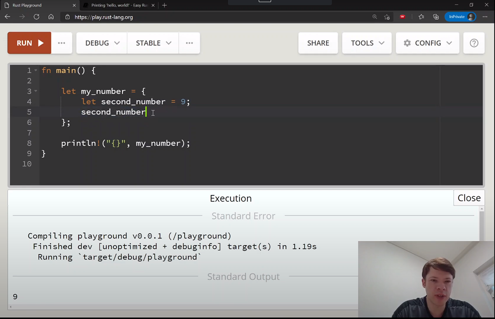

Update

22 December 2020: mdBook can be found here.
28 November 2020: Now also available in simplified Chinese thanks to kumakichi!
1 February 2021: Now available on YouTube!

Introduction
Rust is a new language that already has good textbooks. But sometimes its textbooks are difficult because they are for native English speakers. Many companies and people now learn Rust, and they could learn faster with a book that has easy English. This textbook is for these companies and people to learn Rust with simple English.
Rust is a language that is quite new, but already very popular. It's popular because it gives you the speed and control of C or C++ but also the memory safety of other newer languages like Python. It does this with some new ideas that are sometimes different from other languages. That means that there are some new things to learn, and you can't just "figure it out as you go along". Rust is a language that you have to think about for a while to understand. But it still looks pretty familiar if you know another language and it is made to help you write good code.
Who am I?
I am a Canadian who lives in Korea, and I wrote Easy Rust while thinking of how to make it easy for companies here to start using it. I hope that other countries that don't use English as a first language can use it too.
Writing Rust in Easy English
Rust in Easy English was written from July to August 2020, and is over 400 pages long. You can contact me here or on LinkedIn or on Twitter if you have any questions. If you see anything wrong or have a pull request to make, go ahead. Over 20 people have already helped out by fixing typos and problems in the code, so you can too. I'm not the world's best Rust expert so I always like to hear new ideas or see where I can make the book better.
- Part 1 - Rust in your browser
- Rust Playground
- 🚧 and ⚠️
- Comments
- Types
- Type inference
- Printing 'hello, world!'
- Display and debug
- Mutability (changing)
- The stack, the heap, and pointers
- More about printing
- Strings
- const and static
- More on references
- Mutable references
- Giving references to functions
- Copy types
- Collection types
- Vectors
- Tuples
- Control flow
- Structs
- Enums
- Loops
- Implementing structs and enums
- Destructuring
- References and the dot operator
- Generics
- Option and Result
- Other collections
- The ? operator
- Traits
- Chaining methods
- Iterators
- Closures
- The dbg! macro and .inspect
- Types of &str
- Lifetimes
- Interior mutability
- RefCell
- Mutex
- RwLock
- Cow
- Type aliases
- The todo! macro
- Rc
- Multiple threads
- Closures in functions
- impl Trait
- Arc
- Channels
- Reading Rust documentation
- Attributes
- Box
- Box around traits
- Default and the builder pattern
- Deref and DerefMut
- Crates and modules
- Testing
- External crates
- A tour of the standard library
- Writing macros
- Part 2 - Rust on your computer
Part 1 - Rust in your browser
This book has two parts. In Part 1, you will learn as much Rust as you can just in your browser. You can actually learn almost everything you need to know without installing Rust, so Part 1 is very long. Then at the end is Part 2. It is much shorter, and is about Rust on your computer. That's where you will learn everything else you need to know that you can only do outside of a browser. Some examples are: working with files, taking user input, graphics, and personal settings. Hopefully, by the end of Part 1 you will like Rust enough that you will install it. And if you don't, no problem - Part 1 teaches you so much that you won't mind.
Rust Playground
Maybe you don't want to install Rust yet, and that's okay. You can go to https://play.rust-lang.org/ and start writing Rust without leaving your browser. You can write your code there and click Run to see the results. You can run most of the samples in this book inside the Playground in your browser. Only near the end you will see samples that go beyond what you can do in the Playground (like opening files).
Here are some tips when using the Rust Playground:
- Run your code with Run
- Change Debug to Release if you want your code to be faster. Debug: compiles faster, runs slower, contains debug information. Release: compiles slower, runs much faster, removes debug information.
- Click on Share to get a url link. You can use that to share your code if you want help. After you click share, you can click on
Open a new thread in the Rust user forumto ask people there for help right away. - Tools: Rustfmt will format your code nicely.
- Tools: Clippy will give you extra information about how to make your code better.
- Config: here you can change your theme to dark mode so you can work at night, and many other configurations.
If you want to install Rust, go here https://www.rust-lang.org/tools/install and follow the instructions. Usually you will use rustup to install and update Rust.
🚧 and ⚠️
Sometimes the code examples in the book don't work. If an example doesn't work, it will have a 🚧 or a ⚠️ in it. 🚧 is like "under construction": it means that the code is not complete. Rust needs a fn main() (a main function) to run, but sometimes we just want to look at small pieces of code so it won't have a fn main(). Those examples are correct, but need a fn main() for you to run them. And some code examples show you a problem that we will fix. Those ones might have a fn main() but generate an error, and so they will have a ⚠️.
Comments
Comments are made for programmers to read, not the computer. It's good to write comments to help other people understand your code. It's also good to help you understand your code later. (Many people write good code but then forget why they wrote it.) To write comments in Rust you usually use //:
fn main() { // Rust programs start with fn main() // You put the code inside a block. It starts with { and ends with } let some_number = 100; // We can write as much as we want here and the compiler won't look at it }
When you do this, the compiler won't look at anything to the right of the //.
There is another kind of comment that you write with /* to start and */ to end. This one is useful to write in the middle of your code.
fn main() { let some_number/*: i16*/ = 100; }
To the compiler, let some_number/*: i16*/ = 100; looks like let some_number = 100;.
The /* */ form is also useful for very long comments over more than one line. In this example you can see that you need to write // for every line. But if you type /*, it won't stop until you finish it with */.
fn main() { let some_number = 100; /* Let me tell you a little about this number. It's 100, which is my favourite number. It's called some_number but actually I think that... */ let some_number = 100; // Let me tell you // a little about this number. // It's 100, which is my favourite number. // It's called some_number but actually I think that... }
Types
Rust has many types that let you work with numbers, characters, and so on. Some are simple, others are more complicated, and you can even create your own.
Primitive types
Rust has simple types that are called primitive types (primitive = very basic). We will start with integers and char (characters). Integers are whole numbers with no decimal point. There are two types of integers:
- Signed integers,
- Unsigned integers.
Signed means + (plus sign) and - (minus sign), so signed integers can be positive or negative (e.g. +8, -8). But unsigned integers can only be positive, because they do not have a sign.
The signed integers are: i8, i16, i32, i64, i128, and isize.
The unsigned integers are: u8, u16, u32, u64, u128, and usize.
The number after the i or the u means the number of bits for the number, so numbers with more bits can be larger. 8 bits = one byte, so i8 is one byte, i64 is 8 bytes, and so on. Number types with larger sizes can hold larger numbers. For example, a u8 can hold up to 255, but a u16 can hold up to 65535. And a u128 can hold up to 340282366920938463463374607431768211455.
So what is isize and usize? This means the number of bits on your type of computer. (The number of bits on your computer is called the architecture of your computer.) So isize and usize on a 32-bit computer is like i32 and u32, and isize and usize on a 64-bit computer is like i64 and u64.
There are many reasons for the different types of integers. One reason is computer performance: a smaller number of bytes is faster to process. For example, the number -10 as an i8 is 11110110, but as an i128 it is 11111111111111111111111111111111111111111111111111111111111111111111111111111111111111111111111111111111111111111111111111110110. But here are some other uses:
Characters in Rust are called char. Every char has a number: the letter A is number 65, while the character 友 ("friend" in Chinese) is number 21451. The list of numbers is called "Unicode". Unicode uses smaller numbers for characters that are used more, like A through Z, or digits 0 through 9, or space.
fn main() { let first_letter = 'A'; let space = ' '; // A space inside ' ' is also a char let other_language_char = 'Ꮔ'; // Thanks to Unicode, other languages like Cherokee display just fine too let cat_face = '😺'; // Emojis are chars too }
The characters that are used most have numbers less than 256, and they can fit into a u8. Remember, a u8 is 0 plus all the numbers up to 255, for 256 in total. This means that Rust can safely cast a u8 into a char, using as. ("Cast u8 as char" means "pretend u8 is a char")
Casting with as is useful because Rust is very strict. It always needs to know the type, and won't let you use two different types together even if they are both integers. For example, this will not work:
fn main() { // main() is where Rust programs start to run. Code goes inside {} (curly brackets) let my_number = 100; // We didn't write a type of integer, // so Rust chooses i32. Rust always // chooses i32 for integers if you don't // tell it to use a different type println!("{}", my_number as char); // ⚠️ }
Here is the reason:
error[E0604]: only `u8` can be cast as `char`, not `i32`
--> src\main.rs:3:20
|
3 | println!("{}", my_number as char);
| ^^^^^^^^^^^^^^^^^
Fortunately we can easily fix this with as. We can't cast i32 as a char, but we can cast an i32 as a u8. And then we can do the same from u8 to char. So in one line we use as to make my_number a u8, and again to make it a char. Now it will compile:
fn main() { let my_number = 100; println!("{}", my_number as u8 as char); }
It prints d because that is the char in place 100.
The easier way, however, is just to tell Rust that my_number is a u8. Here's how you do it:
fn main() { let my_number: u8 = 100; // change my_number to my_number: u8 println!("{}", my_number as char); }
So those are two reasons for all the different number types in Rust. Here is another reason: usize is the size that Rust uses for indexing. (Indexing means "which item is first", "which item is second", etc.) usize is the best size for indexing because:
- An index can't be negative, so it needs to be a number with a u
- It should be big, because sometimes you need to index many things, but
- It can't be a u64 because 32-bit computers can't use u64.
So Rust uses usize so that your computer can get the biggest number for indexing that it can read.
Let's learn some more about char. You saw that a char is always one character, and uses '' instead of "".
All chars are 4 bytes. They are 4 bytes because some characters in a string are more than one byte. Basic letters that have always been on computers are 1 byte, later characters are 2 bytes, and others are 3 and 4. A char needs to be 4 bytes so that it can hold any kind of character.
We can use .len() to see this for ourselves:
fn main() { println!("{}", "a".len()); // .len() gives the size in bytes println!("{}", "ß".len()); println!("{}", "国".len()); println!("{}", "𓅱".len()); }
This prints:
1
2
3
4
You can see that a is one byte, the German ß is two, the Japanese 国 is three, and the ancient Egyptian 𓅱 is 4 bytes.
fn main() { let slice = "Hello!"; println!("Slice is {} bytes.", slice.len()); let slice2 = "안녕!"; // Korean for "hi" println!("Slice2 is {} bytes.", slice2.len()); }
This prints:
Slice is 6 bytes.
Slice2 is 7 bytes.
slice is 6 characters in length and 6 bytes, but slice2 is 3 characters in length and 7 bytes.
If .len() gives the size in bytes, what about the size in characters? We will learn about these methods later, but you can just remember that .chars().count() will do it. .chars().count() turns what you wrote into characters and then counts how many there are.
fn main() { let slice = "Hello!"; println!("Slice is {} bytes and also {} characters.", slice.len(), slice.chars().count()); let slice2 = "안녕!"; println!("Slice2 is {} bytes but only {} characters.", slice2.len(), slice2.chars().count()); }
This prints:
Slice is 6 bytes and also 6 characters.
Slice2 is 7 bytes but only 3 characters.
Type inference
Type inference means that if you don't tell the compiler the type, but it can decide by itself, it will decide. The compiler always needs to know the type of the variables, but you don’t always need to tell it. Actually, usually you don't need to tell it. For example, for let my_number = 8, my_number will be an i32. That is because the compiler chooses i32 for integers if you don't tell it. But if you say let my_number: u8 = 8, it will make my_number a u8, because you told it u8.
So usually the compiler can guess. But sometimes you need to tell it, for two reasons:
- You are doing something very complex and the compiler doesn't know the type you want.
- You want a different type (for example, you want an
i128, not ani32).
To specify a type, add a colon after the variable name.
fn main() { let small_number: u8 = 10; }
For numbers, you can say the type after the number. You don't need a space - just type it right after the number.
fn main() { let small_number = 10u8; // 10u8 = 10 of type u8 }
You can also add _ if you want to make the number easy to read.
fn main() { let small_number = 10_u8; // This is easier to read let big_number = 100_000_000_i32; // 100 million is easy to read with _ }
The _ does not change the number. It is only to make it easy for you to read. And it doesn't matter how many _ you use:
fn main() { let number = 0________u8; let number2 = 1___6______2____4______i32; println!("{}, {}", number, number2); }
This prints 0, 1624.
Floats
Floats are numbers with decimal points. 5.5 is a float, and 6 is an integer. 5.0 is also a float, and even 5. is a float.
fn main() { let my_float = 5.; // Rust sees . and knows that it is a float }
But the types are not called float, they are called f32 and f64. It is the same as integers: the number after f shows the number of bits. If you don't write the type, Rust will choose f64.
Of course, only floats of the same type can be used together. So you can't add an f32 to an f64.
fn main() { let my_float: f64 = 5.0; // This is an f64 let my_other_float: f32 = 8.5; // This is an f32 let third_float = my_float + my_other_float; // ⚠️ }
When you try to run this, Rust will say:
error[E0308]: mismatched types
--> src\main.rs:5:34
|
5 | let third_float = my_float + my_other_float;
| ^^^^^^^^^^^^^^ expected `f64`, found `f32`
The compiler writes "expected (type), found (type)" when you use the wrong type. It reads your code like this:
fn main() { let my_float: f64 = 5.0; // The compiler sees an f64 let my_other_float: f32 = 8.5; // The compiler sees an f32. It is a different type. let third_float = my_float + // You want to add my_float to something, so it must be an f64 plus another f64. Now it expects an f64... let third_float = my_float + my_other_float; // ⚠️ but it found an f32. It can't add them. }
So when you see "expected (type), found (type)", you must find why the compiler expected a different type.
Of course, with simple numbers it is easy to fix. You can cast the f32 to an f64 with as:
fn main() { let my_float: f64 = 5.0; let my_other_float: f32 = 8.5; let third_float = my_float + my_other_float as f64; // my_other_float as f64 = use my_other_float like an f64 }
Or even more simply, remove the type declarations. ("to declare a type" = "to tell Rust to use the type") Rust will choose types that can add together.
fn main() { let my_float = 5.0; // Rust will choose f64 let my_other_float = 8.5; // Here again it will choose f64 let third_float = my_float + my_other_float; }
The Rust compiler is smart and will not choose f64 if you need f32:
fn main() { let my_float: f32 = 5.0; let my_other_float = 8.5; // Usually Rust would choose f64, let third_float = my_float + my_other_float; // but now it knows that you need to add it to an f32. So it chooses f32 for my_other_float too }
Printing 'hello, world!'
See this chapter on YouTube: Video 1, Video 2
When you start a new Rust program, it always has this code:
fn main() { println!("Hello, world!"); }
fnmeans function,mainis the function that starts the program,()means that we didn't give the function any variables to start.
{} is called a code block. This is the space where code lives.
println! is a macro that prints to the console. A macro is like a function that writes code for you. Macros have a ! after them. We will learn about making macros later. For now, remember that ! means that it is a macro.
To learn about the ;, we will create another function. First, in main we will print a number 8:
fn main() { println!("Hello, world number {}!", 8); }
The {} in println! means "put the variable inside here". This prints Hello, world number 8!.
We can put more in, just like we did before:
fn main() { println!("Hello, worlds number {} and {}!", 8, 9); }
This prints Hello, worlds number 8 and 9!.
Now let's create the function.
fn number() -> i32 { 8 } fn main() { println!("Hello, world number {}!", number()); }
This also prints Hello, world number 8!. When Rust looks at number() it sees a function. This function:
- Does not take anything (because it has
()) - Returns an
i32. The->(called a "skinny arrow") shows what the function returns.
Inside the function is just 8. Because there is no ;, this is the value it returns. If it had a ;, it would not return anything (it would return a ()). Rust will not compile this if it has a ;, because the return is i32 and ; returns (), not i32:
fn main() { println!("Hello, world number {}", number()); } fn number() -> i32 { 8; // ⚠️ }
5 | fn number() -> i32 {
| ------ ^^^ expected `i32`, found `()`
| |
| implicitly returns `()` as its body has no tail or `return` expression
6 | 8;
| - help: consider removing this semicolon
This means "you told me that number() returns an i32, but you added a ; so it doesn't return anything". So the compiler suggests removing the semicolon.
You can also write return 8; but in Rust it is normal to just remove the ; to return.
When you want to give variables to a function, put them inside the (). You have to give them a name and write the type.
fn multiply(number_one: i32, number_two: i32) { // Two i32s will enter the function. We will call them number_one and number_two. let result = number_one * number_two; println!("{} times {} is {}", number_one, number_two, result); } fn main() { multiply(8, 9); // We can give the numbers directly let some_number = 10; // Or we can declare two variables let some_other_number = 2; multiply(some_number, some_other_number); // and put them in the function }
We can also return an i32. Just take out the semicolon at the end:
fn multiply(number_one: i32, number_two: i32) -> i32 { let result = number_one * number_two; println!("{} times {} is {}", number_one, number_two, result); result // this is the i32 that we return } fn main() { let multiply_result = multiply(8, 9); // We used multiply() to print and to give the result to multiply_result }
Declaring variables and code blocks
Use let to declare a variable (declare a variable = tell Rust to make a variable).
fn main() { let my_number = 8; println!("Hello, number {}", my_number); }
Variables start and end inside a code block {}. In this example, my_number ends before we call println!, because it is inside its own code block.
fn main() { { let my_number = 8; // my_number starts here // my_number ends here! } println!("Hello, number {}", my_number); // ⚠️ there is no my_number and // println!() can't find it }
You can use a code block to return a value:
fn main() { let my_number = { let second_number = 8; second_number + 9 // No semicolon, so the code block returns 8 + 9. // It works just like a function }; println!("My number is: {}", my_number); }
If you add a semicolon inside the block, it will return () (nothing):
fn main() { let my_number = { let second_number = 8; // declare second_number, second_number + 9; // add 9 to second_number // but we didn't return it! // second_number dies now }; println!("My number is: {:?}", my_number); // my_number is () }
So why did we write {:?} and not {}? We will talk about that now.
Display and debug
Simple variables in Rust can be printed with {} inside println!. But some variables can't, and you need to debug print. Debug print is printing for the programmer, because it usually shows more information. Debug sometimes doesn't look pretty, because it has extra information to help you.
How do you know if you need {:?} and not {}? The compiler will tell you. For example:
fn main() { let doesnt_print = (); println!("This will not print: {}", doesnt_print); // ⚠️ }
When we run this, the compiler says:
error[E0277]: `()` doesn't implement `std::fmt::Display`
--> src\main.rs:3:41
|
3 | println!("This will not print: {}", doesnt_print);
| ^^^^^^^^^^^^ `()` cannot be formatted with the default formatter
|
= help: the trait `std::fmt::Display` is not implemented for `()`
= note: in format strings you may be able to use `{:?}` (or {:#?} for pretty-print) instead
= note: required by `std::fmt::Display::fmt`
= note: this error originates in a macro (in Nightly builds, run with -Z macro-backtrace for more info)
This is a lot of information. But the important part is: you may be able to use {:?} (or {:#?} for pretty-print) instead. This means that you can try {:?}, and also {:#?} {:#?} is called "pretty printing". It is like {:?} but prints with different formatting over more lines.
So Display means printing with {}, and Debug means printing with {:?}.
One more thing: you can also use print! without ln if you don't want a new line.
fn main() { print!("This will not print a new line"); println!(" so this will be on the same line"); }
This prints This will not print a new line so this will be on the same line.
Smallest and largest numbers
If you want to see the smallest and biggest numbers, you can use MIN and MAX. std means "standard library" and has all the main functions etc. for Rust. We will learn about the standard library later. But in the meantime, you can remember that this is how you get the smallest and largest number for a type.
fn main() { println!("The smallest i8 is {} and the biggest i8 is {}.", std::i8::MIN, std::i8::MAX); // hint: printing std::i8::MIN means "print MIN inside of the i8 section in the standard library" println!("The smallest u8 is {} and the biggest u8 is {}.", std::u8::MIN, std::u8::MAX); println!("The smallest i16 is {} and the biggest i16 is {}.", std::i16::MIN, std::i16::MAX); println!("The smallest u16 is {} and the biggest u16 is {}.", std::u16::MIN, std::u16::MAX); println!("The smallest i32 is {} and the biggest i32 is {}.", std::i32::MIN, std::i32::MAX); println!("The smallest u32 is {} and the biggest u32 is {}.", std::u32::MIN, std::u32::MAX); println!("The smallest i64 is {} and the biggest i64 is {}.", std::i64::MIN, std::i64::MAX); println!("The smallest u64 is {} and the biggest u64 is {}.", std::u64::MIN, std::u64::MAX); println!("The smallest i128 is {} and the biggest i128 is {}.", std::i128::MIN, std::i128::MAX); println!("The smallest u128 is {} and the biggest u128 is {}.", std::u128::MIN, std::u128::MAX); }
This will print:
The smallest i8 is -128 and the biggest i8 is 127.
The smallest u8 is 0 and the biggest u8 is 255.
The smallest i16 is -32768 and the biggest i16 is 32767.
The smallest u16 is 0 and the biggest u16 is 65535.
The smallest i32 is -2147483648 and the biggest i32 is 2147483647.
The smallest u32 is 0 and the biggest u32 is 4294967295.
The smallest i64 is -9223372036854775808 and the biggest i64 is 9223372036854775807.
The smallest u64 is 0 and the biggest u64 is 18446744073709551615.
The smallest i128 is -170141183460469231731687303715884105728 and the biggest i128 is 170141183460469231731687303715884105727.
The smallest u128 is 0 and the biggest u128 is 340282366920938463463374607431768211455.
Mutability (changing)
When you declare a variable with let, it is immutable (cannot be changed).
This will not work:
fn main() { let my_number = 8; my_number = 10; // ⚠️ }
The compiler says: error[E0384]: cannot assign twice to immutable variable my_number. This is because variables are immutable if you only write let.
But sometimes you want to change your variable. To make a variable that you can change, add mut after let:
fn main() { let mut my_number = 8; my_number = 10; }
Now there is no problem.
However, you cannot change the type: even mut doesn't let you do that. This will not work:
fn main() { let mut my_variable = 8; // it is now an i32. That can't be changed my_variable = "Hello, world!"; // ⚠️ }
You will see the same "expected" message from the compiler: expected integer, found &str. &str is a string type that we will learn soon.
Shadowing
Shadowing means using let to declare a new variable with the same name as another variable. It looks like mutability, but it is completely different. Shadowing looks like this:
fn main() { let my_number = 8; // This is an i32 println!("{}", my_number); // prints 8 let my_number = 9.2; // This is an f64 with the same name. But it's not the first my_number - it is completely different! println!("{}", my_number) // Prints 9.2 }
Here we say that we "shadowed" my_number with a new "let binding".
So is the first my_number destroyed? No, but when we call my_number we now get my_number the f64. And because they are in the same scope block (the same {}), we can't see the first my_number anymore.
But if they are in different blocks, we can see both. For example:
fn main() { let my_number = 8; // This is an i32 println!("{}", my_number); // prints 8 { let my_number = 9.2; // This is an f64. It is not my_number - it is completely different! println!("{}", my_number) // Prints 9.2 // But the shadowed my_number only lives until here. // The first my_number is still alive! } println!("{}", my_number); // prints 8 }
So when you shadow a variable, you don't destroy it. You block it.
So what is the advantage of shadowing? Shadowing is good when you need to change a variable a lot. Imagine that you want to do a lot of simple math with a variable:
fn times_two(number: i32) -> i32 { number * 2 } fn main() { let final_number = { let y = 10; let x = 9; // x starts at 9 let x = times_two(x); // shadow with new x: 18 let x = x + y; // shadow with new x: 28 x // return x: final_number is now the value of x }; println!("The number is now: {}", final_number) }
Without shadowing you would have to think of different names, even though you don't care about x:
fn times_two(number: i32) -> i32 { number * 2 } fn main() { // Pretending we are using Rust without shadowing let final_number = { let y = 10; let x = 9; // x starts at 9 let x_twice = times_two(x); // second name for x let x_twice_and_y = x_twice + y; // third name for x! x_twice_and_y // too bad we didn't have shadowing - we could have just used x }; println!("The number is now: {}", final_number) }
In general, you see shadowing in Rust in this case. It happens where you want to quickly take variable, do something to it, and do something else again. And you usually use it for quick variables that you don't care too much about.
The stack, the heap, and pointers
The stack, the heap, and pointers are very important in Rust.
The stack and the heap are two places to keep memory in computers. The important differences are:
- The stack is very fast, but the heap is not so fast. It's not super slow either, but the stack is always faster. But you can't just use the stack all the time, because:
- Rust needs to know the size of a variable at compile time. So simple variables like
i32go on the stack, because we know their exact size. You always know that ani32is going to be 4 bytes, because 32 bits = 4 bytes. Soi32can always go on the stack. - But some types don't know the size at compile time. But the stack needs to know the exact size. So what do you do? First you put the data in the heap, because the heap can have any size of data. And then to find it a pointer goes on the stack. This is fine because we always know the size of a pointer. So then the computer first goes to the stack, reads the pointer, and follows it to the heap where the data is.
Pointers sound complicated, but they are easy. Pointers are like a table of contents in a book. Imagine this book:
MY BOOK
TABLE OF CONTENTS
Chapter Page
Chapter 1: My life 1
Chapter 2: My cat 15
Chapter 3: My job 23
Chapter 4: My family 30
Chapter 5: Future plans 43
So this is like five pointers. You can read them and find the information they are talking about. Where is the chapter "My life"? It's on page 1 (it points to page 1). Where is the chapter "My job?" It's on page 23.
The pointer you usually see in Rust is called a reference. This is the important part to know: a reference points to the memory of another value. A reference means you borrow the value, but you don't own it. It's the same as our book: the table of contents doesn't own the information. It's the chapters that own the information. In Rust, references have a & in front of them. So:
let my_variable = 8makes a regular variable, butlet my_reference = &my_variablemakes a reference.
You read my_reference = &my_variable like this: "my_reference is a reference to my_variable". Or: "my_reference refers to my_variable".
This means that my_reference is only looking at the data of my_variable. my_variable still owns its data.
You can also have a reference to a reference, or any number of references.
fn main() { let my_number = 15; // This is an i32 let single_reference = &my_number; // This is a &i32 let double_reference = &single_reference; // This is a &&i32 let five_references = &&&&&my_number; // This is a &&&&&i32 }
These are all different types, just in the same way that "a friend of a friend" is different from "a friend".
More about printing
In Rust you can print things in almost any way you want. Here are some more things to know about printing.
Adding \n will make a new line, and \t will make a tab:
fn main() { // Note: this is print!, not println! print!("\t Start with a tab\nand move to a new line"); }
This prints:
Start with a tab
and move to a new line
Inside "" you can write over many lines with no problem, but be careful with the spacing:
fn main() { // Note: After the first line you have to start on the far left. // If you write directly under println!, it will add the spaces println!("Inside quotes you can write over many lines and it will print just fine."); println!("If you forget to write on the left side, the spaces will be added when you print."); }
This prints:
Inside quotes
you can write over
many lines
and it will print just fine.
If you forget to write
on the left side, the spaces
will be added when you print.
If you want to print characters like \n (called "escape characters"), you can add an extra \:
fn main() { println!("Here are two escape characters: \\n and \\t"); }
This prints:
Here are two escape characters: \n and \t
Sometimes you have too many " and escape characters, and want Rust to ignore everything. To do this, you can add r# to the beginning and # to the end.
fn main() { println!("He said, \"You can find the file at c:\\files\\my_documents\\file.txt.\" Then I found the file."); // We used \ five times here println!(r#"He said, "You can find the file at c:\files\my_documents\file.txt." Then I found the file."#) }
This prints the same thing, but using r# makes it easier for humans to read.
He said, "You can find the file at c:\files\my_documents\file.txt." Then I found the file.
He said, "You can find the file at c:\files\my_documents\file.txt." Then I found the file.
If you need to print with a # inside, then you can start with r## and end with ##. And if you need more than one, you can add one more # on each side.
Here are four examples:
fn main() { let my_string = "'Ice to see you,' he said."; // single quotes let quote_string = r#""Ice to see you," he said."#; // double quotes let hashtag_string = r##"The hashtag #IceToSeeYou had become very popular."##; // Has one # so we need at least ## let many_hashtags = r####""You don't have to type ### to use a hashtag. You can just use #.""####; // Has three ### so we need at least #### println!("{}\n{}\n{}\n{}\n", my_string, quote_string, hashtag_string, many_hashtags); }
This will print:
'Ice to see you,' he said.
"Ice to see you," he said.
The hashtag #IceToSeeYou had become very popular.
"You don't have to type ### to use a hashtag. You can just use #."
r# has another use: with it you can use a keyword (words like let, fn, etc.) as a variable name.
fn main() { let r#let = 6; // The variable's name is let let mut r#mut = 10; // This variable's name is mut }
r# has this function because older versions of Rust had fewer keywords than Rust now. So with r# you can avoid mistakes with variable names that were not keywords before.
Or maybe for some reason you really need a function to have a name like return. Then you can write this:
fn r#return() -> u8 { println!("Here is your number."); 8 } fn main() { let my_number = r#return(); println!("{}", my_number); }
This prints:
Here is your number.
8
So you probably won't need it, but if you really need to use a keyword for a variable then you can use r#.
If you want to print the bytes of a &str or a char, you can just write b before the string. This works for all ASCII characters. These are all the ASCII characters:
☺☻♥♦♣♠♫☼►◄↕‼¶§▬↨↑↓→∟↔▲▼123456789:;<=>?@ABCDEFGHIJKLMNOPQRSTUVWXYZ[\]^_`abcdefghijklmnopqrstuvwxyz{|}~
So when you print this:
fn main() { println!("{:?}", b"This will look like numbers"); }
Here is the result:
[84, 104, 105, 115, 32, 119, 105, 108, 108, 32, 108, 111, 111, 107, 32, 108, 105, 107, 101, 32, 110, 117, 109, 98, 101, 114, 115]
For a char this is called a byte, and for a &str it's called a byte string.
You can also put b and r together if you need to:
fn main() { println!("{:?}", br##"I like to write "#"."##); }
That will print [73, 32, 108, 105, 107, 101, 32, 116, 111, 32, 119, 114, 105, 116, 101, 32, 34, 35, 34, 46].
There is also a Unicode escape that lets you print any Unicode character inside a string: \u{}. A hexadecimal number goes inside the {} to print it. Here is a short example of how to get the Unicode number, and how to print it again.
fn main() { println!("{:X}", '행' as u32); // Cast char as u32 to get the hexadecimal value println!("{:X}", 'H' as u32); println!("{:X}", '居' as u32); println!("{:X}", 'い' as u32); println!("\u{D589}, \u{48}, \u{5C45}, \u{3044}"); // Try printing them with unicode escape \u }
We know that println! can print with {} (for Display) and {:?} (for Debug), plus {:#?} for pretty printing. But there are many other ways to print.
For example, if you have a reference, you can use {:p} to print the pointer address. Pointer address means the location in your computer's memory.
fn main() { let number = 9; let number_ref = &number; println!("{:p}", number_ref); }
This prints 0xe2bc0ffcfc or some other address. It might be different every time, depending on where your computer stores it.
Or you can print binary, hexadecimal and octal:
fn main() { let number = 555; println!("Binary: {:b}, hexadecimal: {:x}, octal: {:o}", number, number, number); }
This prints Binary: 1000101011, hexadecimal: 22b, octal: 1053.
Or you can add numbers to change the order. The first variable will be in index 0, the next in index 1, and so on.
fn main() { let father_name = "Vlad"; let son_name = "Adrian Fahrenheit"; let family_name = "Țepeș"; println!("This is {1} {2}, son of {0} {2}.", father_name, son_name, family_name); }
father_name is in position 0, son_name is in position 1, and family_name is in position 2. So it prints This is Adrian Fahrenheit Țepeș, son of Vlad Țepeș.
Maybe you have a very complex string to print with too many variables inside the {} curly brackets. Or maybe you need to print a variable more than one time. Then it can help to add names to the {}:
fn main() { println!( "{city1} is in {country} and {city2} is also in {country}, but {city3} is not in {country}.", city1 = "Seoul", city2 = "Busan", city3 = "Tokyo", country = "Korea" ); }
That will print:
Seoul is in Korea and Busan is also in Korea,
but Tokyo is not in Korea.
Very complex printing is also possible in Rust if you want to use it. Here is how to do it:
{variable:padding alignment minimum.maximum}
To understand this, look at the
- Do you want a variable name? Write that first, like when we wrote {country} above.
(Then add a
:after it if you want to do more things) - Do you want a padding character? For example, 55 with three "padding zeros" looks like 00055.
- What alignment (left / middle / right) for the padding?
- Do you want a minimum length? (just write a number)
- Do you want a maximum length? (write a number with a
.in front)
For example, if I want to write "a" with five ㅎ characters on the left and five ㅎ characters on the right:
fn main() { let letter = "a"; println!("{:ㅎ^11}", letter); }
This prints ㅎㅎㅎㅎㅎaㅎㅎㅎㅎㅎ. Let's look at 1) to 5) for this to understand how the compiler reads it.
- Do you want a variable name?
{:ㅎ^11}There is no variable name. There is nothing before:. - Do you want a padding character?
{:ㅎ^11}Yes. ㅎ comes after the:and has a^.<means padding with the character on the left,>means on the right, and^means in the middle. - Do you want a minimum length?
{:ㅎ^11}Yes: there is an 11 after. - Do you want a maximum length?
{:ㅎ^11}No: there is no number with a.before.
Here is an example of many types of formatting.
fn main() { let title = "TODAY'S NEWS"; println!("{:-^30}", title); // no variable name, pad with -, put in centre, 30 characters long let bar = "|"; println!("{: <15}{: >15}", bar, bar); // no variable name, pad with space, 15 characters each, one to the left, one to the right let a = "SEOUL"; let b = "TOKYO"; println!("{city1:-<15}{city2:->15}", city1 = a, city2 = b); // variable names city1 and city2, pad with -, one to the left, one to the right }
It prints:
---------TODAY'S NEWS---------
| |
SEOUL--------------------TOKYO
Strings
Rust has two main types of strings: String and &str. What is the difference?
&stris a simple string. When you writelet my_variable = "Hello, world!", you create a&str. A&stris very fast.Stringis a more complicated string. It is a bit slower, but it has more functions. AStringis a pointer, with data on the heap.
Also note that &str has the & in front of it because you need a reference to use a str. That's because of the reason we saw above: the stack needs to know the size. So we give it a & that it knows the size of, and then it is happy. Also, because you use a & to interact with a str, you don't own it. But a String is an owned type. We will soon learn why that is important to know.
Both &str and String are UTF-8. For example, you can write:
fn main() { let name = "서태지"; // This is a Korean name. No problem, because a &str is UTF-8. let other_name = String::from("Adrian Fahrenheit Țepeș"); // Ț and ș are no problem in UTF-8. }
You can see in String::from("Adrian Fahrenheit Țepeș") that it is easy to make a String from a &str. The two types are very closely linked together, even though they are different.
You can even write emojis, thanks to UTF-8.
fn main() { let name = "😂"; println!("My name is actually {}", name); }
On your computer that will print My name is actually 😂 unless your command line can't print it. Then it will show My name is actually �. But Rust has no problem with emojis or any other Unicode.
Let's look at the reason for using a & for strs again to make sure we understand.
stris a dynamically sized type (dynamically sized = the size can be different). For example, the names "서태지" and "Adrian Fahrenheit Țepeș" are not the same size:
fn main() { println!("A String is always {:?} bytes. It is Sized.", std::mem::size_of::<String>()); // std::mem::size_of::<Type>() gives you the size in bytes of a type println!("And an i8 is always {:?} bytes. It is Sized.", std::mem::size_of::<i8>()); println!("And an f64 is always {:?} bytes. It is Sized.", std::mem::size_of::<f64>()); println!("But a &str? It can be anything. '서태지' is {:?} bytes. It is not Sized.", std::mem::size_of_val("서태지")); // std::mem::size_of_val() gives you the size in bytes of a variable println!("And 'Adrian Fahrenheit Țepeș' is {:?} bytes. It is not Sized.", std::mem::size_of_val("Adrian Fahrenheit Țepeș")); }
This prints:
A String is always 24 bytes. It is Sized.
And an i8 is always 1 bytes. It is Sized.
And an f64 is always 8 bytes. It is Sized.
But a &str? It can be anything. '서태지' is 9 bytes. It is not Sized.
And 'Adrian Fahrenheit Țepeș' is 25 bytes. It is not Sized.
That is why we need a &, because & makes a pointer, and Rust knows the size of the pointer. So the pointer goes on the stack. If we wrote str, Rust wouldn't know what to do because it doesn't know the size.
There are many ways to make a String. Here are some:
String::from("This is the string text");This a method for String that takes text and creates a String."This is the string text".to_string(). This is a method for &str that makes it a String.- The
format!macro. This is likeprintln!except it creates a String instead of printing. So you can do this:
fn main() { let my_name = "Billybrobby"; let my_country = "USA"; let my_home = "Korea"; let together = format!( "I am {} and I come from {} but I live in {}.", my_name, my_country, my_home ); }
Now we have a String named together, but did not print it yet.
One other way to make a String is called .into() but it is a bit different because .into() isn't just for making a String. Some types can easily convert to and from another type using From and .into(). And if you have From, then you also have .into(). From is clearer because you already know the types: you know that String::from("Some str") is a String from a &str. But with .into(), sometimes the compiler doesn't know:
fn main() { let my_string = "Try to make this a String".into(); // ⚠️ }
Rust doesn't know what type you want, because many types can be made from a &str. It says, "I can make a &str into a lot of things. Which one do you want?"
error[E0282]: type annotations needed
--> src\main.rs:2:9
|
2 | let my_string = "Try to make this a String".into();
| ^^^^^^^^^ consider giving `my_string` a type
So you can do this:
fn main() { let my_string: String = "Try to make this a String".into(); }
And now you get a String.
const and static
There are two types that don't use let to declare: const and static. Also, Rust won't use type inference: you need to write the type for them. These are for variables that don't change (const means constant). The difference is that:
constis a value that does not change,staticis a value that does not change and has a fixed memory location.
So they are almost the same. Rust programmers almost always use const.
You write them with ALL CAPITAL LETTERS, and usually outside of main so that they can live for the whole program.
Two examples are: const NUMBER_OF_MONTHS: u32 = 12; and static SEASONS: [&str; 4] = ["Spring", "Summer", "Fall", "Winter"];
More on references
References are very important in Rust. Rust uses references to make sure that all memory access is safe. We know that we use & to create a reference:
fn main() { let country = String::from("Austria"); let ref_one = &country; let ref_two = &country; println!("{}", ref_one); }
This prints Austria.
In the code, country is a String. We then created two references to country. They have the type &String, which you say is a "reference to a String". We could create three references or one hundred references to country and it would be no problem.
But this is a problem:
fn return_str() -> &str { let country = String::from("Austria"); let country_ref = &country; country_ref // ⚠️ } fn main() { let country = return_str(); }
The function return_str() creates a String, then it creates a reference to the String. Then it tries to return the reference. But the String country only lives inside the function, and then it dies. Once a variable is gone, the computer will clean up the memory and use it for something else. So after the function is over, country_ref is referring to memory that is already gone, and that's not okay. Rust prevents us from making a mistake with memory here.
This is the important part about the "owned" type that we talked about above. Because you own a String, you can pass it around. But a &String will die if its String dies, so you don't pass around "ownership" with it.
Mutable references
If you want to use a reference to change data, you can use a mutable reference. For a mutable reference, you write &mut instead of &.
fn main() { let mut my_number = 8; // don't forget to write mut here! let num_ref = &mut my_number; }
So what are the two types? my_number is an i32, and num_ref is &mut i32 (we say a "mutable reference to an i32").
So let's use it to add 10 to my_number. But you can't write num_ref += 10, because num_ref is not the i32 value, it is a &i32. The value is actually inside the i32. To reach the place where the value is, we use *. * means "I don't want the reference, I want the value behind the reference". In other words, one * is the opposite of &. Also, one * erases one &.
fn main() { let mut my_number = 8; let num_ref = &mut my_number; *num_ref += 10; // Use * to change the i32 value. println!("{}", my_number); let second_number = 800; let triple_reference = &&&second_number; println!("Second_number = triple_reference? {}", second_number == ***triple_reference); }
This prints:
18
Second_number = triple_reference? true
Because using & is called "referencing", using * is called "dereferencing".
Rust has two rules for mutable and immutable references. They are very important, but also easy to remember because they make sense.
- Rule 1: If you have only immutable references, you can have as many as you want. 1 is fine, 3 is fine, 1000 is fine. No problem.
- Rule 2: If you have a mutable reference, you can only have one. Also, you can't have an immutable reference and a mutable reference together.
This is because mutable references can change the data. You could get problems if you change the data when other references are reading it.
A good way to understand is to think of a Powerpoint presentation.
Situation one is about only one mutable reference.
Situation one: An employee is writing a Powerpoint presentation. He wants his manager to help him. The employee gives his login information to his manager, and asks him to help by making edits. Now the manager has a "mutable reference" to the employee's presentation. The manager can make any changes he wants, and give the computer back later. This is fine, because nobody else is looking at the presentation.
Situation two is about only immutable references.
Situation two: The employee is giving the presentation to 100 people. All 100 people can now see the employee's data. They all have an "immutable reference" to the employee's presentation. This is fine, because they can see it but nobody can change the data.
Situation three is the problem situation.
Situation three: The Employee gives his manager his login information. His manager now has a "mutable reference". Then the employee went to give the presentation to 100 people, but the manager can still login. This is not fine, because the manager can log in and do anything. Maybe his manager will log into the computer and start typing an email to his mother! Now the 100 people have to watch the manager write an email to his mother instead of the presentation. That's not what they expected to see.
Here is an example of a mutable borrow with an immutable borrow:
fn main() { let mut number = 10; let number_ref = &number; let number_change = &mut number; *number_change += 10; println!("{}", number_ref); // ⚠️ }
The compiler prints a helpful message to show us the problem.
error[E0502]: cannot borrow `number` as mutable because it is also borrowed as immutable
--> src\main.rs:4:25
|
3 | let number_ref = &number;
| ------- immutable borrow occurs here
4 | let number_change = &mut number;
| ^^^^^^^^^^^ mutable borrow occurs here
5 | *number_change += 10;
6 | println!("{}", number_ref);
| ---------- immutable borrow later used here
However, this code will work. Why?
fn main() { let mut number = 10; let number_change = &mut number; // create a mutable reference *number_change += 10; // use mutable reference to add 10 let number_ref = &number; // create an immutable reference println!("{}", number_ref); // print the immutable reference }
It prints 20 with no problem. It works because the compiler is smart enough to understand our code. It knows that we used number_change to change number, but didn't use it again. So here there is no problem. We are not using immutable and mutable references together.
Earlier in Rust this kind of code actually generated an error, but the compiler is smarter now. It can understand not just what we type, but how we use everything.
Shadowing again
Remember when we said that shadowing doesn't destroy a value but blocks it? Now we can use references to see this.
fn main() { let country = String::from("Austria"); let country_ref = &country; let country = 8; println!("{}, {}", country_ref, country); }
Does this print Austria, 8 or 8, 8? It prints Austria, 8. First we declare a String called country. Then we create a reference country_ref to this string. Then we shadow country with 8, which is an i32. But the first country was not destroyed, so country_ref still says "Austria", not "8". Here is the same code with some comments to show how it works:
fn main() { let country = String::from("Austria"); // Now we have a String called country let country_ref = &country; // country_ref is a reference to this data. It's not going to change let country = 8; // Now we have a variable called country that is an i8. But it has no relation to the other one, or to country_ref println!("{}, {}", country_ref, country); // country_ref still refers to the data of String::from("Austria") that we gave it. }
Giving references to functions
See this chapter on YouTube: immutable references and mutable references
References are very useful for functions. The rule in Rust on values is: a value can only have one owner.
This code will not work:
fn print_country(country_name: String) { println!("{}", country_name); } fn main() { let country = String::from("Austria"); print_country(country); // We print "Austria" print_country(country); // ⚠️ That was fun, let's do it again! }
It does not work because country is destroyed. Here's how:
- Step 1: We create the
Stringcalledcountry.countryis the owner. - Step 2: We give
countrytoprint_country.print_countrydoesn't have an->, so it doesn't return anything. Afterprint_countryfinishes, ourStringis now dead. - Step 3: We try to give
countrytoprint_country, but we already did that. We don't havecountryto give anymore.
We can make print_country give the String back, but it is a bit awkward.
fn print_country(country_name: String) -> String { println!("{}", country_name); country_name // return it here } fn main() { let country = String::from("Austria"); let country = print_country(country); // we have to use let here now to get the String back print_country(country); }
Now it prints:
Austria
Austria
The much better way to fix this is by adding &.
fn print_country(country_name: &String) { println!("{}", country_name); } fn main() { let country = String::from("Austria"); print_country(&country); // We print "Austria" print_country(&country); // That was fun, let's do it again! }
Now print_country() is a function that takes a reference to a String: a &String. Also, we give it a reference to country by writing &country. This says "you can look at it, but I will keep it".
Now let's do something similar with a mutable reference. Here is an example of a function that uses a mutable variable.
fn add_hungary(country_name: &mut String) { // first we say that the function takes a mutable reference country_name.push_str("-Hungary"); // push_str() adds a &str to a String println!("Now it says: {}", country_name); } fn main() { let mut country = String::from("Austria"); add_hungary(&mut country); // we also need to give it a mutable reference. }
This prints Now it says: Austria-Hungary.
So to conclude:
fn function_name(variable: String)takes aStringand owns it. If it doesn't return anything, then the variable dies inside the function.fn function_name(variable: &String)borrows aStringand can look at itfn function_name(variable: &mut String)borrows aStringand can change it
Here is an example that looks like a mutable reference, but it is different.
fn main() { let country = String::from("Austria"); // country is not mutable, but we are going to print Austria-Hungary. How? adds_hungary(country); } fn adds_hungary(mut country: String) { // Here's how: adds_hungary takes the String and declares it mutable! country.push_str("-Hungary"); println!("{}", country); }
How is this possible? It is because mut country is not a reference: adds_hungary owns country now. (Remember, it takes String and not &String). The moment you call adds_hungary, it becomes the full owner. country has nothing to do with String::from("Austria") anymore. So adds_hungary can take country as mutable, and it is perfectly safe to do so.
Remember our employee Powerpoint and manager situation above? In this situation it is like the employee just giving his whole computer to the manager. The employee won't ever touch it again, so the manager can do anything he wants to it.
Copy types
Some types in Rust are very simple. They are called copy types. These simple types are all on the stack, and the compiler knows their size. That means that they are very easy to copy, so the compiler always copies when you send it to a function. It always copies because they are so small and easy that there is no reason not to copy. So you don't need to worry about ownership for these types.
These simple types include: integers, floats, booleans (true and false), and char.
How do you know if a type implements copy? (implements = can use) You can check the documentation. For example, here is the documentation for char:
https://doc.rust-lang.org/std/primitive.char.html
On the left you can see Trait Implementations. You can see for example Copy, Debug, and Display. So you know that a char:
- is copied when you send it to a function (Copy)
- can use
{}to print (Display) - can use
{:?}to print (Debug)
fn prints_number(number: i32) { // There is no -> so it's not returning anything // If number was not copy type, it would take it // and we couldn't use it again println!("{}", number); } fn main() { let my_number = 8; prints_number(my_number); // Prints 8. prints_number gets a copy of my_number prints_number(my_number); // Prints 8 again. // No problem, because my_number is copy type! }
But if you look at the documentation for String, it is not copy type.
https://doc.rust-lang.org/std/string/struct.String.html
On the left in Trait Implementations you can look in alphabetical order. A, B, C... there is no Copy in C. But there is Clone. Clone is similar to Copy, but usually needs more memory. Also, you have to call it with .clone() - it won't clone just by itself.
In this example, prints_country() prints the country name, a String. We want to print it two times, but we can't:
fn prints_country(country_name: String) { println!("{}", country_name); } fn main() { let country = String::from("Kiribati"); prints_country(country); prints_country(country); // ⚠️ }
But now we understand the message.
error[E0382]: use of moved value: `country`
--> src\main.rs:4:20
|
2 | let country = String::from("Kiribati");
| ------- move occurs because `country` has type `std::string::String`, which does not implement the `Copy` trait
3 | prints_country(country);
| ------- value moved here
4 | prints_country(country);
| ^^^^^^^ value used here after move
The important part is which does not implement the Copy trait. But in the documentation we saw that String implements the Clone trait. So we can add .clone() to our code. This creates a clone, and we send the clone to the function. Now country is still alive, so we can use it.
fn prints_country(country_name: String) { println!("{}", country_name); } fn main() { let country = String::from("Kiribati"); prints_country(country.clone()); // make a clone and give it to the function. Only the clone goes in, and country is still alive prints_country(country); }
Of course, if the String is very large, .clone() can use a lot of memory. One String can be a whole book in length, and every time we call .clone() it will copy the book. So using & for a reference is faster, if you can. For example, this code pushes a &str onto a String and then makes a clone every time it gets used in a function:
fn get_length(input: String) { // Takes ownership of a String println!("It's {} words long.", input.split_whitespace().count()); // splits to count the number of words } fn main() { let mut my_string = String::new(); for _ in 0..50 { my_string.push_str("Here are some more words "); // push the words on get_length(my_string.clone()); // gives it a clone every time } }
It prints:
It's 5 words long.
It's 10 words long.
...
It's 250 words long.
That's 50 clones. Here it is using a reference instead, which is better:
fn get_length(input: &String) { println!("It's {} words long.", input.split_whitespace().count()); } fn main() { let mut my_string = String::new(); for _ in 0..50 { my_string.push_str("Here are some more words "); get_length(&my_string); } }
Instead of 50 clones, it's zero.
Variables without values
A variable without a value is called an "uninitialized" variable. Uninitialized means "hasn't started yet". They are simple: just write let and the variable name:
fn main() { let my_variable; // ⚠️ }
But you can't use it yet, and Rust won't compile if anything is uninitialized.
But sometimes they can be useful. A good example is when:
- You have a code block and the value for your variable is inside it, and
- The variable needs to live outside of the code block.
fn loop_then_return(mut counter: i32) -> i32 { loop { counter += 1; if counter % 50 == 0 { break; } } counter } fn main() { let my_number; { // Pretend we need to have this code block let number = { // Pretend there is code here to make a number // Lots of code, and finally: 57 }; my_number = loop_then_return(number); } println!("{}", my_number); }
This prints 100.
You can see that my_number was declared in the main() function, so it lives until the end. But it gets its value from inside a loop. However, that value lives as long as my_number, because my_number has the value. And if you wrote let my_number = loop_then_return(number) inside the block, it would just die right away.
It helps to imagine if you simplify the code. loop_then_return(number) gives the result 100, so let's delete it and write 100 instead. Also, now we don't need number so we will delete it too. Now it looks like this:
fn main() { let my_number; { my_number = 100; } println!("{}", my_number); }
So it's almost like saying let my_number = { 100 };.
Also note that my_number is not mut. We didn't give it a value until we gave it 50, so it never changed its value. In the end, the real code for my_number is just let my_number = 100;.
Collection types
Rust has a lot of types for making a collection. Collections are for when you need more than one value in one spot. For example, you could have information on all the cities in your country inside one variable. We will start with arrays, which are fastest but also have the least functionality. They are kind of like &str in that way.
Arrays
An array is data inside square brackets: []. Arrays:
- must not change their size,
- must only contain the same type.
They are very fast, however.
The type of an array is: [type; number]. For example, the type of ["One", "Two"] is [&str; 2]. This means that even these two arrays have different types:
fn main() { let array1 = ["One", "Two"]; // This one is type [&str; 2] let array2 = ["One", "Two", "Five"]; // But this one is type [&str; 3]. Different type! }
Here is a good tip: to know the type of a variable, you can "ask" the compiler by giving it bad instructions. For example:
fn main() { let seasons = ["Spring", "Summer", "Autumn", "Winter"]; let seasons2 = ["Spring", "Summer", "Fall", "Autumn", "Winter"]; seasons.ddd(); // ⚠️ seasons2.thd(); // ⚠️ as well }
The compiler says, "What? There's no .ddd() method for seasons and no .thd() method for seasons 2 either!!" as you can see:
error[E0599]: no method named `ddd` found for array `[&str; 4]` in the current scope
--> src\main.rs:4:13
|
4 | seasons.ddd(); //
| ^^^ method not found in `[&str; 4]`
error[E0599]: no method named `thd` found for array `[&str; 5]` in the current scope
--> src\main.rs:5:14
|
5 | seasons2.thd(); //
| ^^^ method not found in `[&str; 5]`
So it tells you method not found in `[&str; 4]`, which is the type.
If you want an array with all the same value, you can declare it like this:
fn main() { let my_array = ["a"; 10]; println!("{:?}", my_array); }
This prints ["a", "a", "a", "a", "a", "a", "a", "a", "a", "a"].
This method is used a lot to create buffers. For example, let mut buffer = [0; 640] creates an array of 640 zeroes. Then we can change zero to other numbers in order to add data.
You can index (get) entries in an array with []. The first entry is [0], the second is [1], and so on.
fn main() { let my_numbers = [0, 10, -20]; println!("{}", my_numbers[1]); // prints 10 }
You can get a slice (a piece) of an array. First you need a &, because the compiler doesn't know the size. Then you can use .. to show the range.
For example, let's use this array: [1, 2, 3, 4, 5, 6, 7, 8, 9, 10].
fn main() { let array_of_ten = [1, 2, 3, 4, 5, 6, 7, 8, 9, 10]; let three_to_five = &array_of_ten[2..5]; let start_at_two = &array_of_ten[1..]; let end_at_five = &array_of_ten[..5]; let everything = &array_of_ten[..]; println!("Three to five: {:?}, start at two: {:?}, end at five: {:?}, everything: {:?}", three_to_five, start_at_two, end_at_five, everything); }
Remember that:
- Index numbers start at 0 (not 1)
- Index ranges are exclusive (they do not include the last number)
So [0..2] means the first index and the second index (0 and 1). Or you can call it the "zeroth and first" index. It doesn't have the third item, which is index 2.
You can also have an inclusive range, which means it includes the last number too. To do this, add = to write ..= instead of ... So instead of [0..2] you can write [0..=2] if you want the first, second, and third item.
Vectors
In the same way that we have &str and String, we have arrays and vectors. Arrays are faster with less functionality, and vectors are slower with more functionality. (Of course, Rust is always very fast so vectors are not slow, just slower than arrays.) The type is written Vec, and you can also just call it a "vec".
There are two main ways to declare a vector. One is like with String using new:
fn main() { let name1 = String::from("Windy"); let name2 = String::from("Gomesy"); let mut my_vec = Vec::new(); // If we run the program now, the compiler will give an error. // It doesn't know the type of vec. my_vec.push(name1); // Now it knows: it's Vec<String> my_vec.push(name2); }
You can see that a Vec always has something else inside it, and that's what the <> (angle brackets) are for. A Vec<String> is a vector with one or more Strings. You can also have more types inside. For example:
Vec<(i32, i32)>this is aVecwhere each item is a tuple:(i32, i32).Vec<Vec<String>>this is aVecthat hasVecs ofStrings. Say for example you wanted to save your favourite book as aVec<String>. Then you do it again with another book, and get anotherVec<String>. To hold both books, you would put them into anotherVecand that would be aVec<Vec<String>>.
Instead of using .push() to make Rust decide the type, you can just declare the type.
fn main() { let mut my_vec: Vec<String> = Vec::new(); // The compiler knows the type // so there is no error. }
You can see that items in vectors must have the same type.
Another easy way to create a vector is with the vec! macro. It looks like an array declaration, but has vec! in front of it.
fn main() { let mut my_vec = vec![8, 10, 10]; }
The type is Vec<i32>. You call it a "Vec of i32s". And a Vec<String> is a "Vec of strings". And a Vec<Vec<String>> is a "Vec of a vec of strings".
You can slice a vector too, just like in an array.
fn main() { let vec_of_ten = vec![1, 2, 3, 4, 5, 6, 7, 8, 9, 10]; // Everything is the same as above except we added vec!. let three_to_five = &vec_of_ten[2..5]; let start_at_two = &vec_of_ten[1..]; let end_at_five = &vec_of_ten[..5]; let everything = &vec_of_ten[..]; println!("Three to five: {:?}, start at two: {:?} end at five: {:?} everything: {:?}", three_to_five, start_at_two, end_at_five, everything); }
Because a vec is slower than an array, we can use some methods to make it faster. A vec has a capacity, which means the space given to the vector. When you push a new item on the vector, it gets closer and closer to the capacity. Then if you go past the capacity, it will make its capacity double and copy the items into the new space. This is called reallocation. We'll use a method called .capacity() to look at the capacity of a vector as we add items to it.
For example:
fn main() { let mut num_vec = Vec::new(); println!("{}", num_vec.capacity()); // 0 elements: prints 0 num_vec.push('a'); // add one character println!("{}", num_vec.capacity()); // 1 element: prints 4. Vecs with 1 item always start with capacity 4 num_vec.push('a'); // add one more num_vec.push('a'); // add one more num_vec.push('a'); // add one more println!("{}", num_vec.capacity()); // 4 elements: still prints 4. num_vec.push('a'); // add one more println!("{}", num_vec.capacity()); // prints 8. We have 5 elements, but it doubled 4 to 8 to make space }
This prints:
0
4
4
8
So this vector has two reallocations: 0 to 4, and 4 to 8. We can make it faster:
fn main() { let mut num_vec = Vec::with_capacity(8); // Give it capacity 8 num_vec.push('a'); // add one character println!("{}", num_vec.capacity()); // prints 8 num_vec.push('a'); // add one more println!("{}", num_vec.capacity()); // prints 8 num_vec.push('a'); // add one more println!("{}", num_vec.capacity()); // prints 8. num_vec.push('a'); // add one more num_vec.push('a'); // add one more // Now we have 5 elements println!("{}", num_vec.capacity()); // Still 8 }
This vector has 0 reallocations, which is better. So if you think you know how many elements you need, you can use Vec::with_capacity() to make it faster.
You remember that you can use .into() to make a &str into a String. You can also use it to make an array into a Vec. You have to tell .into() that you want a Vec, but you don't have to choose the type of Vec. If you don't want to choose, you can write Vec<_>.
fn main() { let my_vec: Vec<u8> = [1, 2, 3].into(); let my_vec2: Vec<_> = [9, 0, 10].into(); // Vec<_> means "choose the Vec type for me" // Rust will choose Vec<i32> }
Tuples
Tuples in Rust use (). We have seen many empty tuples already, because nothing in a function actually means an empty tuple:
fn do_something() {}
is actually short for:
fn do_something() -> () {}
That function gets nothing (an empty tuple), and returns nothing (an empty tuple). So we have been using tuples a lot already. When you don't return anything in a function, you actually return an empty tuple.
fn just_prints() { println!("I am printing"); // Adding ; means we return an empty tuple } fn main() {}
But tuples can hold many things, and can hold different types too. Items inside a tuple are also indexed with numbers 0, 1, 2, and so on. But to access them, you use a . instead of a []. Let's put a whole bunch of types into a single tuple.
fn main() { let random_tuple = ("Here is a name", 8, vec!['a'], 'b', [8, 9, 10], 7.7); println!( "Inside the tuple is: First item: {:?} Second item: {:?} Third item: {:?} Fourth item: {:?} Fifth item: {:?} Sixth item: {:?}", random_tuple.0, random_tuple.1, random_tuple.2, random_tuple.3, random_tuple.4, random_tuple.5, ) }
This prints:
Inside the tuple is: First item: "Here is a name"
Second item: 8
Third item: ['a']
Fourth item: 'b'
Fifth item: [8, 9, 10]
Sixth item: 7.7
That tuple is of type (&str, i32, Vec<char>, char, [i32; 3], f64).
You can use a tuple to create multiple variables. Take a look at this code:
fn main() { let str_vec = vec!["one", "two", "three"]; }
str_vec has three items in it. What if we want to pull them out? That's where we can use a tuple.
fn main() { let str_vec = vec!["one", "two", "three"]; let (a, b, c) = (str_vec[0], str_vec[1], str_vec[2]); // call them a, b, and c println!("{:?}", b); }
That prints "two", which is what b is. This is called destructuring. That is because first the variables are inside a structure, but then we made a, b, and c that are not inside a structure.
If you need to destructure but don't want all the variables, you can use _.
fn main() { let str_vec = vec!["one", "two", "three"]; let (_, _, variable) = (str_vec[0], str_vec[1], str_vec[2]); }
Now it only creates a variable called variable but doesn't make a variable for the others.
There are many more collection types, and many more ways to use arrays, vecs, and tuples. We will learn more about them too, but first we will learn control flow.
Control flow
See this chapter on YouTube: Part 1 and Part 2
Control flow means telling your code what to do in different situations. The simplest control flow is if.
fn main() { let my_number = 5; if my_number == 7 { println!("It's seven"); } }
Also note that you use == and not =. == is to compare, = is to assign (to give a value). Also note that we wrote if my_number == 7 and not if (my_number == 7). You don't need brackets with if in Rust.
else if and else give you more control:
fn main() { let my_number = 5; if my_number == 7 { println!("It's seven"); } else if my_number == 6 { println!("It's six") } else { println!("It's a different number") } }
This prints It's a different number because it's not equal to 7 or 6.
You can add more conditions with && (and) and || (or).
fn main() { let my_number = 5; if my_number % 2 == 1 && my_number > 0 { // % 2 means the number that remains after diving by two println!("It's a positive odd number"); } else if my_number == 6 { println!("It's six") } else { println!("It's a different number") } }
This prints It's a positive odd number because when you divide it by 2 you have a remainder of 1, and it's greater than 0.
You can see that too much if, else, and else if can be difficult to read. In this case you can use match instead, which looks much cleaner. But you must match for every possible result. For example, this will not work:
fn main() { let my_number: u8 = 5; match my_number { 0 => println!("it's zero"), 1 => println!("it's one"), 2 => println!("it's two"), // ⚠️ } }
The compiler says:
error[E0004]: non-exhaustive patterns: `3u8..=std::u8::MAX` not covered
--> src\main.rs:3:11
|
3 | match my_number {
| ^^^^^^^^^ pattern `3u8..=std::u8::MAX` not covered
This means "you told me about 0 to 2, but u8s can go up to 255. What about 3? What about 4? What about 5?" And so on. So you can add _ which means "anything else".
fn main() { let my_number: u8 = 5; match my_number { 0 => println!("it's zero"), 1 => println!("it's one"), 2 => println!("it's two"), _ => println!("It's some other number"), } }
That prints It's some other number.
Remember this for match:
- You write
matchand then make a{}code block. - Write the pattern on the left and use a
=>fat arrow to say what to do when it matches. - Each line is called an "arm".
- Put a comma between the arms (not a semicolon).
You can declare a value with a match:
fn main() { let my_number = 5; let second_number = match my_number { 0 => 0, 5 => 10, _ => 2, }; }
second_number will be 10. Do you see the semicolon at the end? That is because, after the match is over, we actually told the compiler this: let second_number = 10;
You can match on more complicated things too. You use a tuple to do it.
fn main() { let sky = "cloudy"; let temperature = "warm"; match (sky, temperature) { ("cloudy", "cold") => println!("It's dark and unpleasant today"), ("clear", "warm") => println!("It's a nice day"), ("cloudy", "warm") => println!("It's dark but not bad"), _ => println!("Not sure what the weather is."), } }
This prints It's dark but not bad because it matches "cloudy" and "warm" for sky and temperature.
You can even put if inside of match. This is called a "match guard":
fn main() { let children = 5; let married = true; match (children, married) { (children, married) if married == false => println!("Not married with {} children", children), (children, married) if children == 0 && married == true => println!("Married but no children"), _ => println!("Married? {}. Number of children: {}.", married, children), } }
This will print Married? true. Number of children: 5.
You can use _ as many times as you want in a match. In this match on colours, we have three but only check one at a time.
fn match_colours(rbg: (i32, i32, i32)) { match rbg { (r, _, _) if r < 10 => println!("Not much red"), (_, b, _) if b < 10 => println!("Not much blue"), (_, _, g) if g < 10 => println!("Not much green"), _ => println!("Each colour has at least 10"), } } fn main() { let first = (200, 0, 0); let second = (50, 50, 50); let third = (200, 50, 0); match_colours(first); match_colours(second); match_colours(third); }
This prints:
Not much blue
Each colour has at least 10
Not much green
This also shows how match statements work, because in the first example it only printed Not much blue. But first also has not much green. A match statement always stops when it finds a match, and doesn't check the rest. This is a good example of code that compiles well but is not the code you want.
You can make a really big match statement to fix it, but it is probably better to use a for loop. We will talk about loops soon.
A match has to return the same type. So you can't do this:
fn main() { let my_number = 10; let some_variable = match my_number { 10 => 8, _ => "Not ten", // ⚠️ }; }
The compiler tells you that:
error[E0308]: `match` arms have incompatible types
--> src\main.rs:17:14
|
15 | let some_variable = match my_number {
| _________________________-
16 | | 10 => 8,
| | - this is found to be of type `{integer}`
17 | | _ => "Not ten",
| | ^^^^^^^^^ expected integer, found `&str`
18 | | };
| |_____- `match` arms have incompatible types
This will also not work, for the same reason:
fn main() { let some_variable = if my_number == 10 { 8 } else { "something else "}; // ⚠️ }
But this works, because it's not a match so you have a different let statement each time:
fn main() { let my_number = 10; if my_number == 10 { let some_variable = 8; } else { let some_variable = "Something else"; } }
You can also use @ to give a name to the value of a match expression, and then you can use it. In this example we match an i32 input in a function. If it's 4 or 13 we want to use that number in a println! statement. Otherwise, we don't need to use it.
fn match_number(input: i32) { match input { number @ 4 => println!("{} is an unlucky number in China (sounds close to 死)!", number), number @ 13 => println!("{} is unlucky in North America, lucky in Italy! In bocca al lupo!", number), _ => println!("Looks like a normal number"), } } fn main() { match_number(50); match_number(13); match_number(4); }
This prints:
Looks like a normal number
13 is unlucky in North America, lucky in Italy! In bocca al lupo!
4 is an unlucky number in China (sounds close to 死)!
Structs
See this chapter on YouTube: Part 1 and Part 2
With structs, you can create your own type. You will use structs all the time in Rust because they are so convenient. Structs are created with the keyword struct. The name of a struct should be in UpperCamelCase (capital letter for each word, no spaces). If you write a struct in all lowercase, the compiler will tell you.
There are three types of structs. One is a "unit struct". Unit means "doesn't have anything". For a unit struct, you just write the name and a semicolon.
struct FileDirectory; fn main() {}
The next is a tuple struct, or an unnamed struct. It is "unnamed" because you only need to write the types, not the field names. Tuple structs are good when you need a simple struct and don't need to remember names.
struct Colour(u8, u8, u8); fn main() { let my_colour = Colour(50, 0, 50); // Make a colour out of RGB (red, green, blue) println!("The second part of the colour is: {}", my_colour.1); }
This prints The second part of the colour is: 0.
The third type is the named struct. This is probably the most common struct. In this struct you declare field names and types inside a {} code block. Note that you don't write a semicolon after a named struct, because there is a whole code block after it.
struct Colour(u8, u8, u8); // Declare the same Colour tuple struct struct SizeAndColour { size: u32, colour: Colour, // And we put it in our new named struct } fn main() { let my_colour = Colour(50, 0, 50); let size_and_colour = SizeAndColour { size: 150, colour: my_colour }; }
You separate fields by commas in a named struct too. For the last field you can add a comma or not - it's up to you. SizeAndColour had a comma after colour:
struct Colour(u8, u8, u8); // Declare the same Colour tuple struct struct SizeAndColour { size: u32, colour: Colour, // And we put it in our new named struct } fn main() {}
but you don't need it. But it can be a good idea to always put a comma, because sometimes you will change the order of the fields:
struct Colour(u8, u8, u8); // Declare the same Colour tuple struct struct SizeAndColour { size: u32, colour: Colour // No comma here } fn main() {}
Then we decide to change the order...
struct SizeAndColour { colour: Colour // ⚠️ Whoops! Now this doesn't have a comma. size: u32, } fn main() {}
But it is not very important either way so you can choose whether to use a comma or not.
Let's create a Country struct to give an example. The Country struct has the fields population, capital, and leader_name.
struct Country { population: u32, capital: String, leader_name: String } fn main() { let population = 500_000; let capital = String::from("Elista"); let leader_name = String::from("Batu Khasikov"); let kalmykia = Country { population: population, capital: capital, leader_name: leader_name, }; }
Did you notice that we wrote the same thing twice? We wrote population: population, capital: capital, and leader_name: leader_name. Actually, you don't need to do that. If the field name and variable name are the same, you don't have to write it twice.
struct Country { population: u32, capital: String, leader_name: String } fn main() { let population = 500_000; let capital = String::from("Elista"); let leader_name = String::from("Batu Khasikov"); let kalmykia = Country { population, capital, leader_name, }; }
Enums
See this chapter on YouTube: Part 1, Part 2, Part 3 and Part 4
An enum is short for enumerations. They look very similar to a struct, but are different. Here is the difference:
- Use a
structwhen you want one thing AND another thing. - Use an
enumwhen you want one thing OR another thing.
So structs are for many things together, while enums are for many choices together.
To declare an enum, write enum and use a code block with the options, separated by commas. Just like a struct, the last part can have a comma or not. We will create an enum called ThingsInTheSky:
enum ThingsInTheSky { Sun, Stars, } fn main() {}
This is an enum because you can either see the sun, or the stars: you have to choose one. These are called variants.
// create the enum with two choices enum ThingsInTheSky { Sun, Stars, } // With this function we can use an i32 to create ThingsInTheSky. fn create_skystate(time: i32) -> ThingsInTheSky { match time { 6..=18 => ThingsInTheSky::Sun, // Between 6 and 18 hours we can see the sun _ => ThingsInTheSky::Stars, // Otherwise, we can see stars } } // With this function we can match against the two choices in ThingsInTheSky. fn check_skystate(state: &ThingsInTheSky) { match state { ThingsInTheSky::Sun => println!("I can see the sun!"), ThingsInTheSky::Stars => println!("I can see the stars!") } } fn main() { let time = 8; // it's 8 o'clock let skystate = create_skystate(time); // create_skystate returns a ThingsInTheSky check_skystate(&skystate); // Give it a reference so it can read the variable skystate }
This prints I can see the sun!.
You can add data to an enum too.
enum ThingsInTheSky { Sun(String), // Now each variant has a string Stars(String), } fn create_skystate(time: i32) -> ThingsInTheSky { match time { 6..=18 => ThingsInTheSky::Sun(String::from("I can see the sun!")), // Write the strings here _ => ThingsInTheSky::Stars(String::from("I can see the stars!")), } } fn check_skystate(state: &ThingsInTheSky) { match state { ThingsInTheSky::Sun(description) => println!("{}", description), // Give the string the name description so we can use it ThingsInTheSky::Stars(n) => println!("{}", n), // Or you can name it n. Or anything else - it doesn't matter } } fn main() { let time = 8; // it's 8 o'clock let skystate = create_skystate(time); // create_skystate returns a ThingsInTheSky check_skystate(&skystate); // Give it a reference so it can read the variable skystate }
This prints the same thing: I can see the sun!
You can also "import" an enum so you don't have to type so much. Here's an example where we have to type Mood:: every time we match on our mood:
enum Mood { Happy, Sleepy, NotBad, Angry, } fn match_mood(mood: &Mood) -> i32 { let happiness_level = match mood { Mood::Happy => 10, // Here we type Mood:: every time Mood::Sleepy => 6, Mood::NotBad => 7, Mood::Angry => 2, }; happiness_level } fn main() { let my_mood = Mood::NotBad; let happiness_level = match_mood(&my_mood); println!("Out of 1 to 10, my happiness is {}", happiness_level); }
It prints Out of 1 to 10, my happiness is 7. Let's import so we can type less. To import everything, write *. Note: it's the same key as * for dereferencing but is completely different.
enum Mood { Happy, Sleepy, NotBad, Angry, } fn match_mood(mood: &Mood) -> i32 { use Mood::*; // We imported everything in Mood. Now we can just write Happy, Sleepy, etc. let happiness_level = match mood { Happy => 10, // We don't have to write Mood:: anymore Sleepy => 6, NotBad => 7, Angry => 2, }; happiness_level } fn main() { let my_mood = Mood::Happy; let happiness_level = match_mood(&my_mood); println!("Out of 1 to 10, my happiness is {}", happiness_level); }
Parts of an enum can also be turned into an integer. That's because Rust gives each arm of an enum a number that starts with 0 for its own use. You can do things with it if your enum doesn't have any other data in it.
enum Season { Spring, // If this was Spring(String) or something it wouldn't work Summer, Autumn, Winter, } fn main() { use Season::*; let four_seasons = vec![Spring, Summer, Autumn, Winter]; for season in four_seasons { println!("{}", season as u32); } }
This prints:
0
1
2
3
Though you can give it a different number, if you want - Rust doesn't care and can use it in the same way. Just add an = and your number to the variant that you want to have a number. You don't have to give all of them a number. But if you don't, Rust will just add 1 from the arm before to give it a number.
enum Star { BrownDwarf = 10, RedDwarf = 50, YellowStar = 100, RedGiant = 1000, DeadStar, // Think about this one. What number will it have? } fn main() { use Star::*; let starvec = vec![BrownDwarf, RedDwarf, YellowStar, RedGiant]; for star in starvec { match star as u32 { size if size <= 80 => println!("Not the biggest star."), // Remember: size doesn't mean anything. It's just a name we chose so we can print it size if size >= 80 => println!("This is a good-sized star."), _ => println!("That star is pretty big!"), } } println!("What about DeadStar? It's the number {}.", DeadStar as u32); }
This prints:
Not the biggest star.
Not the biggest star.
This is a good-sized star.
This is a good-sized star.
What about DeadStar? It's the number 1001.
DeadStar would have been number 4, but now it's 1001.
Enums to use multiple types
You know that items in a Vec, array, etc. all need the same type (only tuples are different). But you can actually use an enum to put different types in. Imagine we want to have a Vec with u32s or i32s. Of course, you can make a Vec<(u32, i32)> (a vec with (u32, i32) tuples) but we only want one each time. So here you can use an enum. Here is a simple example:
enum Number { U32(u32), I32(i32), } fn main() {}
So there are two variants: the U32 variant with a u32 inside, and the I32 variant with i32 inside. U32 and I32 are just names we made. They could have been UThirtyTwo or IThirtyTwo or anything else.
Now, if we put them into a Vec we just have a Vec<Number>, and the compiler is happy because it's all the same type. The compiler doesn't care that we have either u32 or i32 because they are all inside a single type called Number. And because it's an enum, you have to pick one, which is what we want. We will use the .is_positive() method to pick. If it's true then we will choose U32, and if it's false then we will choose I32.
Now the code looks like this:
enum Number { U32(u32), I32(i32), } fn get_number(input: i32) -> Number { let number = match input.is_positive() { true => Number::U32(input as u32), // change it to u32 if it's positive false => Number::I32(input), // otherwise just give the number because it's already i32 }; number } fn main() { let my_vec = vec![get_number(-800), get_number(8)]; for item in my_vec { match item { Number::U32(number) => println!("It's a u32 with the value {}", number), Number::I32(number) => println!("It's an i32 with the value {}", number), } } }
This prints what we wanted to see:
It's an i32 with the value -800
It's a u32 with the value 8
Loops
With loops you can tell Rust to continue something until you want it to stop. You use loop to start a loop that does not stop, unless you tell it when to break.
fn main() { // This program will never stop loop { } }
So let's tell the compiler when it can break.
fn main() { let mut counter = 0; // set a counter to 0 loop { counter +=1; // increase the counter by 1 println!("The counter is now: {}", counter); if counter == 5 { // stop when counter == 5 break; } } }
This will print:
The counter is now: 1
The counter is now: 2
The counter is now: 3
The counter is now: 4
The counter is now: 5
If you have a loop inside of a loop, you can give them names. With names, you can tell Rust which loop to break out of. Use ' (called a "tick") and a : to give it a name:
fn main() { let mut counter = 0; let mut counter2 = 0; println!("Now entering the first loop."); 'first_loop: loop { // Give the first loop a name counter += 1; println!("The counter is now: {}", counter); if counter > 9 { // Starts a second loop inside this loop println!("Now entering the second loop."); 'second_loop: loop { // now we are inside 'second_loop println!("The second counter is now: {}", counter2); counter2 += 1; if counter2 == 3 { break 'first_loop; // Break out of 'first_loop so we can exit the program } } } } }
This will print:
Now entering the first loop.
The counter is now: 1
The counter is now: 2
The counter is now: 3
The counter is now: 4
The counter is now: 5
The counter is now: 6
The counter is now: 7
The counter is now: 8
The counter is now: 9
The counter is now: 10
Now entering the second loop.
The second counter is now: 0
The second counter is now: 1
The second counter is now: 2
A while loop is a loop that continues while something is still true. Each loop, Rust will check if it is still true. If it becomes false, Rust will stop the loop.
fn main() { let mut counter = 0; while counter < 5 { counter +=1; println!("The counter is now: {}", counter); } }
A for loop lets you tell Rust what to do each time. But in a for loop, the loop stops after a certain number of times. for loops use ranges very often. You use .. and ..= to create a range.
..creates an exclusive range:0..3creates0, 1, 2...=creates an inclusive range:0..=3=0, 1, 2, 3.
fn main() { for number in 0..3 { println!("The number is: {}", number); } for number in 0..=3 { println!("The next number is: {}", number); } }
This prints:
The number is: 0
The number is: 1
The number is: 2
The next number is: 0
The next number is: 1
The next number is: 2
The next number is: 3
Also notice that number becomes the variable name for 0..3. We could have called it n, or ntod_het___hno_f, or anything. We can then use that name in println!.
If you don't need a variable name, use _.
fn main() { for _ in 0..3 { println!("Printing the same thing three times"); } }
This prints:
Printing the same thing three times
Printing the same thing three times
Printing the same thing three times
because we didn't give it any number to print each time.
And actually, if you give a variable name and don't use it, Rust will tell you:
fn main() { for number in 0..3 { println!("Printing the same thing three times"); } }
This prints the same thing as above. The program compiles fine, but Rust will remind you that you didn't use number:
warning: unused variable: `number`
--> src\main.rs:2:9
|
2 | for number in 0..3 {
| ^^^^^^ help: if this is intentional, prefix it with an underscore: `_number`
Rust suggests writing _number instead of _. Putting _ in front of a variable name means "maybe I will use it later". But using just _ means "I don't care about this variable at all". So you can put _ in front of variable names if you will use them later and don't want the compiler to tell you about them.
You can also use break to return a value. You write the value right after break and use a ;. Here is an example with a loop and a break that gives my_number its value.
fn main() { let mut counter = 5; let my_number = loop { counter +=1; if counter % 53 == 3 { break counter; } }; println!("{}", my_number); }
This prints 56. break counter; means "break and return the value of counter". And because the whole block starts with let, my_number gets the value.
Now that we know how to use loops, here is a better solution to our match problem with colours from before. It is a better solution because we want to compare everything, and a for loop looks at every item.
fn match_colours(rbg: (i32, i32, i32)) { println!("Comparing a colour with {} red, {} blue, and {} green:", rbg.0, rbg.1, rbg.2); let new_vec = vec![(rbg.0, "red"), (rbg.1, "blue"), (rbg.2, "green")]; // Put the colours in a vec. Inside are tuples with the colour names let mut all_have_at_least_10 = true; // Start with true. We will set it to false if one colour is less than 10 for item in new_vec { if item.0 < 10 { all_have_at_least_10 = false; // Now it's false println!("Not much {}.", item.1) // And we print the colour name. } } if all_have_at_least_10 { // Check if it's still true, and print if true println!("Each colour has at least 10.") } println!(); // Add one more line } fn main() { let first = (200, 0, 0); let second = (50, 50, 50); let third = (200, 50, 0); match_colours(first); match_colours(second); match_colours(third); }
This prints:
Comparing a colour with 200 red, 0 blue, and 0 green:
Not much blue.
Not much green.
Comparing a colour with 50 red, 50 blue, and 50 green:
Each colour has at least 10.
Comparing a colour with 200 red, 50 blue, and 0 green:
Not much green.
Implementing structs and enums
This is where you can start to give your structs and enums some real power. To call functions on a struct or an enum, use an impl block. These functions are called methods. There are two kinds of methods in an impl block.
- Regular methods: these take self (or &self or &mut self). Regular methods use a
.(a period)..clone()is an example of a regular method. - Associated methods (or "static" methods): these do not take self. Associated means "related to". They are written differently, using
::.String::from()is an associated method, and so isVec::new(). You usually see associated methods used to create new variables.
In our example we are going to create animals and print them.
For a new struct or enum, you need to give it Debug if you want to use {:?} to print, so we will do that. If you write #[derive(Debug)] above the struct or enum then you can print it with {:?}. These messages with #[] are called attributes. You can sometimes use them to tell the compiler to give your struct an ability like Debug. There are many attributes and we will learn about them later. But derive is probably the most common and you see it a lot above structs and enums.
#[derive(Debug)] struct Animal { age: u8, animal_type: AnimalType, } #[derive(Debug)] enum AnimalType { Cat, Dog, } impl Animal { fn new() -> Self { // Self means Animal. //You can also write Animal instead of Self Self { // When we write Animal::new(), we always get a cat that is 10 years old age: 10, animal_type: AnimalType::Cat, } } fn change_to_dog(&mut self) { // because we are inside Animal, &mut self means &mut Animal // use .change_to_dog() to change the cat to a dog // with &mut self we can change it println!("Changing animal to dog!"); self.animal_type = AnimalType::Dog; } fn change_to_cat(&mut self) { // use .change_to_cat() to change the dog to a cat // with &mut self we can change it println!("Changing animal to cat!"); self.animal_type = AnimalType::Cat; } fn check_type(&self) { // we want to read self match self.animal_type { AnimalType::Dog => println!("The animal is a dog"), AnimalType::Cat => println!("The animal is a cat"), } } } fn main() { let mut new_animal = Animal::new(); // Associated method to create a new animal // It is a cat, 10 years old new_animal.check_type(); new_animal.change_to_dog(); new_animal.check_type(); new_animal.change_to_cat(); new_animal.check_type(); }
This prints:
The animal is a cat
Changing animal to dog!
The animal is a dog
Changing animal to cat!
The animal is a cat
Remember that Self (the type Self) and self (the variable self) are abbreviations. (abbreviation = short way to write)
So in our code, Self = Animal. Also, fn change_to_dog(&mut self) means fn change_to_dog(&mut Animal).
Here is one more small example. This time we will use impl on an enum:
enum Mood { Good, Bad, Sleepy, } impl Mood { fn check(&self) { match self { Mood::Good => println!("Feeling good!"), Mood::Bad => println!("Eh, not feeling so good"), Mood::Sleepy => println!("Need sleep NOW"), } } } fn main() { let my_mood = Mood::Sleepy; my_mood.check(); }
This prints Need sleep NOW.
Destructuring
Let's look at some more destructuring. You can get the values from a struct or enum by using let backwards. We learned that this is destructuring, because you get variables that are not part of a structure. Now you have the values separately. First a simple example:
struct Person { // make a simple struct for a person name: String, real_name: String, height: u8, happiness: bool } fn main() { let papa_doc = Person { // create variable papa_doc name: "Papa Doc".to_string(), real_name: "Clarence".to_string(), height: 170, happiness: false }; let Person { // destructure papa_doc name: a, real_name: b, height: c, happiness: d } = papa_doc; println!("They call him {} but his real name is {}. He is {} cm tall and is he happy? {}", a, b, c, d); }
This prints: They call him Papa Doc but his real name is Clarence. He is 170 cm tall and is he happy? false
You can see that it's backwards. First we say let papa_doc = Person { fields } to create the struct. Then we say let Person { fields } = papa_doc to destructure it.
You don't have to write name: a - you can just write name. But here we write name = a because we want to use a variable with the name a.
Now a bigger example. In this example we have a City struct. We give it a new function to make it. Then we have a process_city_values function to do things with the values. In the function we just create a Vec, but you can imagine that we can do much more after we destructure it.
struct City { name: String, name_before: String, population: u32, date_founded: u32, } impl City { fn new(name: String, name_before: String, population: u32, date_founded: u32) -> Self { Self { name, name_before, population, date_founded, } } } fn process_city_values(city: &City) { let City { name, name_before, population, date_founded, } = city; // now we have the values to use separately let two_names = vec![name, name_before]; println!("The city's two names are {:?}", two_names); } fn main() { let tallinn = City::new("Tallinn".to_string(), "Reval".to_string(), 426_538, 1219); process_city_values(&tallinn); }
This prints The city's two names are ["Tallinn", "Reval"].
References and the dot operator
We learned that when you have a reference, you need to use * to get to the value. A reference is a different type, so this won't work:
fn main() { let my_number = 9; let reference = &my_number; println!("{}", my_number == reference); // ⚠️ }
The compiler prints:
error[E0277]: can't compare `{integer}` with `&{integer}`
--> src\main.rs:5:30
|
5 | println!("{}", my_number == reference);
| ^^ no implementation for `{integer} == &{integer}`
So we change line 5 to println!("{}", my_number == *reference); and now it prints true because it's now i32 == i32, not i32 == &i32. This is called dereferencing.
But when you use a method, Rust will dereference for you. The . in a method is called the dot operator, and it does dereferencing for free.
First, let's make a struct with one u8 field. Then we will make a reference to it and try to compare. It will not work:
struct Item { number: u8, } fn main() { let item = Item { number: 8, }; let reference_number = &item.number; // reference number type is &u8 println!("{}", reference_number == 8); // ⚠️ &u8 and u8 cannot be compared }
To make it work, we need to dereference: println!("{}", *reference_number == 8);.
But with the dot operator, we don't need *. For example:
struct Item { number: u8, } fn main() { let item = Item { number: 8, }; let reference_item = &item; println!("{}", reference_item.number == 8); // we don't need to write *reference_item.number }
Now let's create a method for Item that compares number to another number. We don't need to use * anywhere:
struct Item { number: u8, } impl Item { fn compare_number(&self, other_number: u8) { // takes a reference to self println!("Are {} and {} equal? {}", self.number, other_number, self.number == other_number); // We don't need to write *self.number } } fn main() { let item = Item { number: 8, }; let reference_item = &item; // This is type &Item let reference_item_two = &reference_item; // This is type &&Item item.compare_number(8); // the method works reference_item.compare_number(8); // it works here too reference_item_two.compare_number(8); // and here }
So just remember: when you use the . operator, you don't need to worry about *.
Generics
In functions, you write what type to take as input:
fn return_number(number: i32) -> i32 { println!("Here is your number."); number } fn main() { let number = return_number(5); }
But what if you want to take more than just i32? You can use generics for this. Generics means "maybe one type, maybe another type".
For generics, you use angle brackets with the type inside, like this: <T> This means "any type you put into the function". Usually, generics uses types with one capital letter (T, U, V, etc.), though you don't have to just use one letter.
This is how you change the function to make it generic:
fn return_number<T>(number: T) -> T { println!("Here is your number."); number } fn main() { let number = return_number(5); }
The important part is the <T> after the function name. Without this, Rust will think that T is a concrete (concrete = not generic) type, like String or i8.
This is easier to understand if we write out a type name. See what happens when we change T to MyType:
#![allow(unused)] fn main() { fn return_number(number: MyType) -> MyType { // ⚠️ println!("Here is your number."); number } }
As you can see, MyType is concrete, not generic. So we need to write this and so now it works:
fn return_number<MyType>(number: MyType) -> MyType { println!("Here is your number."); number } fn main() { let number = return_number(5); }
So the single letter T is for human eyes, but the part after the function name is for the compiler's "eyes". Without it, it's not generic.
Now we will go back to type T, because Rust code usually uses T.
You will remember that some types in Rust are Copy, some are Clone, some are Display, some are Debug, and so on. With Debug, we can print with {:?}. So now you can see that we have a problem if we want to print T:
fn print_number<T>(number: T) { println!("Here is your number: {:?}", number); // ⚠️ } fn main() { print_number(5); }
print_number needs Debug to print number, but is T a type with Debug? Maybe not. Maybe it doesn't have #[derive(Debug)], who knows. The compiler doesn't know either, so it gives an error:
error[E0277]: `T` doesn't implement `std::fmt::Debug`
--> src\main.rs:29:43
|
29 | println!("Here is your number: {:?}", number);
| ^^^^^^ `T` cannot be formatted using `{:?}` because it doesn't implement `std::fmt::Debug`
T doesn't implement Debug. So do we implement Debug for T? No, because we don't know what T is. But we can tell the function: "Don't worry, because any type T for this function will have Debug".
use std::fmt::Debug; // Debug is located at std::fmt::Debug. So now we can just write 'Debug'. fn print_number<T: Debug>(number: T) { // <T: Debug> is the important part println!("Here is your number: {:?}", number); } fn main() { print_number(5); }
So now the compiler knows: "Okay, this type T is going to have Debug". Now the code works, because i32 has Debug. Now we can give it many types: String, &str, and so on, because they all have Debug.
Now we can create a struct and give it Debug with #[derive(Debug)], so now we can print it too. Our function can take i32, the struct Animal, and more:
use std::fmt::Debug; #[derive(Debug)] struct Animal { name: String, age: u8, } fn print_item<T: Debug>(item: T) { println!("Here is your item: {:?}", item); } fn main() { let charlie = Animal { name: "Charlie".to_string(), age: 1, }; let number = 55; print_item(charlie); print_item(number); }
This prints:
Here is your item: Animal { name: "Charlie", age: 1 }
Here is your item: 55
Sometimes we need more than one type in a generic function. We have to write out each type name, and think about how we want to use it. In this example, we want two types. First we want to print a statement for type T. Printing with {} is nicer, so we will require Display for T.
Next is type U, and the two variables num_1 and num_2 have type U (U is some sort of number). We want to compare them, so we need PartialOrd. That trait lets us use things like <, >, ==, and so on. We want to print them too, so we require Display for U as well.
use std::fmt::Display; use std::cmp::PartialOrd; fn compare_and_display<T: Display, U: Display + PartialOrd>(statement: T, num_1: U, num_2: U) { println!("{}! Is {} greater than {}? {}", statement, num_1, num_2, num_1 > num_2); } fn main() { compare_and_display("Listen up!", 9, 8); }
This prints Listen up!! Is 9 greater than 8? true.
So fn compare_and_display<T: Display, U: Display + PartialOrd>(statement: T, num_1: U, num_2: U) says:
- The function name is
compare_and_display, - The first type is T, and it is generic. It must be a type that can print with {}.
- The next type is U, and it is generic. It must be a type that can print with {}. Also, it must be a type that can compare (use
>,<, and==).
Now we can give compare_and_display different types. statement can be a String, a &str, anything with Display.
To make generic functions easier to read, we can also write it like this with where right before the code block:
use std::cmp::PartialOrd; use std::fmt::Display; fn compare_and_display<T, U>(statement: T, num_1: U, num_2: U) where T: Display, U: Display + PartialOrd, { println!("{}! Is {} greater than {}? {}", statement, num_1, num_2, num_1 > num_2); } fn main() { compare_and_display("Listen up!", 9, 8); }
Using where is a good idea when you have many generic types.
Also note:
- If you have one type T and another type T, they must be the same.
- If you have one type T and another type U, they can be different. But they can also be the same.
For example:
use std::fmt::Display; fn say_two<T: Display, U: Display>(statement_1: T, statement_2: U) { // Type T needs Display, type U needs Display println!("I have two things to say: {} and {}", statement_1, statement_2); } fn main() { say_two("Hello there!", String::from("I hate sand.")); // Type T is a &str, but type U is a String. say_two(String::from("Where is Padme?"), String::from("Is she all right?")); // Both types are String. }
This prints:
I have two things to say: Hello there! and I hate sand.
I have two things to say: Where is Padme? and Is she all right?
Option and Result
We understand enums and generics now, so we can understand Option and Result. Rust uses these two enums to make code safer.
We will start with Option.
Option
You use Option when you have a value that might exist, or might not exist. When a value exists it is Some(value) and when it doesn't it's just None, Here is an example of bad code that can be improved with Option.
// ⚠️ fn take_fifth(value: Vec<i32>) -> i32 { value[4] } fn main() { let new_vec = vec![1, 2]; let index = take_fifth(new_vec); }
When we run the code, it panics. Here is the message:
thread 'main' panicked at 'index out of bounds: the len is 2 but the index is 4', src\main.rs:34:5
Panic means that the program stops before the problem happens. Rust sees that the function wants something impossible, and stops. It "unwinds the stack" (takes the values off the stack) and tells you "sorry, I can't do that".
So now we will change the return type from i32 to Option<i32>. This means "give me a Some(i32) if it's there, and give me None if it's not". We say that the i32 is "wrapped" in an Option, which means that it's inside an Option. You have to do something to get the value out.
fn take_fifth(value: Vec<i32>) -> Option<i32> { if value.len() < 5 { // .len() gives the length of the vec. // It must be at least 5. None } else { Some(value[4]) } } fn main() { let new_vec = vec![1, 2]; let bigger_vec = vec![1, 2, 3, 4, 5]; println!("{:?}, {:?}", take_fifth(new_vec), take_fifth(bigger_vec)); }
This prints None, Some(5). This is good, because now we don't panic anymore. But how do we get the value 5?
We can get the value inside an option with .unwrap(), but be careful with .unwrap(). It's just like unwrapping a present: maybe there's something good inside, or maybe there's an angry snake inside. You only want to .unwrap() if you are sure. If you unwrap a value that is None, the program will panic.
// ⚠️ fn take_fifth(value: Vec<i32>) -> Option<i32> { if value.len() < 4 { None } else { Some(value[4]) } } fn main() { let new_vec = vec![1, 2]; let bigger_vec = vec![1, 2, 3, 4, 5]; println!("{:?}, {:?}", take_fifth(new_vec).unwrap(), // this one is None. .unwrap() will panic! take_fifth(bigger_vec).unwrap() ); }
The message is: "thread 'main' panicked at 'called Option::unwrap() on a None value', src\main.rs:14:9".
But we don't need to use .unwrap(). We can use a match. Then we can print the value we have Some, and not touch it if we have None. For example:
fn take_fifth(value: Vec<i32>) -> Option<i32> { if value.len() < 4 { None } else { Some(value[4]) } } fn handle_option(my_option: Vec<Option<i32>>) { for item in my_option { match item { Some(number) => println!("Found a {}!", number), None => println!("Found a None!"), } } } fn main() { let new_vec = vec![1, 2]; let bigger_vec = vec![1, 2, 3, 4, 5]; let mut option_vec = Vec::new(); // Make a new vec to hold our options // The vec is type: Vec<Option<i32>>. That means a vec of Option<i32>. option_vec.push(take_fifth(new_vec)); // This pushes "None" into the vec option_vec.push(take_fifth(bigger_vec)); // This pushes "Some(5)" into the vec handle_option(option_vec); // handle_option looks at every option in the vec. // It prints the value if it is Some. It doesn't touch it if it is None. }
This prints:
Found a None!
Found a 5!
Because we know generics, we are able to read the code for Option. It looks like this:
enum Option<T> { None, Some(T), } fn main() {}
The important point to remember: with Some, you have a value of type T (any type). Also note that the angle brackets after the enum name around T is what tells the compiler that it's generic. It has no trait like Display or anything to limit it, so it can be anything. But with None, you don't have anything.
So in a match statement for Option you can't say:
#![allow(unused)] fn main() { // 🚧 Some(value) => println!("The value is {}", value), None(value) => println!("The value is {}", value), }
because None is just None.
Of course, there are easier ways to use Option. In this code, we will use a method called .is_some() to tell us if it is Some. (Yes, there is also a method called .is_none().) In this easier way, we don't need handle_option() anymore. We also don't need a vec for the Options.
fn take_fifth(value: Vec<i32>) -> Option<i32> { if value.len() < 4 { None } else { Some(value[4]) } } fn main() { let new_vec = vec![1, 2]; let bigger_vec = vec![1, 2, 3, 4, 5]; let vec_of_vecs = vec![new_vec, bigger_vec]; for vec in vec_of_vecs { let inside_number = take_fifth(vec); if inside_number.is_some() { // .is_some() returns true if we get Some, false if we get None println!("We got: {}", inside_number.unwrap()); // now it is safe to use .unwrap() because we already checked } else { println!("We got nothing."); } } }
This prints:
We got nothing.
We got: 5
Result
Result is similar to Option, but here is the difference:
- Option is about
SomeorNone(value or no value), - Result is about
OkorErr(okay result, or error result).
So Option is if you are thinking: "Maybe there will be something, and maybe there won't." But Result is if you are thinking: "Maybe it will fail."
To compare, here are the signatures for Option and Result.
enum Option<T> { None, Some(T), } enum Result<T, E> { Ok(T), Err(E), } fn main() {}
So Result has a value inside of Ok, and a value inside of Err. That is because errors usually (and should have) have information inside them.
Result<T, E> means you need to think of what you want to return for Ok, and what you want to return for Err. Actually, you can decide anything. Even this is okay:
fn check_error() -> Result<(), ()> { Ok(()) } fn main() { check_error(); }
check_error says "return () if we get Ok, and return () if we get Err". Then we return Ok with a ().
The compiler gives us an interesting warning:
warning: unused `std::result::Result` that must be used
--> src\main.rs:6:5
|
6 | check_error();
| ^^^^^^^^^^^^^^
|
= note: `#[warn(unused_must_use)]` on by default
= note: this `Result` may be an `Err` variant, which should be handled
This is true: we only returned the Result but it could have been an Err. So let's handle the error a bit, even though we're still not really doing anything.
fn give_result(input: i32) -> Result<(), ()> { if input % 2 == 0 { return Ok(()) } else { return Err(()) } } fn main() { if give_result(5).is_ok() { println!("It's okay, guys") } else { println!("It's an error, guys") } }
This prints It's an error, guys. So we just handled our first error.
Remember, the four methods to easily check are .is_some(), is_none(), is_ok(), and is_err().
Sometimes a function with Result will use a String for the Err value. This is not the best method to use, but it is a little better than what we've done so far.
fn check_if_five(number: i32) -> Result<i32, String> { match number { 5 => Ok(number), _ => Err("Sorry, the number wasn't five.".to_string()), // This is our error message } } fn main() { let mut result_vec = Vec::new(); // Create a new vec for the results for number in 2..7 { result_vec.push(check_if_five(number)); // push each result into the vec } println!("{:?}", result_vec); }
Our vec prints:
[Err("Sorry, the number wasn\'t five."), Err("Sorry, the number wasn\'t five."), Err("Sorry, the number wasn\'t five."), Ok(5),
Err("Sorry, the number wasn\'t five.")]
Just like Option, .unwrap() on Err will panic.
// ⚠️ fn main() { let error_value: Result<i32, &str> = Err("There was an error"); // Create a Result that is already an Err println!("{}", error_value.unwrap()); // Unwrap it }
The program panics, and prints:
thread 'main' panicked at 'called `Result::unwrap()` on an `Err` value: "There was an error"', src\main.rs:30:20
This information helps you fix your code. src\main.rs:30:20 means "inside main.rs in directory src, on line 30 and column 20". So you can go there to look at your code and fix the problem.
You can also create your own error types. Result functions in the standard library and other people's code usually do this. For example, this function from the standard library:
#![allow(unused)] fn main() { // 🚧 pub fn from_utf8(vec: Vec<u8>) -> Result<String, FromUtf8Error> }
This function takes a vector of bytes (u8) and tries to make a String. So the success case for the Result is a String and the error case is FromUtf8Error. You can give your error type any name you want.
Using a match with Option and Result sometimes requires a lot of code. For example, the .get() method returns an Option on a Vec.
fn main() { let my_vec = vec![2, 3, 4]; let get_one = my_vec.get(0); // 0 to get the first number let get_two = my_vec.get(10); // Returns None println!("{:?}", get_one); println!("{:?}", get_two); }
This prints
Some(2)
None
So now we can match to get the values. Let's use a range from 0 to 10 to see if it matches the numbers in my_vec.
fn main() { let my_vec = vec![2, 3, 4]; for index in 0..10 { match my_vec.get(index) { Some(number) => println!("The number is: {}", number), None => {} } } }
This is good, but we don't do anything for None because we don't care. Here we can make the code smaller by using if let. if let means "do something if it matches, and don't do anything if it doesn't". if let is when you don't care about matching for everything.
fn main() { let my_vec = vec![2, 3, 4]; for index in 0..10 { if let Some(number) = my_vec.get(index) { println!("The number is: {}", number); } } }
Important to remember: if let Some(number) = my_vec.get(index) means "if you get Some(number) from my_vec.get(index)".
Also note: it uses one =. It is not a boolean.
while let is like a while loop for if let. Imagine that we have weather station data like this:
["Berlin", "cloudy", "5", "-7", "78"]
["Athens", "sunny", "not humid", "20", "10", "50"]
We want to get the numbers, but not the words. For the numbers, we can use a method called parse::<i32>(). parse() is the method, and ::<i32> is the type. It will try to turn the &str into an i32, and give it to us if it can. It returns a Result, because it might not work (like if you wanted it to parse "Billybrobby" - that's not a number).
We will also use .pop(). This takes the last item off of the vector.
fn main() { let weather_vec = vec![ vec!["Berlin", "cloudy", "5", "-7", "78"], vec!["Athens", "sunny", "not humid", "20", "10", "50"], ]; for mut city in weather_vec { println!("For the city of {}:", city[0]); // In our data, every first item is the city name while let Some(information) = city.pop() { // This means: keep going until you can't pop anymore // When the vector reaches 0 items, it will return None // and it will stop. if let Ok(number) = information.parse::<i32>() { // Try to parse the variable we called information // This returns a result. If it's Ok(number), it will print it println!("The number is: {}", number); } // We don't write anything here because we do nothing if we get an error. Throw them all away } } }
This will print:
For the city of Berlin:
The number is: 78
The number is: -7
The number is: 5
For the city of Athens:
The number is: 50
The number is: 10
The number is: 20
Other collections
Rust has many more types of collections. You can see them at https://doc.rust-lang.org/beta/std/collections/ in the standard library. That page has good explanations for why to use one type, so go there if you don't know what type you want. These collections are all inside std::collections in the standard library. The best way to use them is with a use statement, like we did with our enums. We will start with HashMap, which is very common.
HashMap (and BTreeMap)
A HashMap is a collection made out of keys and values. You use the key to look up the value that matches the key. You can create a new HashMap with just HashMap::new() and use .insert(key, value) to insert items.
A HashMap is not in order, so if you print every key in a HashMap together it will probably print differently. We can see this in an example:
use std::collections::HashMap; // This is so we can just write HashMap instead of std::collections::HashMap every time struct City { name: String, population: HashMap<u32, u32>, // This will have the year and the population for the year } fn main() { let mut tallinn = City { name: "Tallinn".to_string(), population: HashMap::new(), // So far the HashMap is empty }; tallinn.population.insert(1372, 3_250); // insert three dates tallinn.population.insert(1851, 24_000); tallinn.population.insert(2020, 437_619); for (year, population) in tallinn.population { // The HashMap is HashMap<u32, u32> so it returns a two items each time println!("In the year {} the city of {} had a population of {}.", year, tallinn.name, population); } }
This prints:
In the year 1372 the city of Tallinn had a population of 3250.
In the year 2020 the city of Tallinn had a population of 437619.
In the year 1851 the city of Tallinn had a population of 24000.
or it might print:
In the year 1851 the city of Tallinn had a population of 24000.
In the year 2020 the city of Tallinn had a population of 437619.
In the year 1372 the city of Tallinn had a population of 3250.
You can see that it's not in order.
If you want a HashMap that you can sort, you can use a BTreeMap. Actually they are very similar to each other, so we can quickly change our HashMap to a BTreeMap to see. You can see that it is almost the same code.
use std::collections::BTreeMap; // Just change HashMap to BTreeMap struct City { name: String, population: BTreeMap<u32, u32>, // Just change HashMap to BTreeMap } fn main() { let mut tallinn = City { name: "Tallinn".to_string(), population: BTreeMap::new(), // Just change HashMap to BTreeMap }; tallinn.population.insert(1372, 3_250); tallinn.population.insert(1851, 24_000); tallinn.population.insert(2020, 437_619); for (year, population) in tallinn.population { println!("In the year {} the city of {} had a population of {}.", year, tallinn.name, population); } }
Now it will always print:
In the year 1372 the city of Tallinn had a population of 3250.
In the year 1851 the city of Tallinn had a population of 24000.
In the year 2020 the city of Tallinn had a population of 437619.
Now we will go back to HashMap.
You can get a value in a HashMap by just putting the key in [] square brackets. In this next example we will bring up the value for the key Bielefeld, which is Germany. But be careful, because the program will crash if there is no key. If you write println!("{:?}", city_hashmap["Bielefeldd"]); for example then it will crash, because Bielefeldd doesn't exist.
If you are not sure that there will be a key, you can use .get() which returns an Option. If it exists it will be Some(value), and if not you will get None instead of crashing the program. That's why .get() is the safer way to get a value from a HashMap.
use std::collections::HashMap; fn main() { let canadian_cities = vec!["Calgary", "Vancouver", "Gimli"]; let german_cities = vec!["Karlsruhe", "Bad Doberan", "Bielefeld"]; let mut city_hashmap = HashMap::new(); for city in canadian_cities { city_hashmap.insert(city, "Canada"); } for city in german_cities { city_hashmap.insert(city, "Germany"); } println!("{:?}", city_hashmap["Bielefeld"]); println!("{:?}", city_hashmap.get("Bielefeld")); println!("{:?}", city_hashmap.get("Bielefeldd")); }
This prints:
"Germany"
Some("Germany")
None
This is because Bielefeld exists, but Bielefeldd does not exist.
If a HashMap already has a key when you try to put it in, it will overwrite its value:
use std::collections::HashMap; fn main() { let mut book_hashmap = HashMap::new(); book_hashmap.insert(1, "L'Allemagne Moderne"); book_hashmap.insert(1, "Le Petit Prince"); book_hashmap.insert(1, "섀도우 오브 유어 스마일"); book_hashmap.insert(1, "Eye of the World"); println!("{:?}", book_hashmap.get(&1)); }
This prints Some("Eye of the World"), because it was the last one you used .insert() for.
It is easy to check if an entry exists, because you can check with .get() which gives an Option:
use std::collections::HashMap; fn main() { let mut book_hashmap = HashMap::new(); book_hashmap.insert(1, "L'Allemagne Moderne"); if book_hashmap.get(&1).is_none() { // is_none() returns a bool: true if it's None, false if it's Some book_hashmap.insert(1, "Le Petit Prince"); } println!("{:?}", book_hashmap.get(&1)); }
This prints Some("L\'Allemagne Moderne") because there was already a key for 1, so we didn't insert Le Petit Prince.
HashMap has a very interesting method called .entry() that you definitely want to try out. With it you can try to make an entry and use another method like .or_insert() to insert the value if there is no key. The interesting part is that it also gives a mutable reference so you can change it if you want. First is an example where we just insert true every time we insert a book title into the HashMap.
Let's pretend that we have a library and want to keep track of our books.
use std::collections::HashMap; fn main() { let book_collection = vec!["L'Allemagne Moderne", "Le Petit Prince", "Eye of the World", "Eye of the World"]; // Eye of the World appears twice let mut book_hashmap = HashMap::new(); for book in book_collection { book_hashmap.entry(book).or_insert(true); } for (book, true_or_false) in book_hashmap { println!("Do we have {}? {}", book, true_or_false); } }
This prints:
Do we have Eye of the World? true
Do we have Le Petit Prince? true
Do we have L'Allemagne Moderne? true
But that's not exactly what we want. Maybe it would be better to count the number of books so that we know that there are two copies of Eye of the World. First let's look at what .entry() does, and what .or_insert() does. .entry() actually returns an enum called Entry:
#![allow(unused)] fn main() { pub fn entry(&mut self, key: K) -> Entry<K, V> // 🚧 }
Here is the page for Entry. Here is a simple version of its code. K means key and V means variable.
#![allow(unused)] fn main() { // 🚧 use std::collections::hash_map::*; enum Entry<K, V> { Occupied(OccupiedEntry<K, V>), Vacant(VacantEntry<K, V>), } }
Then when we call .or_insert(), it looks at the enum and decides what to do.
#![allow(unused)] fn main() { fn or_insert(self, default: V) -> &mut V { // 🚧 match self { Occupied(entry) => entry.into_mut(), Vacant(entry) => entry.insert(default), } } }
The interesting part is that it returns a mut reference: &mut V. That means you can use let to attach it to a variable, and change the variable to change the value in the HashMap. So for every book we will insert a 0 if there is no entry. And if there is one, we will use += 1 on the reference to increase the number. Now it looks like this:
use std::collections::HashMap; fn main() { let book_collection = vec!["L'Allemagne Moderne", "Le Petit Prince", "Eye of the World", "Eye of the World"]; let mut book_hashmap = HashMap::new(); for book in book_collection { let return_value = book_hashmap.entry(book).or_insert(0); // return_value is a mutable reference. If nothing is there, it will be 0 *return_value +=1; // Now return_value is at least 1. And if there was another book, it will go up by 1 } for (book, number) in book_hashmap { println!("{}, {}", book, number); } }
The important part is let return_value = book_hashmap.entry(book).or_insert(0);. If you take out the let, you get book_hashmap.entry(book).or_insert(0). Without let it does nothing: it inserts 0, and nobody takes the mutable reference to 0. So we bind it to return_value so we can keep the 0. Then we increase the value by 1, which gives at least 1 for every book in the HashMap. Then when .entry() looks at Eye of the World again it doesn't insert anything, but it gives us a mutable 1. Then we increase it to 2, and that's why it prints this:
L'Allemagne Moderne, 1
Le Petit Prince, 1
Eye of the World, 2
You can also do things with .or_insert() like insert a vec and then push into the vec. Let's pretend that we asked men and women on the street what they think of a politician. They give a rating from 0 to 10. Then we want to put the numbers together to see if the politician is more popular with men or women. It can look like this:
use std::collections::HashMap; fn main() { let data = vec![ // This is the raw data ("male", 9), ("female", 5), ("male", 0), ("female", 6), ("female", 5), ("male", 10), ]; let mut survey_hash = HashMap::new(); for item in data { // This gives a tuple of (&str, i32) survey_hash.entry(item.0).or_insert(Vec::new()).push(item.1); // This pushes the number into the Vec inside } for (male_or_female, numbers) in survey_hash { println!("{:?}: {:?}", male_or_female, numbers); } }
This prints:
"female", [5, 6, 5]
"male", [9, 0, 10]
The important line is: survey_hash.entry(item.0).or_insert(Vec::new()).push(item.1); So if it sees "female" it will check to see if there is "female" already in the HashMap. If not, it will insert a Vec::new(), then push the number in. If it sees "female" already in the HashMap, it will not insert a new Vec, and will just push the number into it.
HashSet and BTreeSet
A HashSet is actually a HashMap that only has keys. On the page for HashSet it explains this on the top:
A hash set implemented as a HashMap where the value is (). So it's a HashMap with keys, no values.
You often use a HashSet if you just want to know if a key exists, or doesn't exist.
Imagine that you have 100 random numbers, and each number between 1 and 100. If you do this, some numbers will appear more than once, while some won't appear at all. If you put them into a HashSet then you will have a list of all the numbers that appeared.
use std::collections::HashSet; fn main() { let many_numbers = vec![ 94, 42, 59, 64, 32, 22, 38, 5, 59, 49, 15, 89, 74, 29, 14, 68, 82, 80, 56, 41, 36, 81, 66, 51, 58, 34, 59, 44, 19, 93, 28, 33, 18, 46, 61, 76, 14, 87, 84, 73, 71, 29, 94, 10, 35, 20, 35, 80, 8, 43, 79, 25, 60, 26, 11, 37, 94, 32, 90, 51, 11, 28, 76, 16, 63, 95, 13, 60, 59, 96, 95, 55, 92, 28, 3, 17, 91, 36, 20, 24, 0, 86, 82, 58, 93, 68, 54, 80, 56, 22, 67, 82, 58, 64, 80, 16, 61, 57, 14, 11]; let mut number_hashset = HashSet::new(); for number in many_numbers { number_hashset.insert(number); } let hashset_length = number_hashset.len(); // The length tells us how many numbers are in it println!("There are {} unique numbers, so we are missing {}.", hashset_length, 100 - hashset_length); // Let's see what numbers we are missing let mut missing_vec = vec![]; for number in 0..100 { if number_hashset.get(&number).is_none() { // If .get() returns None, missing_vec.push(number); } } print!("It does not contain: "); for number in missing_vec { print!("{} ", number); } }
This prints:
There are 66 unique numbers, so we are missing 34.
It does not contain: 1 2 4 6 7 9 12 21 23 27 30 31 39 40 45 47 48 50 52 53 62 65 69 70 72 75 77 78 83 85 88 97 98 99
A BTreeSet is similar to a HashSet in the same way that a BTreeMap is similar to a HashMap. If we print each item in the HashSet, we don't know what the order will be:
#![allow(unused)] fn main() { for entry in number_hashset { // 🚧 print!("{} ", entry); } }
Maybe it will print this: 67 28 42 25 95 59 87 11 5 81 64 34 8 15 13 86 10 89 63 93 49 41 46 57 60 29 17 22 74 43 32 38 36 76 71 18 14 84 61 16 35 90 56 54 91 19 94 44 3 0 68 80 51 92 24 20 82 26 58 33 55 96 37 66 79 73. But it will almost never print it in the same way again.
Here as well, it is easy to change your HashSet to a BTreeSet if you decide you need ordering. In our code, we only need to make two changes to switch from a HashSet to a BTreeSet.
use std::collections::BTreeSet; // Change HashSet to BTreeSet fn main() { let many_numbers = vec![ 94, 42, 59, 64, 32, 22, 38, 5, 59, 49, 15, 89, 74, 29, 14, 68, 82, 80, 56, 41, 36, 81, 66, 51, 58, 34, 59, 44, 19, 93, 28, 33, 18, 46, 61, 76, 14, 87, 84, 73, 71, 29, 94, 10, 35, 20, 35, 80, 8, 43, 79, 25, 60, 26, 11, 37, 94, 32, 90, 51, 11, 28, 76, 16, 63, 95, 13, 60, 59, 96, 95, 55, 92, 28, 3, 17, 91, 36, 20, 24, 0, 86, 82, 58, 93, 68, 54, 80, 56, 22, 67, 82, 58, 64, 80, 16, 61, 57, 14, 11]; let mut number_btreeset = BTreeSet::new(); // Change HashSet to BTreeSet for number in many_numbers { number_btreeset.insert(number); } for entry in number_btreeset { print!("{} ", entry); } }
Now it will print in order: 0 3 5 8 10 11 13 14 15 16 17 18 19 20 22 24 25 26 28 29 32 33 34 35 36 37 38 41 42 43 44 46 49 51 54 55 56 57 58 59 60 61 63 64 66 67 68 71 73 74 76 79 80 81 82 84 86 87 89 90 91 92 93 94 95 96.
BinaryHeap
A BinaryHeap is an interesting collection type, because it is mostly unordered but has a bit of order. It keeps the largest item in the front, but the other items are in any order.
We will use another list of items for an example, but this time smaller.
use std::collections::BinaryHeap; fn show_remainder(input: &BinaryHeap<i32>) -> Vec<i32> { // This function shows the remainder in the BinaryHeap. Actually an iterator would be // faster than a function - we will learn them later. let mut remainder_vec = vec![]; for number in input { remainder_vec.push(*number) } remainder_vec } fn main() { let many_numbers = vec![0, 5, 10, 15, 20, 25, 30]; // These numbers are in order let mut my_heap = BinaryHeap::new(); for number in many_numbers { my_heap.push(number); } while let Some(number) = my_heap.pop() { // .pop() returns Some(number) if a number is there, None if not. It pops from the front println!("Popped off {}. Remaining numbers are: {:?}", number, show_remainder(&my_heap)); } }
This prints:
Popped off 30. Remaining numbers are: [25, 15, 20, 0, 10, 5]
Popped off 25. Remaining numbers are: [20, 15, 5, 0, 10]
Popped off 20. Remaining numbers are: [15, 10, 5, 0]
Popped off 15. Remaining numbers are: [10, 0, 5]
Popped off 10. Remaining numbers are: [5, 0]
Popped off 5. Remaining numbers are: [0]
Popped off 0. Remaining numbers are: []
You can see that the number in the 0 index is always largest: 25, 20, 15, 10, 5, then 0. But the other ones are all different.
A good way to use a BinaryHeap is for a collection of things to do. Here we create a BinaryHeap<(u8, &str)> where the u8 is a number for the importance of the task. The &str is a description of what to do.
use std::collections::BinaryHeap; fn main() { let mut jobs = BinaryHeap::new(); // Add jobs to do throughout the day jobs.push((100, "Write back to email from the CEO")); jobs.push((80, "Finish the report today")); jobs.push((5, "Watch some YouTube")); jobs.push((70, "Tell your team members thanks for always working hard")); jobs.push((30, "Plan who to hire next for the team")); while let Some(job) = jobs.pop() { println!("You need to: {}", job.1); } }
This will always print:
You need to: Write back to email from the CEO
You need to: Finish the report today
You need to: Tell your team members thanks for always working hard
You need to: Plan who to hire next for the team
You need to: Watch some YouTube
VecDeque
A VecDeque is a Vec that is good at popping items both off the front and the back. Rust has VecDeque because a Vec is great for popping off the back (the last item), but not so great off the front. When you use .pop() on a Vec, it just takes off the last item on the right and nothing else is moved. But if you take it off another part, all the items to the right are moved over one position to the left. You can see this in the description for .remove():
Removes and returns the element at position index within the vector, shifting all elements after it to the left.
So if you do this:
fn main() { let mut my_vec = vec![9, 8, 7, 6, 5]; my_vec.remove(0); }
it will remove 9. 8 in index 1 will move to index 0, 7 in index 2 will move to index 1, and so on. Imagine a big parking lot where every time one car leaves all the cars on the right side have to move over.
This, for example, is a lot of work for the computer. In fact, if you run it on the Playground it will probably just give up because it's too much work.
fn main() { let mut my_vec = vec![0; 600_000]; for i in 0..600000 { my_vec.remove(0); } }
This is a Vec of 600,000 zeros. Every time you use remove(0) on it, it moves each zero left one space to the left. And then it does it 600,000 times.
You don't have to worry about that with a VecDeque. It is usually a bit slower than a Vec, but if you have to do things on both ends then it is much faster. You can just use VecDeque::from with a Vec to make one. Our code above then looks like this:
use std::collections::VecDeque; fn main() { let mut my_vec = VecDeque::from(vec![0; 600000]); for i in 0..600000 { my_vec.pop_front(); // pop_front is like .pop but for the front } }
It is now much faster, and on the Playground it finishes in under a second instead of giving up.
In this next example we have a Vec of things to do. Then we make a VecDeque and use .push_front() to put them at the front, so the first item we added will be on the right. But each item we push is a (&str, bool): &str is the description and false means it's not done yet. We use our done() function to pop an item off the back, but we don't want to delete it. Instead, we change false to true and push it at the front so that we can keep it.
It looks like this:
use std::collections::VecDeque; fn check_remaining(input: &VecDeque<(&str, bool)>) { // Each item is a (&str, bool) for item in input { if item.1 == false { println!("You must: {}", item.0); } } } fn done(input: &mut VecDeque<(&str, bool)>) { let mut task_done = input.pop_back().unwrap(); // pop off the back task_done.1 = true; // now it's done - mark as true input.push_front(task_done); // put it at the front now } fn main() { let mut my_vecdeque = VecDeque::new(); let things_to_do = vec!["send email to customer", "add new product to list", "phone Loki back"]; for thing in things_to_do { my_vecdeque.push_front((thing, false)); } done(&mut my_vecdeque); done(&mut my_vecdeque); check_remaining(&my_vecdeque); for task in my_vecdeque { print!("{:?} ", task); } }
This prints:
You must: phone Loki back
("add new product to list", true) ("send email to customer", true) ("phone Loki back", false)
The ? operator
There is an even shorter way to deal with Result (and Option), shorter than match and even shorter than if let. It is called the "question mark operator", and is just ?. After a function that returns a result, you can add ?. This will:
- return what is inside the
Resultif it isOk - pass the error back if it is
Err
In other words, it does almost everything for you.
We can try this with .parse() again. We will write a function called parse_str that tries to turn a &str into a i32. It looks like this:
use std::num::ParseIntError; fn parse_str(input: &str) -> Result<i32, ParseIntError> { let parsed_number = input.parse::<i32>()?; // Here is the question mark Ok(parsed_number) } fn main() {}
This function takes a &str. If it is Ok, it gives an i32 wrapped in Ok. If it is an Err, it returns a ParseIntError. Then we try to parse the number, and add ?. That means "check if it is an error, and give what is inside the Result if it is okay". If it is not okay, it will return the error and end. But if it is okay, it will go to the next line. On the next line is the number inside of Ok(). We need to wrap it in Ok because the return is Result<i32, ParseIntError>, not i32.
Now, we can try out our function. Let's see what it does with a vec of &strs.
fn parse_str(input: &str) -> Result<i32, std::num::ParseIntError> { let parsed_number = input.parse::<i32>()?; Ok(parsed_number) } fn main() { let str_vec = vec!["Seven", "8", "9.0", "nice", "6060"]; for item in str_vec { let parsed = parse_str(item); println!("{:?}", parsed); } }
This prints:
Err(ParseIntError { kind: InvalidDigit })
Ok(8)
Err(ParseIntError { kind: InvalidDigit })
Err(ParseIntError { kind: InvalidDigit })
Ok(6060)
How did we find std::num::ParseIntError? One easy way is to "ask" the compiler again.
fn main() { let failure = "Not a number".parse::<i32>(); failure.rbrbrb(); // ⚠️ Compiler: "What is rbrbrb()???" }
The compiler doesn't understand, and says:
error[E0599]: no method named `rbrbrb` found for enum `std::result::Result<i32, std::num::ParseIntError>` in the current scope
--> src\main.rs:3:13
|
3 | failure.rbrbrb();
| ^^^^^^ method not found in `std::result::Result<i32, std::num::ParseIntError>`
So std::result::Result<i32, std::num::ParseIntError> is the signature we need.
We don't need to write std::result::Result because Result is always "in scope" (in scope = ready to use). Rust does this for all the types we use a lot so we don't have to write std::result::Result, std::collections::Vec, etc.
We aren't working with things like files yet, so the ? operator doesn't look too useful yet. But here is a useless but quick example that shows how you can use it on a single line. Instead of making an i32 with .parse(), we'll do a lot more. We'll make an u16, then turn it to a String, then a u32, then to a String again, and finally to a i32.
use std::num::ParseIntError; fn parse_str(input: &str) -> Result<i32, ParseIntError> { let parsed_number = input.parse::<u16>()?.to_string().parse::<u32>()?.to_string().parse::<i32>()?; // Add a ? each time to check and pass it on Ok(parsed_number) } fn main() { let str_vec = vec!["Seven", "8", "9.0", "nice", "6060"]; for item in str_vec { let parsed = parse_str(item); println!("{:?}", parsed); } }
This prints the same thing, but this time we handled three Results in a single line. Later on we will do this with files, because they always return Results because many things can go wrong.
Imagine the following: you want to open a file, write to it, and close it. First you need to successfully find the file (that's a Result). Then you need to successfully write to it (that's a Result). With ? you can do that on one line.
When panic and unwrap are good
Rust has a panic! macro that you can use to make it panic. It is easy to use:
fn main() { panic!("Time to panic!"); }
The message "Time to panic!" displays when you run the program: thread 'main' panicked at 'Time to panic!', src\main.rs:2:3
You will remember that src\main.rs is the directory and file name, and 2:3 is the line and column name. With this information, you can find the code and fix it.
panic! is a good macro to use to make sure that you know when something changes. For example, this function called prints_three_things always prints index [0], [1], and [2] from a vector. It is okay because we always give it a vector with three items:
fn prints_three_things(vector: Vec<i32>) { println!("{}, {}, {}", vector[0], vector[1], vector[2]); } fn main() { let my_vec = vec![8, 9, 10]; prints_three_things(my_vec); }
It prints 8, 9, 10 and everything is fine.
But imagine that later on we write more and more code, and forget that my_vec can only be three things. Now my_vec in this part has six things:
fn prints_three_things(vector: Vec<i32>) { println!("{}, {}, {}", vector[0], vector[1], vector[2]); } fn main() { let my_vec = vec![8, 9, 10, 10, 55, 99]; // Now my_vec has six things prints_three_things(my_vec); }
No error happens, because [0] and [1] and [2] are all inside this longer Vec. But what if it was really important to only have three things? We wouldn't know that there was a problem because the program doesn't panic. We should have done this instead:
fn prints_three_things(vector: Vec<i32>) { if vector.len() != 3 { panic!("my_vec must always have three items") // will panic if the length is not 3 } println!("{}, {}, {}", vector[0], vector[1], vector[2]); } fn main() { let my_vec = vec![8, 9, 10]; prints_three_things(my_vec); }
Now we will know if the vector has six items because it panics as it should:
// ⚠️ fn prints_three_things(vector: Vec<i32>) { if vector.len() != 3 { panic!("my_vec must always have three items") } println!("{}, {}, {}", vector[0], vector[1], vector[2]); } fn main() { let my_vec = vec![8, 9, 10, 10, 55, 99]; prints_three_things(my_vec); }
This gives us thread 'main' panicked at 'my_vec must always have three items', src\main.rs:8:9. Thanks to panic!, we now remember that my_vec should only have three items. So panic! is a good macro to create reminders in your code.
There are three other macros that are similar to panic! that you use a lot in testing. They are: assert!, assert_eq!, and assert_ne!.
Here is what they mean:
assert!(): if the part inside()is not true, the program will panic.assert_eq!(): the two items inside()must be equal.assert_ne!(): the two items inside()must not be equal. (ne means not equal)
Some examples:
fn main() { let my_name = "Loki Laufeyson"; assert!(my_name == "Loki Laufeyson"); assert_eq!(my_name, "Loki Laufeyson"); assert_ne!(my_name, "Mithridates"); }
This will do nothing, because all three assert macros are okay. (This is what we want)
You can also add a message if you want.
fn main() { let my_name = "Loki Laufeyson"; assert!( my_name == "Loki Laufeyson", "{} should be Loki Laufeyson", my_name ); assert_eq!( my_name, "Loki Laufeyson", "{} and Loki Laufeyson should be equal", my_name ); assert_ne!( my_name, "Mithridates", "You entered {}. Input must not equal Mithridates", my_name ); }
These messages will only display if the program panics. So if you run this:
fn main() { let my_name = "Mithridates"; assert_ne!( my_name, "Mithridates", "You enter {}. Input must not equal Mithridates", my_name ); }
It will display:
thread 'main' panicked at 'assertion failed: `(left != right)`
left: `"Mithridates"`,
right: `"Mithridates"`: You entered Mithridates. Input must not equal Mithridates', src\main.rs:4:5
So it is saying "you said that left != right, but left == right". And it displays our message that says You entered Mithridates. Input must not equal Mithridates.
unwrap is also good when you are writing your program and you want it to crash when there is a problem. Later, when your code is finished it is good to change unwrap to something else that won't crash.
You can also use expect, which is like unwrap but a bit better because you give it your own message. Textbooks usually give this advice: "If you use .unwrap() a lot, at least use .expect() for better error messages."
This will crash:
// ⚠️ fn get_fourth(input: &Vec<i32>) -> i32 { let fourth = input.get(3).unwrap(); *fourth } fn main() { let my_vec = vec![9, 0, 10]; let fourth = get_fourth(&my_vec); }
The error message is thread 'main' panicked at 'called Option::unwrap() on a None value', src\main.rs:7:18.
Now we write our own message with expect:
// ⚠️ fn get_fourth(input: &Vec<i32>) -> i32 { let fourth = input.get(3).expect("Input vector needs at least 4 items"); *fourth } fn main() { let my_vec = vec![9, 0, 10]; let fourth = get_fourth(&my_vec); }
It crashes again, but the error is better: thread 'main' panicked at 'Input vector needs at least 4 items', src\main.rs:7:18. .expect() is a little better than .unwrap() because of this, but it will still panic on None. Now here is an example of a bad practice, a function that tries to unwrap two times. It takes a Vec<Option<i32>>, so maybe each part will have a Some<i32> or maybe a None.
fn try_two_unwraps(input: Vec<Option<i32>>) { println!("Index 0 is: {}", input[0].unwrap()); println!("Index 1 is: {}", input[1].unwrap()); } fn main() { let vector = vec![None, Some(1000)]; // This vector has a None, so it will panic try_two_unwraps(vector); }
The message is: thread 'main' panicked at 'called `Option::unwrap()` on a `None` value', src\main.rs:2:32. We're not sure if it was the first .unwrap() or the second .unwrap() until we check the line. It would be better to check the length and also to not unwrap. But with .expect() at least it will be a little better. Here it is with .expect():
fn try_two_unwraps(input: Vec<Option<i32>>) { println!("Index 0 is: {}", input[0].expect("The first unwrap had a None!")); println!("Index 1 is: {}", input[1].expect("The second unwrap had a None!")); } fn main() { let vector = vec![None, Some(1000)]; try_two_unwraps(vector); }
So that is a bit better: thread 'main' panicked at 'The first unwrap had a None!', src\main.rs:2:32. We have the line number as well so we can find it.
You can also use unwrap_or if you want to always have a value that you want to choose. If you do this it will never panic. That's:
-
- good because your program won't panic, but
-
- maybe not good if you want the program to panic if there's a problem.
But usually we don't want our program to panic, so unwrap_or is a good method to use.
fn main() { let my_vec = vec![8, 9, 10]; let fourth = my_vec.get(3).unwrap_or(&0); // If .get doesn't work, we will make the value &0. // .get returns a reference, so we need &0 and not 0 // You can write "let *fourth" with a * if you want fourth to be // a 0 and not a &0, but here we just print so it doesn't matter println!("{}", fourth); }
This prints 0 because .unwrap_or(&0) gives a 0 even if it is a None.
Traits
We have seen traits before: Debug, Copy, Clone are all traits. To give a type a trait, you have to implement it. Because Debug and the others are so common, we have attributes that automatically do it. That's what happens you write #[derive(Debug)]: you are automatically implementing Debug.
#[derive(Debug)] struct MyStruct { number: usize, } fn main() {}
But other traits are more difficult, so you need to implement them manually with impl. For example, Add (found at std::ops::Add) is used to add two things. But Rust doesn't know exactly how you want to add things, so you have to tell it.
struct ThingsToAdd { first_thing: u32, second_thing: f32, } fn main() {}
We can add first_thing and second_thing, but we need to give more information. Maybe we want an f32, so something like this:
#![allow(unused)] fn main() { // 🚧 let result = self.second_thing + self.first_thing as f32 }
But maybe we want an integer, so like this:
#![allow(unused)] fn main() { // 🚧 let result = self.second_thing as u32 + self.first_thing }
Or maybe we want to just put self.first_thing next to self.second_thing and say that this is how we want to add. So if we add 55 to 33.4, we want to see 5533.4, not 88.4.
So first let's look at how to make a trait. The important thing to remember about traits is that they are about behaviour. To make a trait, write trait and then create some functions.
struct Animal { // A simple struct - an Animal only has a name name: String, } trait Dog { // The dog trait gives some functionality fn bark(&self) { // It can bark println!("Woof woof!"); } fn run(&self) { // and it can run println!("The dog is running!"); } } impl Dog for Animal {} // Now Animal has the trait Dog fn main() { let rover = Animal { name: "Rover".to_string(), }; rover.bark(); // Now Animal can use bark() rover.run(); // and it can use run() }
This is okay, but we don't want to print "The dog is running". You can change the methods that a trait gives you if you want, but you have to have the same signature. That means that it needs to take the same things, and return the same things. For example, we can change the method .run(), but we have to follow the signature. The signature says:
#![allow(unused)] fn main() { // 🚧 fn run(&self) { println!("The dog is running!"); } }
fn run(&self) means "fn run() takes &self, and returns nothing". So you can't do this:
#![allow(unused)] fn main() { fn run(&self) -> i32 { // ⚠️ 5 } }
Rust will say:
= note: expected fn pointer `fn(&Animal)`
found fn pointer `fn(&Animal) -> i32`
But we can do this:
struct Animal { // A simple struct - an Animal only has a name name: String, } trait Dog { // The dog trait gives some functionality fn bark(&self) { // It can bark println!("Woof woof!"); } fn run(&self) { // and it can run println!("The dog is running!"); } } impl Dog for Animal { fn run(&self) { println!("{} is running!", self.name); } } fn main() { let rover = Animal { name: "Rover".to_string(), }; rover.bark(); // Now Animal can use bark() rover.run(); // and it can use run() }
Now it prints Rover is running!. This is okay because we are returning (), or nothing, which is what the trait says.
When you are writing a trait, you can just write the function signature. But if you do that, the user will have to write the function. Let's try that. Now we change bark() and run() to just say fn bark(&self); and fn run(&self);. This is not a full function, so the user must write it.
struct Animal { name: String, } trait Dog { fn bark(&self); // bark() says it needs a &self and returns nothing fn run(&self); // run() says it needs a &self and returns nothing. // So now we have to write them ourselves. } impl Dog for Animal { fn bark(&self) { println!("{}, stop barking!!", self.name); } fn run(&self) { println!("{} is running!", self.name); } } fn main() { let rover = Animal { name: "Rover".to_string(), }; rover.bark(); rover.run(); }
So when you create a trait, you must think: "Which functions should I write? And which functions should the user write?" If you think the user should use the function the same way every time, then write out the function. If you think the user will use it differently, then just write the function signature.
So let's try implementing the Display trait for our struct. First we will make a simple struct:
struct Cat { name: String, age: u8, } fn main() { let mr_mantle = Cat { name: "Reggie Mantle".to_string(), age: 4, }; }
Now we want to print mr_mantle. Debug is easy to derive:
#[derive(Debug)] struct Cat { name: String, age: u8, } fn main() { let mr_mantle = Cat { name: "Reggie Mantle".to_string(), age: 4, }; println!("Mr. Mantle is a {:?}", mr_mantle); }
but Debug print is not the prettiest way to print, because it looks like this.
Mr. Mantle is a Cat { name: "Reggie Mantle", age: 4 }
So we need to implement Display for Cat if we want nicer printing. On https://doc.rust-lang.org/std/fmt/trait.Display.html we can see the information for Display, and one example. It says:
use std::fmt; struct Position { longitude: f32, latitude: f32, } impl fmt::Display for Position { fn fmt(&self, f: &mut fmt::Formatter<'_>) -> fmt::Result { write!(f, "({}, {})", self.longitude, self.latitude) } } fn main() {}
Some parts of this we don't understand yet, like <'_> and what f is doing. But we understand the Position struct: it is just two f32s. We also understand that self.longitude and self.latitude are the fields in the struct. So maybe we can just use this code for our struct, with self.name and self.age. Also, write! looks a lot like println! so it is pretty familiar. So we write this:
use std::fmt; struct Cat { name: String, age: u8, } impl fmt::Display for Cat { fn fmt(&self, f: &mut fmt::Formatter<'_>) -> fmt::Result { write!(f, "{} is a cat who is {} years old.", self.name, self.age) } } fn main() {}
Let's add a fn main(). Now our code looks like this:
use std::fmt; struct Cat { name: String, age: u8, } impl fmt::Display for Cat { fn fmt(&self, f: &mut fmt::Formatter<'_>) -> fmt::Result { write!(f, "{} is a cat who is {} years old.", self.name, self.age) } } fn main() { let mr_mantle = Cat { name: "Reggie Mantle".to_string(), age: 4, }; println!("{}", mr_mantle); }
Success! Now when we use {} to print, we get Reggie Mantle is a cat who is 4 years old.. This looks much better.
By the way, if you implement Display then you get the ToString trait for free. That's because you use the format! macro for the .fmt() function, which lets you make a String with .to_string(). So we could do something like this where we pass reggie_mantle to a function that wants a String, or anything else.
use std::fmt; struct Cat { name: String, age: u8, } impl fmt::Display for Cat { fn fmt(&self, f: &mut fmt::Formatter<'_>) -> fmt::Result { write!(f, "{} is a cat who is {} years old.", self.name, self.age) } } fn print_cats(pet: String) { println!("{}", pet); } fn main() { let mr_mantle = Cat { name: "Reggie Mantle".to_string(), age: 4, }; print_cats(mr_mantle.to_string()); // Turn him into a String here println!("Mr. Mantle's String is {} letters long.", mr_mantle.to_string().chars().count()); // Turn him into chars and count them }
This prints:
Reggie Mantle is a cat who is 4 years old.
Mr. Mantle's String is 42 letters long.
The thing to remember about traits is that they are about the behaviour of something. How does your struct act? What can it do? That's what traits are for. If you think of some of the traits we've seen so far, they are all about behaviour: Copy is something that a type can do. Display is also something that a type can do. ToString is another trait, and it's also something that a type can do: it can change into a String. In our Dog trait the word dog doesn't mean something you can do, but it gives some methods that let it do things. You could also implement it for a struct Poodle or struct Beagle and they would all get Dog methods.
Let's look at another example that is even more connected to just behaviour. We'll imagine a fantasy game with some simple characters. One is a Monster, the other two are Wizard and Ranger. The Monster just has health so we can attack it, the other two don't have anything yet. But we made two traits. One is called FightClose, and lets you fight up close. The other is FightFromDistance, and lets you fight from far away. Only Ranger can use FightFromDistance. Here's what it looks like:
struct Monster { health: i32, } struct Wizard {} struct Ranger {} trait FightClose { fn attack_with_sword(&self, opponent: &mut Monster) { opponent.health -= 10; println!( "You attack with your sword. Your opponent now has {} health left.", opponent.health ); } fn attack_with_hand(&self, opponent: &mut Monster) { opponent.health -= 2; println!( "You attack with your hand. Your opponent now has {} health left.", opponent.health ); } } impl FightClose for Wizard {} impl FightClose for Ranger {} trait FightFromDistance { fn attack_with_bow(&self, opponent: &mut Monster, distance: u32) { if distance < 10 { opponent.health -= 10; println!( "You attack with your bow. Your opponent now has {} health left.", opponent.health ); } } fn attack_with_rock(&self, opponent: &mut Monster, distance: u32) { if distance < 3 { opponent.health -= 4; } println!( "You attack with your rock. Your opponent now has {} health left.", opponent.health ); } } impl FightFromDistance for Ranger {} fn main() { let radagast = Wizard {}; let aragorn = Ranger {}; let mut uruk_hai = Monster { health: 40 }; radagast.attack_with_sword(&mut uruk_hai); aragorn.attack_with_bow(&mut uruk_hai, 8); }
This prints:
You attack with your sword. Your opponent now has 30 health left.
You attack with your bow. Your opponent now has 20 health left.
We pass self inside our trait all the time, but we can't do much with it right now. That's because Rust doesn't know what type is going to use it. It could be a Wizard, it could be a Ranger, it could be a new struct called Toefocfgetobjtnode or anything else. To give self some functionality, we can add necessary traits to the trait. If we want to print with {:?} for example then we need Debug. You can add it to the trait just by writing it after : (a colon). Now our code looks like this:
struct Monster { health: i32, } #[derive(Debug)] // Now Wizard has Debug struct Wizard { health: i32, // Now Wizard has health } #[derive(Debug)] // So does Ranger struct Ranger { health: i32, // So does Ranger } trait FightClose: std::fmt::Debug { // Now a type needs Debug to use FightClose fn attack_with_sword(&self, opponent: &mut Monster) { opponent.health -= 10; println!( "You attack with your sword. Your opponent now has {} health left. You are now at: {:?}", // We can now print self with {:?} because we have Debug opponent.health, &self ); } fn attack_with_hand(&self, opponent: &mut Monster) { opponent.health -= 2; println!( "You attack with your hand. Your opponent now has {} health left. You are now at: {:?}", opponent.health, &self ); } } impl FightClose for Wizard {} impl FightClose for Ranger {} trait FightFromDistance: std::fmt::Debug { // We could also do trait FightFromDistance: FightClose because FightClose needs Debug fn attack_with_bow(&self, opponent: &mut Monster, distance: u32) { if distance < 10 { opponent.health -= 10; println!( "You attack with your bow. Your opponent now has {} health left. You are now at: {:?}", opponent.health, self ); } } fn attack_with_rock(&self, opponent: &mut Monster, distance: u32) { if distance < 3 { opponent.health -= 4; } println!( "You attack with your rock. Your opponent now has {} health left. You are now at: {:?}", opponent.health, self ); } } impl FightFromDistance for Ranger {} fn main() { let radagast = Wizard { health: 60 }; let aragorn = Ranger { health: 80 }; let mut uruk_hai = Monster { health: 40 }; radagast.attack_with_sword(&mut uruk_hai); aragorn.attack_with_bow(&mut uruk_hai, 8); }
Now this prints:
You attack with your sword. Your opponent now has 30 health left. You are now at: Wizard { health: 60 }
You attack with your bow. Your opponent now has 20 health left. You are now at: Ranger { health: 80 }
In a real game it might be better to rewrite this for each type, because You are now at: Wizard { health: 60 } looks funny. That's also why methods inside traits are usually simple, because you don't know what type is going to use it. You can't write things like self.0 += 10 for example. But this example shows that we can use other traits inside a trait we are writing. And when we do that, we get some methods that we can use.
One other way to use a trait is with what are called trait bounds. That means "limitations by a trait". Trait bounds are easy because a trait actually doesn't need any methods, or anything at all. Let's rewrite our code with something similar but different. This time our trait doesn't have any methods, but we have other functions that require traits to use.
use std::fmt::Debug; // So we don't have to write std::fmt::Debug every time now struct Monster { health: i32, } #[derive(Debug)] struct Wizard { health: i32, } #[derive(Debug)] struct Ranger { health: i32, } trait Magic{} // No methods for any of these traits. They are just trait bounds trait FightClose {} trait FightFromDistance {} impl FightClose for Ranger{} // Each type gets FightClose, impl FightClose for Wizard {} impl FightFromDistance for Ranger{} // but only Ranger gets FightFromDistance impl Magic for Wizard{} // and only Wizard gets Magic fn attack_with_bow<T: FightFromDistance + Debug>(character: &T, opponent: &mut Monster, distance: u32) { if distance < 10 { opponent.health -= 10; println!( "You attack with your bow. Your opponent now has {} health left. You are now at: {:?}", opponent.health, character ); } } fn attack_with_sword<T: FightClose + Debug>(character: &T, opponent: &mut Monster) { opponent.health -= 10; println!( "You attack with your sword. Your opponent now has {} health left. You are now at: {:?}", opponent.health, character ); } fn fireball<T: Magic + Debug>(character: &T, opponent: &mut Monster, distance: u32) { if distance < 15 { opponent.health -= 20; println!("You raise your hands and cast a fireball! Your opponent now has {} health left. You are now at: {:?}", opponent.health, character); } } fn main() { let radagast = Wizard { health: 60 }; let aragorn = Ranger { health: 80 }; let mut uruk_hai = Monster { health: 40 }; attack_with_sword(&radagast, &mut uruk_hai); attack_with_bow(&aragorn, &mut uruk_hai, 8); fireball(&radagast, &mut uruk_hai, 8); }
This prints almost the same thing:
You attack with your sword. Your opponent now has 30 health left. You are now at: Wizard { health: 60 }
You attack with your bow. Your opponent now has 20 health left. You are now at: Ranger { health: 80 }
You raise your hands and cast a fireball! Your opponent now has 0 health left. You are now at: Wizard { health: 60 }
So you can see there are many ways to do the same thing when you use traits. It all depends on what makes the most sense for the program that you are writing.
Now let's look at how to implement some of the main traits you will use in Rust.
The From trait
From is a very convenient trait to use, and you know this because you have seen it so much already. With From you can make a String from a &str, but you can make many types from many other types. For example, Vec uses From for the following:
From<&'_ [T]>
From<&'_ mut [T]>
From<&'_ str>
From<&'a Vec<T>>
From<[T; N]>
From<BinaryHeap<T>>
From<Box<[T]>>
From<CString>
From<Cow<'a, [T]>>
From<String>
From<Vec<NonZeroU8>>
From<Vec<T>>
From<VecDeque<T>>
That is a lot of Vec::from() that we have not tried yet. Let's make a few and see what happens.
use std::fmt::Display; // We will make a generic function to print them so we want Display fn print_vec<T: Display>(input: &Vec<T>) { // Take any Vec<T> if type T has Display for item in input { print!("{} ", item); } println!(); } fn main() { let array_vec = Vec::from([8, 9, 10]); // Try from an array print_vec(&array_vec); let str_vec = Vec::from("What kind of vec will I be?"); // An array from a &str? This will be interesting print_vec(&str_vec); let string_vec = Vec::from("What kind of vec will a String be?".to_string()); // Also from a String print_vec(&string_vec); }
It prints the following:
8 9 10
87 104 97 116 32 107 105 110 100 32 111 102 32 118 101 99 32 119 105 108 108 32 73 32 98 101 63
87 104 97 116 32 107 105 110 100 32 111 102 32 118 101 99 32 119 105 108 108 32 97 32 83 116 114 105 110 103 32 98 101 63
If you look at the type, the second and third vectors are Vec<u8>, which means the bytes of the &str and the String. So you can see that From is very flexible and used a lot. Let's try it with our own types.
We'll make two structs and then implement From for one of them. One struct will be City, and the other will be Country. We want to be able to do this: let country_name = Country::from(vector_of_cities).
It looks like this:
#[derive(Debug)] // So we can print City struct City { name: String, population: u32, } impl City { fn new(name: &str, population: u32) -> Self { // just a new function Self { name: name.to_string(), population, } } } #[derive(Debug)] // Country also needs to be printed struct Country { cities: Vec<City>, // Our cities go in here } impl From<Vec<City>> for Country { // Note: we don't have to write From<City>, we can also do // From<Vec<City>>. So we can also implement on a type that // we didn't create fn from(cities: Vec<City>) -> Self { Self { cities } } } impl Country { fn print_cities(&self) { // function to print the cities in Country for city in &self.cities { // & because Vec<City> isn't Copy println!("{:?} has a population of {:?}.", city.name, city.population); } } } fn main() { let helsinki = City::new("Helsinki", 631_695); let turku = City::new("Turku", 186_756); let finland_cities = vec![helsinki, turku]; // This is the Vec<City> let finland = Country::from(finland_cities); // So now we can use From finland.print_cities(); }
This prints:
"Helsinki" has a population of 631695.
"Turku" has a population of 186756.
You can see that From is easy to implement from types you didn't create like Vec, i32, and so on. Here is one more example where we create a vector that has two vectors. The first vector holds even numbers, and the second holds odd numbers. With From you can give it a vector of i32s and it will turn it into a Vec<Vec<i32>>: a vector that holds vectors of i32.
use std::convert::From; struct EvenOddVec(Vec<Vec<i32>>); impl From<Vec<i32>> for EvenOddVec { fn from(input: Vec<i32>) -> Self { let mut even_odd_vec: Vec<Vec<i32>> = vec![vec![], vec![]]; // A vec with two empty vecs inside // This is the return value but first we must fill it for item in input { if item % 2 == 0 { even_odd_vec[0].push(item); } else { even_odd_vec[1].push(item); } } Self(even_odd_vec) // Now it is done so we return it as Self (Self = EvenOddVec) } } fn main() { let bunch_of_numbers = vec![8, 7, -1, 3, 222, 9787, -47, 77, 0, 55, 7, 8]; let new_vec = EvenOddVec::from(bunch_of_numbers); println!("Even numbers: {:?}\nOdd numbers: {:?}", new_vec.0[0], new_vec.0[1]); }
This prints:
Even numbers: [8, 222, 0, 8]
Odd numbers: [7, -1, 3, 9787, -47, 77, 55, 7]
A type like EvenOddVec is probably better as a generic T so we can use many number types. You can try to make the example generic if you want for practice.
Taking a String and a &str in a function
Sometimes you want a function that can take both a String and a &str. You can do this with generics and the AsRef trait. AsRef is used to give a reference from one type to another type. If you look at the documentation for String, you can see that it has AsRef for many types:
https://doc.rust-lang.org/std/string/struct.String.html
Here are some function signatures for them.
AsRef<str>:
#![allow(unused)] fn main() { // 🚧 impl AsRef<str> for String fn as_ref(&self) -> &str }
AsRef<[u8]>:
#![allow(unused)] fn main() { // 🚧 impl AsRef<[u8]> for String fn as_ref(&self) -> &[u8] }
AsRef<OsStr>:
#![allow(unused)] fn main() { // 🚧 impl AsRef<OsStr> for String fn as_ref(&self) -> &OsStr }
You can see that it takes &self and gives a reference to the other type. This means that if you have a generic type T, you can say that it needs AsRef<str>. If you do that, it will be able to take a &str and a String.
Let's start with the generic function. This doesn't work yet:
fn print_it<T>(input: T) { println!("{}", input) // ⚠️ } fn main() { print_it("Please print me"); }
Rust says error[E0277]: T doesn't implement std::fmt::Display. So we will require T to implement Display.
use std::fmt::Display; fn print_it<T: Display>(input: T) { println!("{}", input) } fn main() { print_it("Please print me"); }
Now it works and prints Please print me. That is good, but T can still be too many things. It can be an i8, an f32 and anything else with just Display. So we add AsRef<str>, and now T needs both AsRef<str> and Display.
use std::fmt::Display; fn print_it<T: AsRef<str> + Display>(input: T) { println!("{}", input) } fn main() { print_it("Please print me"); print_it("Also, please print me".to_string()); // print_it(7); <- This will not print }
Now it won't take types like i8.
Don't forget that you can use where to write the function differently when it gets long. If we add Debug then it becomes fn print_it<T: AsRef<str> + Display + Debug>(input: T) which is long for one line. So we can write it like this:
use std::fmt::{Debug, Display}; // add Debug fn print_it<T>(input: T) // Now this line is easy to read where T: AsRef<str> + Debug + Display, // and these traits are easy to read { println!("{}", input) } fn main() { print_it("Please print me"); print_it("Also, please print me".to_string()); }
Chaining methods
Rust is a systems programming language like C and C++, and its code can be written as separate commands in separate lines, but it also has a functional style. Both styles are okay, but functional style is usually shorter. Here is an example of the non-functional style (called "imperative style") to make a Vec from 1 to 10:
fn main() { let mut new_vec = Vec::new(); let mut counter = 1; while counter < 11 { new_vec.push(counter); counter += 1; } println!("{:?}", new_vec); }
This prints [1, 2, 3, 4, 5, 6, 7, 8, 9, 10].
And here is an example of functional style:
fn main() { let new_vec = (1..=10).collect::<Vec<i32>>(); // Or you can write it like this: // let new_vec: Vec<i32> = (1..=10).collect(); println!("{:?}", new_vec); }
.collect() can make collections of many types, so we have to tell it the type.
With functional style you can chain methods. "Chaining methods" means to put many methods together in a single statement. Here is an example of many methods chained together:
fn main() { let my_vec = vec![0, 1, 2, 3, 4, 5, 6, 7, 8, 9, 10]; let new_vec = my_vec.into_iter().skip(3).take(4).collect::<Vec<i32>>(); println!("{:?}", new_vec); }
This creates a Vec with [3, 4, 5, 6]. This is a lot of information for one line, so it can help to put each method on a new line. Let's do that to make it easier to read:
fn main() { let my_vec = vec![0, 1, 2, 3, 4, 5, 6, 7, 8, 9, 10]; let new_vec = my_vec .into_iter() // "iterate" over the items (iterate = work with each item inside it). into_iter() gives us owned values, not references .skip(3) // skip over three items: 0, 1, and 2 .take(4) // take the next four: 3, 4, 5, and 6 .collect::<Vec<i32>>(); // put them in a new Vec<i32> println!("{:?}", new_vec); }
You can use this functional style best when you understand closures and iterators. So we will learn them next.
Iterators
An iterator is a construct that can give you the items in the collection, one at a time. Actually, we have already used iterators a lot: the for loop gives you an iterator. When you want to use an iterator other times, you have to choose what kind:
.iter()for an iterator of references.iter_mut()for an iterator of mutable references.into_iter()for an iterator of values (not references)
A for loop is actually just an iterator that owns its values. That's why it can make it mutable and then you can change the values when you use it.
We can use iterators like this:
fn main() { let vector1 = vec![1, 2, 3]; // we will use .iter() and .into_iter() on this one let vector1_a = vector1.iter().map(|x| x + 1).collect::<Vec<i32>>(); let vector1_b = vector1.into_iter().map(|x| x * 10).collect::<Vec<i32>>(); let mut vector2 = vec![10, 20, 30]; // we will use .iter_mut() on this one vector2.iter_mut().for_each(|x| *x +=100); println!("{:?}", vector1_a); println!("{:?}", vector2); println!("{:?}", vector1_b); }
This prints:
[2, 3, 4]
[110, 120, 130]
[10, 20, 30]
The first two we used a method called .map(). This method lets you do something to every item, then pass it on. The last one we used is one called .for_each(). This method just lets you do something to every item. .iter_mut() plus for_each() is basically just a for loop. Inside each method we can give a name to every item (we just called it x) and use that to change it. These are called closures and we will learn about them in the next section.
Let's go over them again, one at a time.
First we used .iter() on vector1 to get references. We added 1 to each, and made it into a new Vec. vector1 is still alive because we only used references: we didn't take by value. Now we have vector1, and a new Vec called vector1_a. Because .map() just passes it on, we needed to use .collect() to make it into a Vec.
Then we used into_iter to get an iterator by value from vector1. This destroys vector1, because that's what into_iter() does. So after we make vector1_b we can't use vector1 again.
Finally we used .iter_mut() for vector2. It is mutable, so we don't need to use .collect() to create a new Vec. Instead, we change the values in the same Vec with mutable references. So vector2 is still there. Because we don't need a new Vec, we use for_each: it's just like a for loop.
How an iterator works
An iterator works by using a method called .next(), which gives an Option. When you use an iterator, Rust calls next() over and over again. If it gets Some, it keeps going. If it gets None, it stops.
Do you remember the assert_eq! macro? In documentation, you see it all the time. Here it is showing how an iterator works.
fn main() { let my_vec = vec!['a', 'b', '거', '柳']; // Just a regular Vec let mut my_vec_iter = my_vec.iter(); // This is an Iterator type now, but we haven't called it yet assert_eq!(my_vec_iter.next(), Some(&'a')); // Call the first item with .next() assert_eq!(my_vec_iter.next(), Some(&'b')); // Call the next assert_eq!(my_vec_iter.next(), Some(&'거')); // Again assert_eq!(my_vec_iter.next(), Some(&'柳')); // Again assert_eq!(my_vec_iter.next(), None); // Nothing is left: just None assert_eq!(my_vec_iter.next(), None); // You can keep calling .next() but it will always be None }
Implementing Iterator for your own struct or enum is not too hard. First let's make a book library and think about it.
#[derive(Debug)] // we want to print it with {:?} struct Library { library_type: LibraryType, // this is our enum books: Vec<String>, // list of books } #[derive(Debug)] enum LibraryType { // libraries can be city libraries or country libraries City, Country, } impl Library { fn add_book(&mut self, book: &str) { // we use add_book to add new books self.books.push(book.to_string()); // we take a &str and turn it into a String, then add it to the Vec } fn new() -> Self { // this creates a new Library Self { library_type: LibraryType::City, // most are in the city so we'll choose City // most of the time books: Vec::new(), } } } fn main() { let mut my_library = Library::new(); // make a new library my_library.add_book("The Doom of the Darksword"); // add some books my_library.add_book("Demian - die Geschichte einer Jugend"); my_library.add_book("구운몽"); my_library.add_book("吾輩は猫である"); println!("{:?}", my_library.books); // we can print our list of books }
That works well. Now we want to implement Iterator for the library so we can use it in a for loop. Right now if we try a for loop, it doesn't work:
#![allow(unused)] fn main() { for item in my_library { println!("{}", item); // ⚠️ } }
It says:
error[E0277]: `Library` is not an iterator
--> src\main.rs:47:16
|
47 | for item in my_library {
| ^^^^^^^^^^ `Library` is not an iterator
|
= help: the trait `std::iter::Iterator` is not implemented for `Library`
= note: required by `std::iter::IntoIterator::into_iter`
But we can make library into an iterator with impl Iterator for Library. Information on the Iterator trait is here in the standard library: https://doc.rust-lang.org/std/iter/trait.Iterator.html
On the top left of the page it says: Associated Types: Item and Required Methods: next. An "associated type" means "a type that goes together". Our associated type will be String, because we want the iterator to give us Strings.
In the page it has an example that looks like this:
// an iterator which alternates between Some and None struct Alternate { state: i32, } impl Iterator for Alternate { type Item = i32; fn next(&mut self) -> Option<i32> { let val = self.state; self.state = self.state + 1; // if it's even, Some(i32), else None if val % 2 == 0 { Some(val) } else { None } } } fn main() {}
You can see that under impl Iterator for Alternate it says type Item = i32. This is the associated type. Our iterator will be for our list of books, which is a Vec<String>. When we call next, it will give us a String. So we will write type Item = String;. That is the associated item.
To implement Iterator, you need to write the fn next() function. This is where you decide what the iterator should do. For our Library, we want it to give us the last books first. So we will match with .pop() which takes the last item off if it is Some. We also want to print " is found!" for each item. Now it looks like this:
#[derive(Debug, Clone)] struct Library { library_type: LibraryType, books: Vec<String>, } #[derive(Debug, Clone)] enum LibraryType { City, Country, } impl Library { fn add_book(&mut self, book: &str) { self.books.push(book.to_string()); } fn new() -> Self { Self { library_type: LibraryType::City, // most of the time books: Vec::new(), } } } impl Iterator for Library { type Item = String; fn next(&mut self) -> Option<String> { match self.books.pop() { Some(book) => Some(book + " is found!"), // Rust allows String + &str None => None, } } } fn main() { let mut my_library = Library::new(); my_library.add_book("The Doom of the Darksword"); my_library.add_book("Demian - die Geschichte einer Jugend"); my_library.add_book("구운몽"); my_library.add_book("吾輩は猫である"); for item in my_library.clone() { // we can use a for loop now. Give it a clone so Library won't be destroyed println!("{}", item); } }
This prints:
吾輩は猫である is found!
구운몽 is found!
Demian - die Geschichte einer Jugend is found!
The Doom of the Darksword is found!
Closures
Closures are like quick functions that don't need a name. Sometimes they are called lambdas. Closures are easy to find because they use || instead of (). They are very common in Rust, and once you learn to use them you will wonder how you lived without them.
You can bind a closure to a variable, and then it looks exactly like a function when you use it:
fn main() { let my_closure = || println!("This is a closure"); my_closure(); }
So this closure takes nothing: || and prints a message: This is a closure.
In between the || we can add input variables and types, like inside () for a function:
fn main() { let my_closure = |x: i32| println!("{}", x); my_closure(5); my_closure(5+5); }
This prints:
5
10
When the closure becomes more complicated, you can add a code block. Then it can be as long as you want.
fn main() { let my_closure = || { let number = 7; let other_number = 10; println!("The two numbers are {} and {}.", number, other_number); // This closure can be as long as we want, just like a function. }; my_closure(); }
But closures are special because they can take variables that are outside the closure even if you only write ||. So you can do this:
fn main() { let number_one = 6; let number_two = 10; let my_closure = || println!("{}", number_one + number_two); my_closure(); }
So this prints 16. You didn't need to put anything in || because it can just take number_one and number_two and add them.
By the way, that is where the name closure comes from, because they take variables and "enclose" them inside. And if you want to be very correct:
- a
||that doesn't enclose a variable from outside is an "anonymous function". Anonymous means "doesn't have a name". It works more like a regular function. - a
||that does enclose a variable from outside is a "closure". It "encloses" the variables around it to use them.
But people will often call all || functions closures, so you don't have to worry about the name. We will just say "closure" for anything with a ||, but remember that it can mean an "anonymous function".
Why is it good to know the difference? It's because an anonymous function actually makes the same machine code as a function with a name. They feel "high level", so sometimes people think that the machine code will be complicated. But the machine code that Rust makes from it is just as fast as a regular function.
So let's look at some more things that closures can do. You can also do this:
fn main() { let number_one = 6; let number_two = 10; let my_closure = |x: i32| println!("{}", number_one + number_two + x); my_closure(5); }
This closure takes number_one and number_two. We also gave it a new variable x and said that x is 5. Then it adds all three together to print 21.
Usually you see closures in Rust inside of a method, because it is very convenient to have a closure inside. We saw closures in the last section with .map() and .for_each(). In that section we wrote |x| to bring in the next item in an iterator, and that was a closure.
Here is another example: the unwrap_or method that we know that you can use to give a value if unwrap doesn't work. Before, we wrote: let fourth = my_vec.get(3).unwrap_or(&0);. But there is also an unwrap_or_else method that has a closure inside. So you can do this:
fn main() { let my_vec = vec![8, 9, 10]; let fourth = my_vec.get(3).unwrap_or_else(|| { // try to unwrap. If it doesn't work, if my_vec.get(0).is_some() { // see if my_vec has something at index [0] &my_vec[0] // Give the number at index 0 if there is something } else { &0 // otherwise give a &0 } }); println!("{}", fourth); }
Of course, a closure can be very simple. You can just write let fourth = my_vec.get(3).unwrap_or_else(|| &0); for example. You don't always need to use a {} and write complicated code just because there is a closure. As long as you put the || in, the compiler knows that you have put in the closure that you need.
The most frequent closure method is maybe .map(). Let's take a look at it again. Here is one way to use it:
fn main() { let num_vec = vec![2, 4, 6]; let double_vec = num_vec // take num_vec .iter() // iterate over it .map(|number| number * 2) // for each item, multiply by two .collect::<Vec<i32>>(); // then make a new Vec from this println!("{:?}", double_vec); }
Another good example is with .for_each() after .enumerate(). The .enumerate() method gives an iterator with the index number and the item. For example: [10, 9, 8] becomes (0, 10), (1, 9), (2, 8). The type for each item here is (usize, i32). So you can do this:
fn main() { let num_vec = vec![10, 9, 8]; num_vec .iter() // iterate over num_vec .enumerate() // get (index, number) .for_each(|(index, number)| println!("Index number {} has number {}", index, number)); // do something for each one }
This prints:
Index number 0 has number 10
Index number 1 has number 9
Index number 2 has number 8
In this case we use for_each instead of map. map is for doing something to each item and passing it on, and for_each is doing something when you see each item. Also, map doesn't do anything unless you use a method like collect.
Actually, this is the interesting thing about iterators. If you try to map without a method like collect, the compiler will tell you that it doesn't do anything. It won't panic, but the compiler will tell you that you didn't do anything.
fn main() { let num_vec = vec![10, 9, 8]; num_vec .iter() .enumerate() .map(|(index, number)| println!("Index number {} has number {}", index, number)); }
It says:
warning: unused `std::iter::Map` that must be used
--> src\main.rs:4:5
|
4 | / num_vec
5 | | .iter()
6 | | .enumerate()
7 | | .map(|(index, number)| println!("Index number {} has number {}", index, number));
| |_________________________________________________________________________________________^
|
= note: `#[warn(unused_must_use)]` on by default
= note: iterators are lazy and do nothing unless consumed
This is a warning, so it's not an error: the program runs fine. But why doesn't num_vec do anything? We can look at the types to see.
let num_vec = vec![10, 9, 8];Right now it is aVec<i32>..iter()Now it is anIter<i32>. So it is an iterator with items ofi32..enumerate()Now it is anEnumerate<Iter<i32>>. So it is a typeEnumerateof typeIterofi32s..map()Now it is a typeMap<Enumerate<Iter<i32>>>. So it is a typeMapof typeEnumerateof typeIterofi32s.
All we did was make a more and more complicated structure. So this Map<Enumerate<Iter<i32>>> is a structure that is ready to go, but only when we tell it what to do. Rust does this because it needs to be fast. It doesn't want to do this:
- iterate over all the
i32s in the Vec - then enumerate over all the
i32s from the iterator - then map over all the enumerated
i32s
Rust only wants to do one calculation, so it creates the structure and waits. Then if we say .collect::<Vec<i32>>() it knows what to do, and starts moving. This is what iterators are lazy and do nothing unless consumed means. The iterators don't do anything until you "consume" them (use them up).
You can even create complicated things like HashMap using .collect(), so it is very powerful. Here is an example of how to put two vecs into a HashMap. First we make the two vectors, and then we will use .into_iter() on them to get an iterator of values. Then we use the .zip() method. This method takes two iterators and attaches them together, like a zipper. Finally, we use .collect() to make the HashMap.
Here is the code:
use std::collections::HashMap; fn main() { let some_numbers = vec![0, 1, 2, 3, 4, 5]; // a Vec<i32> let some_words = vec!["zero", "one", "two", "three", "four", "five"]; // a Vec<&str> let number_word_hashmap = some_numbers .into_iter() // now it is an iter .zip(some_words.into_iter()) // inside .zip() we put in the other iter. Now they are together. .collect::<HashMap<_, _>>(); println!("For key {} we get {}.", 2, number_word_hashmap.get(&2).unwrap()); }
This prints:
For key 2 we get two.
You can see that we wrote <HashMap<_, _>> because that is enough information for Rust to decide on the type HashMap<i32, &str>. You can write .collect::<HashMap<i32, &str>>(); if you want, or you can write it like this if you prefer:
use std::collections::HashMap; fn main() { let some_numbers = vec![0, 1, 2, 3, 4, 5]; // a Vec<i32> let some_words = vec!["zero", "one", "two", "three", "four", "five"]; // a Vec<&str> let number_word_hashmap: HashMap<_, _> = some_numbers // Because we tell it the type here... .into_iter() .zip(some_words.into_iter()) .collect(); // we don't have to tell it here }
There is another method that is like .enumerate() for chars: char_indices(). (Indices means "indexes"). You use it in the same way. Let's pretend we have a big string that made of 3-digit numbers.
fn main() { let numbers_together = "140399923481800622623218009598281"; for (index, number) in numbers_together.char_indices() { match (index % 3, number) { (0..=1, number) => print!("{}", number), // just print the number if there is a remainder _ => print!("{}\t", number), // otherwise print the number with a tab space } } }
This prints 140 399 923 481 800 622 623 218 009 598 281.
|_| in a closure
Sometimes you see |_| in a closure. This means that the closure needs an argument (like x), but you don't want to use it. So |_| means "Okay, this closure takes an argument but I won't give it a name because I don't care about it".
Here is an example of an error when you don't do that:
fn main() { let my_vec = vec![8, 9, 10]; println!("{:?}", my_vec.iter().for_each(|| println!("We didn't use the variables at all"))); // ⚠️ }
Rust says that
error[E0593]: closure is expected to take 1 argument, but it takes 0 arguments
--> src\main.rs:28:36
|
28 | println!("{:?}", my_vec.iter().for_each(|| println!("We didn't use the variables at all")));
| ^^^^^^^^ -- takes 0 arguments
| |
| expected closure that takes 1 argument
The compiler actually gives you some help:
help: consider changing the closure to take and ignore the expected argument
|
28 | println!("{:?}", my_vec.iter().for_each(|_| println!("We didn't use the variables at all")));
This is good advice. If you change || to |_| then it will work.
Helpful methods for closures and iterators
Rust becomes a very fun to language once you become comfortable with closures. With closures you can chain methods to each other and do a lot of things with very little code. Here are some closures and methods used with closures that we didn't see yet.
.filter(): This lets you keep the items in an iterator that you want to keep. Let's filter the months of the year.
fn main() { let months = vec!["January", "February", "March", "April", "May", "June", "July", "August", "September", "October", "November", "December"]; let filtered_months = months .into_iter() // make an iter .filter(|month| month.len() < 5) // We don't want months more than 5 bytes in length. // We know that each letter is one byte so .len() is fine .filter(|month| month.contains("u")) // Also we only like months with the letter u .collect::<Vec<&str>>(); println!("{:?}", filtered_months); }
This prints ["June", "July"].
.filter_map(). This is called filter_map() because it does .filter() and .map(). The closure must return an Option<T>, and then filter_map() takes the value out of each Option if it is Some. So for example if you were to .filter_map() a vec![Some(2), None, Some(3)], it would return [2, 3].
We will write an example with a Company struct. Each company has a name so that field is String, but the CEO might have recently quit. So the ceo field is Option<String>. We will .filter_map() over some companies to just keep the CEO names.
struct Company { name: String, ceo: Option<String>, } impl Company { fn new(name: &str, ceo: &str) -> Self { let ceo = match ceo { "" => None, name => Some(name.to_string()), }; // ceo is decided, so now we return Self Self { name: name.to_string(), ceo, } } fn get_ceo(&self) -> Option<String> { self.ceo.clone() // Just returns a clone of the CEO (struct is not Copy) } } fn main() { let company_vec = vec![ Company::new("Umbrella Corporation", "Unknown"), Company::new("Ovintiv", "Doug Suttles"), Company::new("The Red-Headed League", ""), Company::new("Stark Enterprises", ""), ]; let all_the_ceos = company_vec .into_iter() .filter_map(|company| company.get_ceo()) // filter_map needs Option<T> .collect::<Vec<String>>(); println!("{:?}", all_the_ceos); }
This prints ["Unknown", "Doug Suttles"].
Since .filter_map() needs an Option, what about Result? No problem: there is a method called .ok() that turns Result into Option. It is called .ok() because all it can send is the Ok result (the Err information is gone). You remember that Option is Option<T> while Result is Result<T, E> with information for both Ok and Err. So when you use .ok(), any Err information is lost and it becomes None.
Using .parse() is an easy example for this, where we try to parse some user input. .parse() here takes a &str and tries to turn it into an f32. It returns a Result, but we are using filter_map() so we just throw out the errors. Anything that is Err becomes None and is filtered out by .filter_map().
fn main() { let user_input = vec!["8.9", "Nine point nine five", "8.0", "7.6", "eleventy-twelve"]; let actual_numbers = user_input .into_iter() .filter_map(|input| input.parse::<f32>().ok()) .collect::<Vec<f32>>(); println!("{:?}", actual_numbers); }
This prints [8.9, 8.0, 7.6].
On the opposite side of .ok() is .ok_or() and ok_or_else(). This turns an Option into a Result. It is called .ok_or() because a Result gives an Ok or an Err, so you have to let it know what the Err value will be. That is because None in an Option doesn't have any information. Also, you can see now that the else part in the names of these methods means that it has a closure.
We can take our Option from the Company struct and turn it into a Result this way. For long-term error handling it is good to create your own type of error. But for now we just give it an error message, so it becomes a Result<String, &str>.
// Everything before main() is exactly the same struct Company { name: String, ceo: Option<String>, } impl Company { fn new(name: &str, ceo: &str) -> Self { let ceo = match ceo { "" => None, name => Some(name.to_string()), }; Self { name: name.to_string(), ceo, } } fn get_ceo(&self) -> Option<String> { self.ceo.clone() } } fn main() { let company_vec = vec![ Company::new("Umbrella Corporation", "Unknown"), Company::new("Ovintiv", "Doug Suttles"), Company::new("The Red-Headed League", ""), Company::new("Stark Enterprises", ""), ]; let mut results_vec = vec![]; // Pretend we need to gather error results too company_vec .iter() .for_each(|company| results_vec.push(company.get_ceo().ok_or("No CEO found"))); for item in results_vec { println!("{:?}", item); } }
This line is the biggest change:
#![allow(unused)] fn main() { // 🚧 .for_each(|company| results_vec.push(company.get_ceo().ok_or("No CEO found"))); }
It means: "For each company, use get_ceo(). If you get it, then pass on the value inside Ok. And if you don't, pass on "No CEO found" inside Err. Then push this into the vec."
So when we print results_vec we get this:
Ok("Unknown")
Ok("Doug Suttles")
Err("No CEO found")
Err("No CEO found")
So now we have all four entries. Now let's use .ok_or_else() so we can use a closure and get a better error message. Now we have space to use format! to create a String, and put the company name in that. Then we return the String.
// Everything before main() is exactly the same struct Company { name: String, ceo: Option<String>, } impl Company { fn new(name: &str, ceo: &str) -> Self { let ceo = match ceo { "" => None, name => Some(name.to_string()), }; Self { name: name.to_string(), ceo, } } fn get_ceo(&self) -> Option<String> { self.ceo.clone() } } fn main() { let company_vec = vec![ Company::new("Umbrella Corporation", "Unknown"), Company::new("Ovintiv", "Doug Suttles"), Company::new("The Red-Headed League", ""), Company::new("Stark Enterprises", ""), ]; let mut results_vec = vec![]; company_vec.iter().for_each(|company| { results_vec.push(company.get_ceo().ok_or_else(|| { let err_message = format!("No CEO found for {}", company.name); err_message })) }); for item in results_vec { println!("{:?}", item); } }
This gives us:
Ok("Unknown")
Ok("Doug Suttles")
Err("No CEO found for The Red-Headed League")
Err("No CEO found for Stark Enterprises")
.and_then() is a helpful method that takes an Option, then lets you do something to its value and pass it on. So its input is an Option, and its output is also an Option. It is sort of like a safe "unwrap, then do something, then wrap again".
An easy example is a number that we get from a vec using .get(), because that returns an Option. Now we can pass it to and_then(), and do some math on it if it is Some. If it is None, then the None just gets passed through.
fn main() { let new_vec = vec![8, 9, 0]; // just a vec with numbers let number_to_add = 5; // use this in the math later let mut empty_vec = vec![]; // results go in here for index in 0..5 { empty_vec.push( new_vec .get(index) .and_then(|number| Some(number + 1)) .and_then(|number| Some(number + number_to_add)) ); } println!("{:?}", empty_vec); }
This prints [Some(14), Some(15), Some(6), None, None]. You can see that None isn't filtered out, just passed on.
.and() is sort of like a bool for Option. You can match many Options to each other, and if they are all Some then it will give the last one. And if one of them is a None, then it will give None.
First here is a bool example to help imagine. You can see that if you are using && (and), even one false makes everything false.
fn main() { let one = true; let two = false; let three = true; let four = true; println!("{}", one && three); // prints true println!("{}", one && two && three && four); // prints false }
Now here is the same thing with .and(). Imagine we did five operations and put the results in a Vec<Option<&str>>. If we get a value, we push Some("success!") to the vec. Then we do this two more times. After that we use .and() to only show the indexes that got Some every time.
fn main() { let first_try = vec![Some("success!"), None, Some("success!"), Some("success!"), None]; let second_try = vec![None, Some("success!"), Some("success!"), Some("success!"), Some("success!")]; let third_try = vec![Some("success!"), Some("success!"), Some("success!"), Some("success!"), None]; for i in 0..first_try.len() { println!("{:?}", first_try[i].and(second_try[i]).and(third_try[i])); } }
This prints:
None
None
Some("success!")
Some("success!")
None
The first one (index 0) is None because there is a None for index 0 in second_try. The second is None because there is a None in first_try. The next is Some("success!") because there is no None for first_try, second try, or third_try.
.any() and .all() are very easy to use in iterators. They return a bool depending on your input. In this example we make a very large vec (about 20,000 items) with all the characters from 'a' to '働'. Then we make a function to check if a character is inside it.
Next we make a smaller vec and ask it whether it is all alphabetic (with the .is_alphabetic() method). Then we ask it if all the characters are less than the Korean character '행'.
Also note that you put a reference in, because .iter() gives a reference and you need a & to compare with another &.
fn in_char_vec(char_vec: &Vec<char>, check: char) { println!("Is {} inside? {}", check, char_vec.iter().any(|&char| char == check)); } fn main() { let char_vec = ('a'..'働').collect::<Vec<char>>(); in_char_vec(&char_vec, 'i'); in_char_vec(&char_vec, '뷁'); in_char_vec(&char_vec, '鑿'); let smaller_vec = ('A'..'z').collect::<Vec<char>>(); println!("All alphabetic? {}", smaller_vec.iter().all(|&x| x.is_alphabetic())); println!("All less than the character 행? {}", smaller_vec.iter().all(|&x| x < '행')); }
This prints:
Is i inside? true
Is 뷁 inside? false
Is 鑿 inside? false
All alphabetic? false
All less than the character 행? true
By the way, .any() only checks until it finds one matching item, and then it stops. It won't check them all if it has already found a match. If you are going to use .any() on a Vec, it might be a good idea to push the items that might match near the front. Or you can use .rev() after .iter() to reverse the iterator. Here's one vec like that:
fn main() { let mut big_vec = vec![6; 1000]; big_vec.push(5); }
So this Vec has 1000 6 followed by one 5. Let's pretend that we want to use .any() to see if it contains 5. First let's make sure that .rev() is working. Remember, an Iterator always has .next() that lets you check what it does every time.
fn main() { let mut big_vec = vec![6; 1000]; big_vec.push(5); let mut iterator = big_vec.iter().rev(); println!("{:?}", iterator.next()); println!("{:?}", iterator.next()); }
It prints:
Some(5)
Some(6)
We were right: there is one Some(5) and then the 1000 Some(6) start. So we can write this:
fn main() { let mut big_vec = vec![6; 1000]; big_vec.push(5); println!("{:?}", big_vec.iter().rev().any(|&number| number == 5)); }
And because it's .rev(), it only calls .next() one time and stops. If we don't use .rev() then it will call .next() 1001 times before it stops. This code shows it:
fn main() { let mut big_vec = vec![6; 1000]; big_vec.push(5); let mut counter = 0; // Start counting let mut big_iter = big_vec.into_iter(); // Make it an Iterator loop { counter +=1; if big_iter.next() == Some(5) { // Keep calling .next() until we get Some(5) break; } } println!("Final counter is: {}", counter); }
This prints Final counter is: 1001 so we know that it had to call .next() 1001 times before it found 5.
.find() tells you if an iterator has something, and .position() tells you where it is. .find() is different from .any() because it returns an Option with the value inside (or None). Meanwhile, .position() is also an Option with the position number, or None. In other words:
.find(): "I'll try to get it for you".position(): "I'll try to find where it is for you"
Here is a simple example:
fn main() { let num_vec = vec![10, 20, 30, 40, 50, 60, 70, 80, 90, 100]; println!("{:?}", num_vec.iter().find(|&number| number % 3 == 0)); // find takes a reference, so we give it &number println!("{:?}", num_vec.iter().find(|&number| number * 2 == 30)); println!("{:?}", num_vec.iter().position(|&number| number % 3 == 0)); println!("{:?}", num_vec.iter().position(|&number| number * 2 == 30)); }
This prints:
Some(30) // This is the number itself
None // No number inside times 2 == 30
Some(2) // This is the position
None
With .cycle() you can create an iterator that loops forever. This type of iterator works well with .zip() to create something new, like this example which creates a Vec<(i32, &str)>:
fn main() { let even_odd = vec!["even", "odd"]; let even_odd_vec = (0..6) .zip(even_odd.into_iter().cycle()) .collect::<Vec<(i32, &str)>>(); println!("{:?}", even_odd_vec); }
So even though .cycle() might never end, the other iterator only runs six times when zipping them together. That means that the iterator made by .cycle() doesn't get a .next() call again so it is done after six times. The output is:
[(0, "even"), (1, "odd"), (2, "even"), (3, "odd"), (4, "even"), (5, "odd")]
Something similar can be done with a range that doesn't have an ending. If you write 0.. then you create a range that never stops. You can use this very easily:
fn main() { let ten_chars = ('a'..).take(10).collect::<Vec<char>>(); let skip_then_ten_chars = ('a'..).skip(1300).take(10).collect::<Vec<char>>(); println!("{:?}", ten_chars); println!("{:?}", skip_then_ten_chars); }
Both print ten characters, but the second one skipped 1300 places and prints ten letters in Armenian.
['a', 'b', 'c', 'd', 'e', 'f', 'g', 'h', 'i', 'j']
['յ', 'ն', 'շ', 'ո', 'չ', 'պ', 'ջ', 'ռ', 'ս', 'վ']
Another popular method is called .fold(). This method is used a lot to add together the items in an iterator, but you can also do a lot more. It is somewhat similar to .for_each(). In .fold(), you first add a starting value (if you are adding items together, then 0), then a comma, then the closure. The closure gives you two items: the total so far, and the next item. First here is a simple example showing .fold() to add items together.
fn main() { let some_numbers = vec![9, 6, 9, 10, 11]; println!("{}", some_numbers .iter() .fold(0, |total_so_far, next_number| total_so_far + next_number) ); }
So:
- on step 1 it starts with 0 and adds the next number: 9.
- Then it takes that 9 and adds the 6: 15.
- Then it takes that 15, and adds the 9: 24.
- Then it takes that 24, and adds the 10: 34.
- Finally it takes that 34, and adds the 11: 45. So it prints
45.
But you don't just need to add things with it. Here is an example where we add a '-' to every character to make a String.
fn main() { let a_string = "I don't have any dashes in me."; println!( "{}", a_string .chars() // Now it's an iterator .fold("-".to_string(), |mut string_so_far, next_char| { // Start with a String "-". Bring it in as mutable each time along with the next char string_so_far.push(next_char); // Push the char on, then '-' string_so_far.push('-'); string_so_far} // Don't forget to pass it on to the next loop )); }
This prints:
-I- -d-o-n-'-t- -h-a-v-e- -a-n-y- -d-a-s-h-e-s- -i-n- -m-e-.-
There are many other convenient methods like:
.take_while()which takes into an iterator as long as it getstrue(take while x > 5for example).cloned()which makes a clone inside the iterator. This turns a reference into a value..by_ref()which makes an iterator take a reference. This is good to make sure that you can use aVecor something similar after you use it to make an iterator.- Many other
_whilemethods:.skip_while(),.map_while(), and so on .sum(): just adds everything together.
.chunks() and .windows() are two ways of cutting up a vector into a size you want. You put the size you want into the brackets. Let's say you have a vector with 10 items, and you want a size of 3. It will work like this:
-
.chunks()will give you four slices: [0, 1, 2], then [3, 4, 5], then [6, 7, 8], and finally [9]. So it will try to make a slice of three items, but if it doesn't have three then it won't panic. It will just give you what is left. -
.windows()will first give you a slice of [0, 1, 2]. Then it will move over one and give you [1, 2, 3]. It will do that until it finally reaches the last slice of three and stop.
So let's use them on a simple vector of numbers. It looks like this:
fn main() { let num_vec = vec![1, 2, 3, 4, 5, 6, 7, 8, 9, 0]; for chunk in num_vec.chunks(3) { println!("{:?}", chunk); } println!(); for window in num_vec.windows(3) { println!("{:?}", window); } }
This prints:
[1, 2, 3]
[4, 5, 6]
[7, 8, 9]
[0]
[1, 2, 3]
[2, 3, 4]
[3, 4, 5]
[4, 5, 6]
[5, 6, 7]
[6, 7, 8]
[7, 8, 9]
By the way, .chunks() will panic if you give it nothing. You can write .chunks(1000) for a vector with one item, but you can't write .chunks() with anything with a length of 0. You can see that right in the function if you click on [src] because it says assert!(chunk_size != 0);.
.match_indices() lets you pull out everything inside a String or &str that matches your input, and gives you the index too. It is similar to .enumerate() because it returns a tuple with two items.
fn main() { let rules = "Rule number 1: No fighting. Rule number 2: Go to bed at 8 pm. Rule number 3: Wake up at 6 am."; let rule_locations = rules.match_indices("Rule").collect::<Vec<(_, _)>>(); // This is Vec<usize, &str> but we just tell Rust to do it println!("{:?}", rule_locations); }
This prints:
[(0, "Rule"), (28, "Rule"), (62, "Rule")]
.peekable() lets you make an iterator where you can see (peek at) the next item. It's like calling .next() (it gives an Option) except that the iterator doesn't move, so you can use it as many times as you want. You can actually think of peekable as "stoppable", because you can stop for as long as you want. Here is an example of us using .peek() three times for every item. We can use .peek() forever until we use .next() to move to the next item.
fn main() { let just_numbers = vec![1, 5, 100]; let mut number_iter = just_numbers.iter().peekable(); // This actually creates a type of iterator called Peekable for _ in 0..3 { println!("I love the number {}", number_iter.peek().unwrap()); println!("I really love the number {}", number_iter.peek().unwrap()); println!("{} is such a nice number", number_iter.peek().unwrap()); number_iter.next(); } }
This prints:
I love the number 1
I really love the number 1
1 is such a nice number
I love the number 5
I really love the number 5
5 is such a nice number
I love the number 100
I really love the number 100
100 is such a nice number
Here is another example where we use .peek() to match on an item. After we are done using it, we call .next().
fn main() { let locations = vec![ ("Nevis", 25), ("Taber", 8428), ("Markerville", 45), ("Cardston", 3585), ]; let mut location_iter = locations.iter().peekable(); while location_iter.peek().is_some() { match location_iter.peek() { Some((name, number)) if *number < 100 => { // .peek() gives us a reference so we need * println!("Found a hamlet: {} with {} people", name, number) } Some((name, number)) => println!("Found a town: {} with {} people", name, number), None => break, } location_iter.next(); } }
This prints:
Found a hamlet: Nevis with 25 people
Found a town: Taber with 8428 people
Found a hamlet: Markerville with 45 people
Found a town: Cardston with 3585 people
Finally, here is an example where we also use .match_indices(). In this example we put names into a struct depending on the number of spaces in the &str.
#[derive(Debug)] struct Names { one_word: Vec<String>, two_words: Vec<String>, three_words: Vec<String>, } fn main() { let vec_of_names = vec![ "Caesar", "Frodo Baggins", "Bilbo Baggins", "Jean-Luc Picard", "Data", "Rand Al'Thor", "Paul Atreides", "Barack Hussein Obama", "Bill Jefferson Clinton", ]; let mut iter_of_names = vec_of_names.iter().peekable(); let mut all_names = Names { // start an empty Names struct one_word: vec![], two_words: vec![], three_words: vec![], }; while iter_of_names.peek().is_some() { let next_item = iter_of_names.next().unwrap(); // We can use .unwrap() because we know it is Some match next_item.match_indices(' ').collect::<Vec<_>>().len() { // Create a quick vec using .match_indices and check the length 0 => all_names.one_word.push(next_item.to_string()), 1 => all_names.two_words.push(next_item.to_string()), _ => all_names.three_words.push(next_item.to_string()), } } println!("{:?}", all_names); }
This will print:
Names { one_word: ["Caesar", "Data"], two_words: ["Frodo Baggins", "Bilbo Baggins", "Jean-Luc Picard", "Rand Al\'Thor", "Paul Atreides"], three_words:
["Barack Hussein Obama", "Bill Jefferson Clinton"] }
The dbg! macro and .inspect
dbg! is a very useful macro that prints quick information. It is a good alternative to println! because it is faster to type and gives more information:
fn main() { let my_number = 8; dbg!(my_number); }
This prints [src\main.rs:4] my_number = 8.
But actually, you can put dbg! in many other places, and even wrap code in it. Look at this code for example:
fn main() { let mut my_number = 9; my_number += 10; let new_vec = vec![8, 9, 10]; let double_vec = new_vec.iter().map(|x| x * 2).collect::<Vec<i32>>(); }
This code creates a new mutable number and changes it. Then it creates a vec, and uses iter and map and collect to create a new vec. We can put dbg! almost everywhere in this code. dbg! asks the compiler: "What are you doing at this moment?" and tells you.
fn main() { let mut my_number = dbg!(9); dbg!(my_number += 10); let new_vec = dbg!(vec![8, 9, 10]); let double_vec = dbg!(new_vec.iter().map(|x| x * 2).collect::<Vec<i32>>()); dbg!(double_vec); }
So this prints:
[src\main.rs:3] 9 = 9
and:
[src\main.rs:4] my_number += 10 = ()
and:
[src\main.rs:6] vec![8, 9, 10] = [
8,
9,
10,
]
and this one, which even shows you the value of the expression:
[src\main.rs:8] new_vec.iter().map(|x| x * 2).collect::<Vec<i32>>() = [
16,
18,
20,
]
and:
[src\main.rs:10] double_vec = [
16,
18,
20,
]
.inspect is a bit similar to dbg! but you use it like map in an iterator. It gives you the iterator item and you can print it or do whatever you want. For example, let's look at our double_vec again.
fn main() { let new_vec = vec![8, 9, 10]; let double_vec = new_vec .iter() .map(|x| x * 2) .collect::<Vec<i32>>(); }
We want to know more information about what the code is doing. So we add inspect() in two places:
fn main() { let new_vec = vec![8, 9, 10]; let double_vec = new_vec .iter() .inspect(|first_item| println!("The item is: {}", first_item)) .map(|x| x * 2) .inspect(|next_item| println!("Then it is: {}", next_item)) .collect::<Vec<i32>>(); }
This prints:
The item is: 8
Then it is: 16
The item is: 9
Then it is: 18
The item is: 10
Then it is: 20
And because .inspect takes a closure, we can write as much as we want:
fn main() { let new_vec = vec![8, 9, 10]; let double_vec = new_vec .iter() .inspect(|first_item| { println!("The item is: {}", first_item); match **first_item % 2 { // first item is a &&i32 so we use ** 0 => println!("It is even."), _ => println!("It is odd."), } println!("In binary it is {:b}.", first_item); }) .map(|x| x * 2) .collect::<Vec<i32>>(); }
This prints:
The item is: 8
It is even.
In binary it is 1000.
The item is: 9
It is odd.
In binary it is 1001.
The item is: 10
It is even.
In binary it is 1010.
Types of &str
There is more than one type of &str. We have:
- String literals: you make these when you write
let my_str = "I am a &str". They last for the whole program, because they are written directly into the binary. They have the type&'static str.'means its lifetime, and string literal have a lifetime calledstatic. - Borrowed str: This is the regular
&strform without astaticlifetime. If you create aStringand get a reference to it, Rust will convert it to a&strwhen you need it. For example:
fn prints_str(my_str: &str) { // it can use &String like a &str println!("{}", my_str); } fn main() { let my_string = String::from("I am a string"); prints_str(&my_string); // we give prints_str a &String }
So what is a lifetime? We will learn that now.
Lifetimes
A lifetime means "how long the variable lives". You only need to think about lifetimes with references. This is because references can't live longer than the object they come from. For example, this function does not work:
fn returns_reference() -> &str { let my_string = String::from("I am a string"); &my_string // ⚠️ } fn main() {}
The problem is that my_string only lives inside returns_reference. We try to return &my_string, but &my_string can't exist without my_string. So the compiler says no.
This code also doesn't work:
fn returns_str() -> &str { let my_string = String::from("I am a string"); "I am a str" // ⚠️ } fn main() { let my_str = returns_str(); println!("{}", my_str); }
But it almost works. The compiler says:
error[E0106]: missing lifetime specifier
--> src\main.rs:6:21
|
6 | fn returns_str() -> &str {
| ^ expected named lifetime parameter
|
= help: this function's return type contains a borrowed value, but there is no value for it to be borrowed from
help: consider using the `'static` lifetime
|
6 | fn returns_str() -> &'static str {
| ^^^^^^^^
missing lifetime specifier means that we need to add a ' with the lifetime. Then it says that it contains a borrowed value, but there is no value for it to be borrowed from. That means that I am a str isn't borrowed from anything. It says consider using the 'static lifetime by writing &'static str. So it thinks we should try saying that this is a string literal.
Now it works:
fn returns_str() -> &'static str { let my_string = String::from("I am a string"); "I am a str" } fn main() { let my_str = returns_str(); println!("{}", my_str); }
That's because we returned a &str with a lifetime of static. Meanwhile, my_string can only be returned as a String: we can't return a reference to it because it is going to die in the next line.
So now fn returns_str() -> &'static str tells Rust: "don't worry, we will only return a string literal". String literals live for the whole program, so Rust is happy. You'll notice that this is similar to generics. When we tell the compiler something like <T: Display>, we promise that we will only use inputs with Display. Lifetimes are similar: we are not changing any variable lifetimes. We are just telling the compiler what the lifetimes of the inputs will be.
But 'static is not the only lifetime. Actually, every variable has a lifetime, but usually we don't have to write it. The compiler is pretty smart and can usually figure out for itself. We only have to write the lifetime when the compiler doesn't know.
Here is an example of another lifetime. Imagine we want to create a City struct and give it a &str for the name. We might want to do that because it gives faster performance than with String. So we write it like this, but it won't work yet:
#[derive(Debug)] struct City { name: &str, // ⚠️ date_founded: u32, } fn main() { let my_city = City { name: "Ichinomiya", date_founded: 1921, }; }
The compiler says:
error[E0106]: missing lifetime specifier
--> src\main.rs:3:11
|
3 | name: &str,
| ^ expected named lifetime parameter
|
help: consider introducing a named lifetime parameter
|
2 | struct City<'a> {
3 | name: &'a str,
|
Rust needs a lifetime for &str because &str is a reference. What happens when the value that name points to is dropped? That would be unsafe.
What about 'static, will that work? We used it before. Let's try:
#[derive(Debug)] struct City { name: &'static str, // change &str to &'static str date_founded: u32, } fn main() { let my_city = City { name: "Ichinomiya", date_founded: 1921, }; println!("{} was founded in {}", my_city.name, my_city.date_founded); }
Okay, that works. And maybe this is what you wanted for the struct. However, note that we can only take "string literals", so not references to something else. So this will not work:
#[derive(Debug)] struct City { name: &'static str, // must live for the whole program date_founded: u32, } fn main() { let city_names = vec!["Ichinomiya".to_string(), "Kurume".to_string()]; // city_names does not live for the whole program let my_city = City { name: &city_names[0], // ⚠️ This is a &str, but not a &'static str. It is a reference to a value inside city_names date_founded: 1921, }; println!("{} was founded in {}", my_city.name, my_city.date_founded); }
The compiler says:
error[E0597]: `city_names` does not live long enough
--> src\main.rs:12:16
|
12 | name: &city_names[0],
| ^^^^^^^^^^
| |
| borrowed value does not live long enough
| requires that `city_names` is borrowed for `'static`
...
18 | }
| - `city_names` dropped here while still borrowed
This is important to understand, because the reference we gave it actually lives long enough. But we promised that we would only give it a &'static str, and that is the problem.
So now we will try what the compiler suggested before. It said to try writing struct City<'a> and name: &'a str. This means that it will only take a reference for name if it lives as long as City.
#[derive(Debug)] struct City<'a> { // City has lifetime 'a name: &'a str, // and name also has lifetime 'a. date_founded: u32, } fn main() { let city_names = vec!["Ichinomiya".to_string(), "Kurume".to_string()]; let my_city = City { name: &city_names[0], date_founded: 1921, }; println!("{} was founded in {}", my_city.name, my_city.date_founded); }
Also remember that you can write anything instead of 'a if you want. This is also similar to generics where we write T and U but can actually write anything.
#[derive(Debug)] struct City<'city> { // The lifetime is now called 'city name: &'city str, // and name has the 'city lifetime date_founded: u32, } fn main() {}
So usually you will write 'a, 'b, 'c etc. because it is quick and the usual way to write. But you can always change it if you want. One good tip is that changing the lifetime to a "human-readable" name can help you read code if it is very complicated.
Let's look at the comparison to traits for generics again. For example:
use std::fmt::Display; fn prints<T: Display>(input: T) { println!("T is {}", input); } fn main() {}
When you write T: Display, it means "please only take T if it has Display".
It does not mean: "I am giving Display to T".
The same is true for lifetimes. When you write 'a here:
#[derive(Debug)] struct City<'a> { name: &'a str, date_founded: u32, } fn main() {}
It means "please only take an input for name if it lives at least as long as City".
It does not mean: "I will make the input for name live as long as City".
Now we can learn about <'_> that we saw before. This is called the "anonymous lifetime" and is an indicator that references are being used. Rust will suggest it to you when you are implementing structs, for example. Here is one struct that almost works, but not yet:
// ⚠️ struct Adventurer<'a> { name: &'a str, hit_points: u32, } impl Adventurer { fn take_damage(&mut self) { self.hit_points -= 20; println!("{} has {} hit points left!", self.name, self.hit_points); } } fn main() {}
So we did what we needed to do for the struct: first we said that name comes from a &str. That means we need a lifetime, so we gave it <'a>. Then we had to do the same for the struct to show that they are at least as long as this lifetime. But then Rust tells us to do this:
error[E0726]: implicit elided lifetime not allowed here
--> src\main.rs:6:6
|
6 | impl Adventurer {
| ^^^^^^^^^^- help: indicate the anonymous lifetime: `<'_>`
It wants us to add that anonymous lifetime to show that there is a reference being used. So if we write that, it will be happy:
struct Adventurer<'a> { name: &'a str, hit_points: u32, } impl Adventurer<'_> { fn take_damage(&mut self) { self.hit_points -= 20; println!("{} has {} hit points left!", self.name, self.hit_points); } } fn main() {}
This lifetime was made so that you don't always have to write things like impl<'a> Adventurer<'a>, because the struct already shows the lifetime.
Lifetimes can be difficult in Rust, but here are some tips to avoid getting too stressed about them:
- You can stay with owned types, use clones etc. if you want to avoid them for the time being.
- Much of the time, when the compiler wants a lifetime you will just end up writing <'a> here and there and then it will work. It's just a way of saying "don't worry, I won't give you anything that doesn't live long enough".
- You can explore lifetimes just a bit at a time. Write some code with owned values, then make one a reference. The compiler will start to complain, but also give some suggestions. And if it gets too complicated, you can undo it and try again next time.
Let's do this with our code and see what the compiler says. First we'll go back and take the lifetimes out, and also implement Display. Display will just print the Adventurer's name.
// ⚠️ struct Adventurer { name: &str, hit_points: u32, } impl Adventurer { fn take_damage(&mut self) { self.hit_points -= 20; println!("{} has {} hit points left!", self.name, self.hit_points); } } impl std::fmt::Display for Adventurer { fn fmt(&self, f: &mut std::fmt::Formatter<'_>) -> std::fmt::Result { write!(f, "{} has {} hit points.", self.name, self.hit_points) } } fn main() {}
First complaint is this:
error[E0106]: missing lifetime specifier
--> src\main.rs:2:11
|
2 | name: &str,
| ^ expected named lifetime parameter
|
help: consider introducing a named lifetime parameter
|
1 | struct Adventurer<'a> {
2 | name: &'a str,
|
It suggests what to do: <'a> after Adventurer, and &'a str. So we do that:
// ⚠️ struct Adventurer<'a> { name: &'a str, hit_points: u32, } impl Adventurer { fn take_damage(&mut self) { self.hit_points -= 20; println!("{} has {} hit points left!", self.name, self.hit_points); } } impl std::fmt::Display for Adventurer { fn fmt(&self, f: &mut std::fmt::Formatter<'_>) -> std::fmt::Result { write!(f, "{} has {} hit points.", self.name, self.hit_points) } } fn main() {}
Now it's happy with those parts, but is wondering about the impl blocks. It wants us to mention that it's using references:
error[E0726]: implicit elided lifetime not allowed here
--> src\main.rs:6:6
|
6 | impl Adventurer {
| ^^^^^^^^^^- help: indicate the anonymous lifetime: `<'_>`
error[E0726]: implicit elided lifetime not allowed here
--> src\main.rs:12:28
|
12 | impl std::fmt::Display for Adventurer {
| ^^^^^^^^^^- help: indicate the anonymous lifetime: `<'_>`
Okay, so we will write those in...and now it works! Now we can make an Adventurer and do some things with it.
struct Adventurer<'a> { name: &'a str, hit_points: u32, } impl Adventurer<'_> { fn take_damage(&mut self) { self.hit_points -= 20; println!("{} has {} hit points left!", self.name, self.hit_points); } } impl std::fmt::Display for Adventurer<'_> { fn fmt(&self, f: &mut std::fmt::Formatter<'_>) -> std::fmt::Result { write!(f, "{} has {} hit points.", self.name, self.hit_points) } } fn main() { let mut billy = Adventurer { name: "Billy", hit_points: 100_000, }; println!("{}", billy); billy.take_damage(); }
This prints:
Billy has 100000 hit points.
Billy has 99980 hit points left!
So you can see that lifetimes are often just the compiler wanting to make sure. And it is usually smart enough to almost guess at what lifetimes you want, and just needs you to tell it so it can be certain.
Interior mutability
Cell
Interior mutability means having a little bit of mutability on the inside. Remember how in Rust you need to use mut to change a variable? There are also some ways to change them without the word mut. This is because Rust has some ways to let you safely change values inside of a struct that is immutable. Each one of them follows some rules that make sure that changing the values is still safe.
First, let's look at a simple example where we would want this. Imagine a struct called PhoneModel with many fields:
struct PhoneModel { company_name: String, model_name: String, screen_size: f32, memory: usize, date_issued: u32, on_sale: bool, } fn main() { let super_phone_3000 = PhoneModel { company_name: "YY Electronics".to_string(), model_name: "Super Phone 3000".to_string(), screen_size: 7.5, memory: 4_000_000, date_issued: 2020, on_sale: true, }; }
It is better for the fields in PhoneModel to be immutable, because we don't want the data to change. The date_issued and screen_size never change, for example.
But inside is one field called on_sale. A phone model will first be on sale (true), but later the company will stop selling it. Can we make just this one field mutable? Because we don't want to write let mut super_phone_3000. If we do, then every field will become mutable.
Rust has many ways to allow some safe mutability inside of something that is immutable. The most simple way is called Cell. First we use use std::cell::Cell so that we can just write Cell instead of std::cell::Cell every time.
Then we change on_sale: bool to on_sale: Cell<bool>. Now it isn't a bool: it's a Cell that holds a bool.
Cell has a method called .set() where you can change the value. We use .set() to change on_sale: true to on_sale: Cell::new(true).
use std::cell::Cell; struct PhoneModel { company_name: String, model_name: String, screen_size: f32, memory: usize, date_issued: u32, on_sale: Cell<bool>, } fn main() { let super_phone_3000 = PhoneModel { company_name: "YY Electronics".to_string(), model_name: "Super Phone 3000".to_string(), screen_size: 7.5, memory: 4_000_000, date_issued: 2020, on_sale: Cell::new(true), }; // 10 years later, super_phone_3000 is not on sale anymore super_phone_3000.on_sale.set(false); }
Cell works for all types, but works best for simple Copy types because it gives values, not references. Cell has a method called get() for example that only works on Copy types.
Another type you can use is RefCell.
RefCell
A RefCell is another way to change values without needing to declare mut. It means "reference cell", and is like a Cell but uses references instead of copies.
We will create a User struct. So far you can see that it is similar to Cell:
use std::cell::RefCell; #[derive(Debug)] struct User { id: u32, year_registered: u32, username: String, active: RefCell<bool>, // Many other fields } fn main() { let user_1 = User { id: 1, year_registered: 2020, username: "User 1".to_string(), active: RefCell::new(true), }; println!("{:?}", user_1.active); }
This prints RefCell { value: true }.
There are many methods for RefCell. Two of them are .borrow() and .borrow_mut(). With these methods, you can do the same thing you do with & and &mut. The rules are the same:
- Many borrows is fine,
- one mutable borrow is fine,
- but mutable and immutable together is not fine.
So changing the value in a RefCell is very easy:
#![allow(unused)] fn main() { // 🚧 user_1.active.replace(false); println!("{:?}", user_1.active); }
And there are many other methods like replace_with that uses a closure:
#![allow(unused)] fn main() { // 🚧 let date = 2020; user_1 .active .replace_with(|_| if date < 2000 { true } else { false }); println!("{:?}", user_1.active); }
But you have to be careful with a RefCell, because it checks borrows at runtime, not compilation time. Runtime means when the program is actually running (after compilation). So this will compile, even though it is wrong:
use std::cell::RefCell; #[derive(Debug)] struct User { id: u32, year_registered: u32, username: String, active: RefCell<bool>, // Many other fields } fn main() { let user_1 = User { id: 1, year_registered: 2020, username: "User 1".to_string(), active: RefCell::new(true), }; let borrow_one = user_1.active.borrow_mut(); // first mutable borrow - okay let borrow_two = user_1.active.borrow_mut(); // second mutable borrow - not okay }
But if you run it, it will immediately panic.
thread 'main' panicked at 'already borrowed: BorrowMutError', C:\Users\mithr\.rustup\toolchains\stable-x86_64-pc-windows-msvc\lib/rustlib/src/rust\src\libcore\cell.rs:877:9
note: run with `RUST_BACKTRACE=1` environment variable to display a backtrace
error: process didn't exit successfully: `target\debug\rust_book.exe` (exit code: 101)
already borrowed: BorrowMutError is the important part. So when you use a RefCell, it is good to compile and run to check.
Mutex
Mutex is another way to change values without declaring mut. Mutex means mutual exclusion, which means "only one at a time". This is why a Mutex is safe, because it only lets one process change it at a time. To do this, it uses .lock(). Lock is like locking a door from the inside. You go into a room, lock the door, and now you can change things inside the room. Nobody else can come in and stop you, because you locked the door.
A Mutex is easier to understand through examples.
use std::sync::Mutex; fn main() { let my_mutex = Mutex::new(5); // A new Mutex<i32>. We don't need to say mut let mut mutex_changer = my_mutex.lock().unwrap(); // mutex_changer is a MutexGuard // It has to be mut because we will change it // Now it has access to the Mutex // Let's print my_mutex to see: println!("{:?}", my_mutex); // This prints "Mutex { data: <locked> }" // So we can't access the data with my_mutex now, // only with mutex_changer println!("{:?}", mutex_changer); // This prints 5. Let's change it to 6. *mutex_changer = 6; // mutex_changer is a MutexGuard<i32> so we use * to change the i32 println!("{:?}", mutex_changer); // Now it says 6 }
But mutex_changer still has a lock after it is done. How do we stop it? A Mutex is unlocked when the MutexGuard goes out of scope. "Go out of scope" means the code block is finished. For example:
use std::sync::Mutex; fn main() { let my_mutex = Mutex::new(5); { let mut mutex_changer = my_mutex.lock().unwrap(); *mutex_changer = 6; } // mutex_changer goes out of scope - now it is gone. It is not locked anymore println!("{:?}", my_mutex); // Now it says: Mutex { data: 6 } }
If you don't want to use a different {} code block, you can use std::mem::drop(mutex_changer). std::mem::drop means "make this go out of scope".
use std::sync::Mutex; fn main() { let my_mutex = Mutex::new(5); let mut mutex_changer = my_mutex.lock().unwrap(); *mutex_changer = 6; std::mem::drop(mutex_changer); // drop mutex_changer - it is gone now // and my_mutex is unlocked println!("{:?}", my_mutex); // Now it says: Mutex { data: 6 } }
You have to be careful with a Mutex because if another variable tries to lock it, it will wait:
use std::sync::Mutex; fn main() { let my_mutex = Mutex::new(5); let mut mutex_changer = my_mutex.lock().unwrap(); // mutex_changer has the lock let mut other_mutex_changer = my_mutex.lock().unwrap(); // other_mutex_changer wants the lock // the program is waiting // and waiting // and will wait forever. println!("This will never print..."); }
One other method is try_lock(). Then it will try once, and if it doesn't get the lock it will give up. Don't do try_lock().unwrap(), because it will panic if it doesn't work. if let or match is better:
use std::sync::Mutex; fn main() { let my_mutex = Mutex::new(5); let mut mutex_changer = my_mutex.lock().unwrap(); let mut other_mutex_changer = my_mutex.try_lock(); // try to get the lock if let Ok(value) = other_mutex_changer { println!("The MutexGuard has: {}", value) } else { println!("Didn't get the lock") } }
Also, you don't need to make a variable to change the Mutex. You can just do this:
use std::sync::Mutex; fn main() { let my_mutex = Mutex::new(5); *my_mutex.lock().unwrap() = 6; println!("{:?}", my_mutex); }
*my_mutex.lock().unwrap() = 6; means "unlock my_mutex and make it 6". There is no variable that holds it so you don't need to call std::mem::drop. You can do it 100 times if you want - it doesn't matter:
use std::sync::Mutex; fn main() { let my_mutex = Mutex::new(5); for _ in 0..100 { *my_mutex.lock().unwrap() += 1; // locks and unlocks 100 times } println!("{:?}", my_mutex); }
RwLock
RwLock means "read write lock". It is like a Mutex but also like a RefCell. You use .write().unwrap() instead of .lock().unwrap() to change it. But you can also use .read().unwrap() to get read access. It is like RefCell because it follows the rules:
- many
.read()variables is okay, - one
.write()variable is okay, - but more than one
.write()or.read()together with.write()is not okay.
The program will run forever if you try to .write() when you can't get access:
use std::sync::RwLock; fn main() { let my_rwlock = RwLock::new(5); let read1 = my_rwlock.read().unwrap(); // one .read() is fine let read2 = my_rwlock.read().unwrap(); // two .read()s is also fine println!("{:?}, {:?}", read1, read2); let write1 = my_rwlock.write().unwrap(); // uh oh, now the program will wait forever }
So we use std::mem::drop, just like in a Mutex.
use std::sync::RwLock; use std::mem::drop; // We will use drop() many times fn main() { let my_rwlock = RwLock::new(5); let read1 = my_rwlock.read().unwrap(); let read2 = my_rwlock.read().unwrap(); println!("{:?}, {:?}", read1, read2); drop(read1); drop(read2); // we dropped both, so we can use .write() now let mut write1 = my_rwlock.write().unwrap(); *write1 = 6; drop(write1); println!("{:?}", my_rwlock); }
And you can use try_read() and try_write() too.
use std::sync::RwLock; fn main() { let my_rwlock = RwLock::new(5); let read1 = my_rwlock.read().unwrap(); let read2 = my_rwlock.read().unwrap(); if let Ok(mut number) = my_rwlock.try_write() { *number += 10; println!("Now the number is {}", number); } else { println!("Couldn't get write access, sorry!") }; }
Cow
Cow is a very convenient enum. It means "clone on write" and lets you return a &str if you don't need a String, and a String if you need it. (It can also do the same with arrays vs. Vecs, etc.)
To understand it, let's look at the signature. It says:
pub enum Cow<'a, B> where B: 'a + ToOwned + ?Sized, { Borrowed(&'a B), Owned(<B as ToOwned>::Owned), } fn main() {}
You know right away that 'a means it works with references. The ToOwned trait means that it is a type that can be turned into an owned type. For example, str is usually a reference (&str) and you can turn it into an owned String.
Next is ?Sized. This means "maybe Sized, but maybe not". Almost every type in Rust is Sized, but types like str are not. That is why we need a & for a str, because the compiler doesn't know the size. So if you want a trait that can use something like a str, you add ?Sized.
Next are the enum variants. They are Borrowed and Owned.
Imagine that you have a function that returns Cow<'static, str>. If you tell the function to return "My message".into(), it will look at the type: "My message" is a str. This is a Borrowed type, so it chooses Borrowed(&'a B). So it becomes Cow::Borrowed(&'static str).
And if you give it a format!("{}", "My message").into() then it will look at the type. This time it is a String, because format! makes a String. So this time it will select "Owned".
Here is an example to test Cow. We will put a number into a function that returns a Cow<'static, str>. Depending on the number, it will create a &str or a String. Then it uses .into() to turn it into a Cow. When you do that, it will choose either Cow::Borrowed or Cow::Owned. Then we will match to see which one it chose.
use std::borrow::Cow; fn modulo_3(input: u8) -> Cow<'static, str> { match input % 3 { 0 => "Remainder is 0".into(), 1 => "Remainder is 1".into(), remainder => format!("Remainder is {}", remainder).into(), } } fn main() { for number in 1..=6 { match modulo_3(number) { Cow::Borrowed(message) => println!("{} went in. The Cow is borrowed with this message: {}", number, message), Cow::Owned(message) => println!("{} went in. The Cow is owned with this message: {}", number, message), } } }
This prints:
1 went in. The Cow is borrowed with this message: Remainder is 1
2 went in. The Cow is owned with this message: Remainder is 2
3 went in. The Cow is borrowed with this message: Remainder is 0
4 went in. The Cow is borrowed with this message: Remainder is 1
5 went in. The Cow is owned with this message: Remainder is 2
6 went in. The Cow is borrowed with this message: Remainder is 0
Cow has some other methods like into_owned or into_borrowed so you can change it if you need to.
Type aliases
A type alias means "giving a new name to another type". Type aliases are very easy. Usually you use them when you have a very long type and don't want to write it every time. It is also good when you want to give a type a better name that is easy to remember. Here are two examples of type aliases.
Here is a type that is not difficult, but you want to make your code easier to understand for other people (or for you):
type CharacterVec = Vec<char>; fn main() {}
Here's a type that is very difficult to read:
// this return type is extremely long fn returns<'a>(input: &'a Vec<char>) -> std::iter::Take<std::iter::Skip<std::slice::Iter<'a, char>>> { input.iter().skip(4).take(5) } fn main() {}
So you can change it to this:
type SkipFourTakeFive<'a> = std::iter::Take<std::iter::Skip<std::slice::Iter<'a, char>>>; fn returns<'a>(input: &'a Vec<char>) -> SkipFourTakeFive { input.iter().skip(4).take(5) } fn main() {}
Of course, you can also import items to make the type shorter:
use std::iter::{Take, Skip}; use std::slice::Iter; fn returns<'a>(input: &'a Vec<char>) -> Take<Skip<Iter<'a, char>>> { input.iter().skip(4).take(5) } fn main() {}
So you can decide what looks best in your code depending on what you like.
Note that this doesn't create an actual new type. It's just a name to use instead of an existing type. So if you write type File = String;, the compiler just sees a String. So this will print true:
type File = String; fn main() { let my_file = File::from("I am file contents"); let my_string = String::from("I am file contents"); println!("{}", my_file == my_string); }
So what if you want an actual new type?
If you want a new file type that the compiler sees as a File, you can put it in a struct:
struct File(String); // File is a wrapper around String fn main() { let my_file = File(String::from("I am file contents")); let my_string = String::from("I am file contents"); }
Now this will not work, because they are two different types:
struct File(String); // File is a wrapper around String fn main() { let my_file = File(String::from("I am file contents")); let my_string = String::from("I am file contents"); println!("{}", my_file == my_string); // ⚠️ cannot compare File with String }
If you want to compare the String inside, you can use my_file.0:
struct File(String); fn main() { let my_file = File(String::from("I am file contents")); let my_string = String::from("I am file contents"); println!("{}", my_file.0 == my_string); // my_file.0 is a String, so this prints true }
Importing and renaming inside a function
Usually you write use at the top of the program, like this:
use std::cell::{Cell, RefCell}; fn main() {}
But we saw that you can do this anywhere, especially in functions with enums that have long names. Here is an example.
enum MapDirection { North, NorthEast, East, SouthEast, South, SouthWest, West, NorthWest, } fn main() {} fn give_direction(direction: &MapDirection) { match direction { MapDirection::North => println!("You are heading north."), MapDirection::NorthEast => println!("You are heading northeast."), // So much more left to type... // ⚠️ because we didn't write every possible variant } }
So now we will import MapDirection inside the function. That means that inside the function you can just write North and so on.
enum MapDirection { North, NorthEast, East, SouthEast, South, SouthWest, West, NorthWest, } fn main() {} fn give_direction(direction: &MapDirection) { use MapDirection::*; // Import everything in MapDirection let m = "You are heading"; match direction { North => println!("{} north.", m), NorthEast => println!("{} northeast.", m), // This is a bit better // ⚠️ } }
We've seen that ::* means "import everything after the ::". In our case, that means North, NorthEast...and all the way to NorthWest. When you import other people's code you can do that too, but if the code is very large you might have problems. What if it has some items that are the same as your code? So it's usually best to not use ::* all the time unless you're sure. A lot of times you see a section called prelude in other people's code with all the main items you probably need. So then you will usually use it like this: name::predule::*. We will talk about this more in the sections for modules and crates.
You can also use as to change the name. For example, maybe you are using someone else's code and you can't change the names in an enum:
enum FileState { CannotAccessFile, FileOpenedAndReady, NoSuchFileExists, SimilarFileNameInNextDirectory, } fn main() {}
So then you can 1) import everything and 2) change the names:
enum FileState { CannotAccessFile, FileOpenedAndReady, NoSuchFileExists, SimilarFileNameInNextDirectory, } fn give_filestate(input: &FileState) { use FileState::{ CannotAccessFile as NoAccess, FileOpenedAndReady as Good, NoSuchFileExists as NoFile, SimilarFileNameInNextDirectory as OtherDirectory }; match input { NoAccess => println!("Can't access file."), Good => println!("Here is your file"), NoFile => println!("Sorry, there is no file by that name."), OtherDirectory => println!("Please check the other directory."), } } fn main() {}
So now you can write OtherDirectory instead of FileState::SimilarFileNameInNextDirectory.
The todo! macro
Sometimes you want to write code in general to help you imagine your project. For example, imagine a simple project to do something with books. Here's what you think as you write it:
struct Book {} // Okay, first I need a book struct. // Nothing in there yet - will add later enum BookType { // A book can be hardcover or softcover, so add an enum HardCover, SoftCover, } fn get_book(book: &Book) -> Option<String> {} // ⚠️ get_book should take a &Book and return an Option<String> fn delete_book(book: Book) -> Result<(), String> {} // delete_book should take a Book and return a Result... // TODO: impl block and make these functions methods... fn check_book_type(book_type: &BookType) { // Let's make sure the match statement works match book_type { BookType::HardCover => println!("It's hardcover"), BookType::SoftCover => println!("It's softcover"), } } fn main() { let book_type = BookType::HardCover; check_book_type(&book_type); // Okay, let's check this function! }
But Rust is not happy with get_book and delete_book. It says:
error[E0308]: mismatched types
--> src\main.rs:32:29
|
32 | fn get_book(book: &Book) -> Option<String> {}
| -------- ^^^^^^^^^^^^^^ expected enum `std::option::Option`, found `()`
| |
| implicitly returns `()` as its body has no tail or `return` expression
|
= note: expected enum `std::option::Option<std::string::String>`
found unit type `()`
error[E0308]: mismatched types
--> src\main.rs:34:31
|
34 | fn delete_book(book: Book) -> Result<(), String> {}
| ----------- ^^^^^^^^^^^^^^^^^^ expected enum `std::result::Result`, found `()`
| |
| implicitly returns `()` as its body has no tail or `return` expression
|
= note: expected enum `std::result::Result<(), std::string::String>`
found unit type `()`
But you don't care about get_book and delete_book right now. This is where you can use todo!(). If you add that to the function, Rust will not complain, and will compile.
struct Book {} fn get_book(book: &Book) -> Option<String> { todo!() // todo means "I will do it later, please be quiet" } fn delete_book(book: Book) -> Result<(), String> { todo!() } fn main() {}
So now the code compiles and you can see the result of check_book_type: It's hardcover.
But careful, because it only compiles - you can't use the function. If you call a function with todo!() inside it, it will panic.
Also, todo!() functions still need real input and output types. If you just write this, it will not compile:
struct Book {} fn get_book(book: &Book) -> WorldsBestType { // ⚠️ todo!() } fn main() {}
It will say:
error[E0412]: cannot find type `WorldsBestType` in this scope
--> src\main.rs:32:29
|
32 | fn get_book(book: &Book) -> WorldsBestType {
| ^^^^^^^^^^^^^^ not found in this scope
todo!() is actually the same as another macro: unimplemented!(). Programmers were using unimplemented!() a lot but it was long to type, so they created todo!() which is shorter.
Rc
Rc means "reference counter". You know that in Rust, every variable can only have one owner. That is why this doesn't work:
fn takes_a_string(input: String) { println!("It is: {}", input) } fn also_takes_a_string(input: String) { println!("It is: {}", input) } fn main() { let user_name = String::from("User MacUserson"); takes_a_string(user_name); also_takes_a_string(user_name); // ⚠️ }
After takes_a_string takes user_name, you can't use it anymore. Here that is no problem: you can just give it user_name.clone(). But sometimes a variable is part of a struct, and maybe you can't clone the struct. Or maybe the String is really long and you don't want to clone it. These are some reasons for Rc, which lets you have more than one owner. An Rc is like a good office worker: Rc writes down who has ownership, and how many. Then once the number of owners goes down to 0, the variable can disappear.
Here's how you use an Rc. First imagine two structs: one called City, and another called CityData. City has information for one city, and CityData puts all the cities together in Vecs.
#[derive(Debug)] struct City { name: String, population: u32, city_history: String, } #[derive(Debug)] struct CityData { names: Vec<String>, histories: Vec<String>, } fn main() { let calgary = City { name: "Calgary".to_string(), population: 1_200_000, // Pretend that this string is very very long city_history: "Calgary began as a fort called Fort Calgary that...".to_string(), }; let canada_cities = CityData { names: vec![calgary.name], // This is using calgary.name, which is short histories: vec![calgary.city_history], // But this String is very long }; println!("Calgary's history is: {}", calgary.city_history); // ⚠️ }
Of course, it doesn't work because canada_cities now owns the data and calgary doesn't. It says:
error[E0382]: borrow of moved value: `calgary.city_history`
--> src\main.rs:27:42
|
24 | histories: vec![calgary.city_history], // But this String is very long
| -------------------- value moved here
...
27 | println!("Calgary's history is: {}", calgary.city_history); // ⚠️
| ^^^^^^^^^^^^^^^^^^^^ value borrowed here after move
|
= note: move occurs because `calgary.city_history` has type `std::string::String`, which does not implement the `Copy` trait
We can clone the name: names: vec![calgary.name.clone()] but we don't want to clone the city_history, which is long. So we can use an Rc.
Add the use declaration:
use std::rc::Rc; fn main() {}
Then put Rc around String.
use std::rc::Rc; #[derive(Debug)] struct City { name: String, population: u32, city_history: Rc<String>, } #[derive(Debug)] struct CityData { names: Vec<String>, histories: Vec<Rc<String>>, } fn main() {}
To add a new reference, you have to clone the Rc. But hold on, didn't we want to avoid using .clone()? Not exactly: we didn't want to clone the whole String. But a clone of an Rc just clones the pointer - it's basically free. It's like putting a name sticker on a box of books to show that two people own it, instead of making a whole new box.
You can clone an Rc called item with item.clone() or with Rc::clone(&item). So calgary.city_history has 2 owners. We can check the number of owners with Rc::strong_count(&item). Also let's add a new owner. Now our code looks like this:
use std::rc::Rc; #[derive(Debug)] struct City { name: String, population: u32, city_history: Rc<String>, // String inside an Rc } #[derive(Debug)] struct CityData { names: Vec<String>, histories: Vec<Rc<String>>, // A Vec of Strings inside Rcs } fn main() { let calgary = City { name: "Calgary".to_string(), population: 1_200_000, // Pretend that this string is very very long city_history: Rc::new("Calgary began as a fort called Fort Calgary that...".to_string()), // Rc::new() to make the Rc }; let canada_cities = CityData { names: vec![calgary.name], histories: vec![calgary.city_history.clone()], // .clone() to increase the count }; println!("Calgary's history is: {}", calgary.city_history); println!("{}", Rc::strong_count(&calgary.city_history)); let new_owner = calgary.city_history.clone(); }
This prints 2. And new_owner is now an Rc<String>. Now if we use println!("{}", Rc::strong_count(&calgary.city_history));, we get 3.
So if there are strong pointers, are there weak pointers? Yes, there are. Weak pointers are useful because if two Rcs point at each other, they can't die. This is called a "reference cycle". If item 1 has an Rc to item 2, and item 2 has an Rc to item 1, they can't get to 0. In this case you want to use weak references. Then Rc will count the references, but if it only has weak references then it can die. You use Rc::downgrade(&item) instead of Rc::clone(&item) to make weak references. Also, you use Rc::weak_count(&item) to see the weak count.
Multiple threads
If you use multiple threads, you can do many things at the same time. Modern computers have more than one core so they can do more than one thing at the same time, and Rust lets you use them. Rust uses threads that are called "OS threads". OS thread means the operating system creates the thread on a different core. (Some other languages use "green threads", which are less powerful)
You create threads with std::thread::spawn and then a closure to tell it what to do. Threads are interesting because they run at the same time, and you can test it to see what happens. Here is a simple example:
fn main() { std::thread::spawn(|| { println!("I am printing something"); }); }
If you run this, it will be different every time. Sometimes it will print, and sometimes it won't print (this depends on your computer speed too). That is because sometimes main() finishes before the thread finishes. And when main() finishes, the program is over. This is easier to see in a for loop:
fn main() { for _ in 0..10 { // set up ten threads std::thread::spawn(|| { println!("I am printing something"); }); } // Now the threads start. } // How many can finish before main() ends here?
Usually about four threads will print before main ends, but it is always different. If your computer is faster then it might not print any. Also, sometimes the threads will panic:
thread 'thread 'I am printing something
thread '<unnamed><unnamed>thread '' panicked at '<unnamed>I am printing something
' panicked at 'thread '<unnamed>cannot access stdout during shutdown' panicked at '<unnamed>thread 'cannot access stdout during
shutdown
This is the error when the thread tries to do something right when the program is shutting down.
You can give the computer something to do so it won't shut down right away:
fn main() { for _ in 0..10 { std::thread::spawn(|| { println!("I am printing something"); }); } for _ in 0..1_000_000 { // make the program declare "let x = 9" one million times // It has to finish this before it can exit the main function let _x = 9; } }
But that is a silly way to give the threads time to finish. The better way is to bind the threads to a variable. If you add let, then you will create a JoinHandle. You can see this in the signature for spawn:
pub fn spawn<F, T>(f: F) -> JoinHandle<T>
where
F: FnOnce() -> T,
F: Send + 'static,
T: Send + 'static,
(f is the closure - we will learn how to put closures into our functions later)
So now we have a JoinHandle every time.
fn main() { for _ in 0..10 { let handle = std::thread::spawn(|| { println!("I am printing something"); }); } }
handle is now a JoinHandle. What do we do with it? We use a method called .join(). This method means "wait until all the threads are done" (it waits for the threads to join it). So now just write handle.join() and it will wait for each of the threads to finish.
fn main() { for _ in 0..10 { let handle = std::thread::spawn(|| { println!("I am printing something"); }); handle.join(); // Wait for the threads to finish } }
Now we will learn about the three types of closures. The three types are:
FnOnce: takes the whole valueFnMut: takes a mutable referenceFn: takes a regular reference
A closure will try to use Fn if it can. But if it needs to change the value it will use FnMut, and if it needs to take the whole value, it will use FnOnce. FnOnce is a good name because it explains what it does: it takes the value once, and then it can't take it again.
Here is an example:
fn main() { let my_string = String::from("I will go into the closure"); let my_closure = || println!("{}", my_string); my_closure(); my_closure(); }
String is not Copy, so my_closure() is Fn: it takes a reference.
If we change my_string, it will be FnMut.
fn main() { let mut my_string = String::from("I will go into the closure"); let mut my_closure = || { my_string.push_str(" now"); println!("{}", my_string); }; my_closure(); my_closure(); }
This prints:
I will go into the closure now
I will go into the closure now now
And if you take by value, then it will be FnOnce.
fn main() { let my_vec: Vec<i32> = vec![8, 9, 10]; let my_closure = || { my_vec .into_iter() // into_iter takes ownership .map(|x| x as u8) // turn it into u8 .map(|x| x * 2) // multiply by 2 .collect::<Vec<u8>>() // collect into a Vec }; let new_vec = my_closure(); println!("{:?}", new_vec); }
We took by value, so we can't run my_closure() more than once. That is where the name comes from.
So now back to threads. Let's try to use a value from outside:
fn main() { let mut my_string = String::from("Can I go inside the thread?"); let handle = std::thread::spawn(|| { println!("{}", my_string); // ⚠️ }); handle.join(); }
The compiler says that this won't work.
error[E0373]: closure may outlive the current function, but it borrows `my_string`, which is owned by the current function
--> src\main.rs:28:37
|
28 | let handle = std::thread::spawn(|| {
| ^^ may outlive borrowed value `my_string`
29 | println!("{}", my_string);
| --------- `my_string` is borrowed here
|
note: function requires argument type to outlive `'static`
--> src\main.rs:28:18
|
28 | let handle = std::thread::spawn(|| {
| __________________^
29 | | println!("{}", my_string);
30 | | });
| |______^
help: to force the closure to take ownership of `my_string` (and any other referenced variables), use the `move` keyword
|
28 | let handle = std::thread::spawn(move || {
| ^^^^^^^
It is a long message, but helpful: it says to use the `move` keyword. The problem is that we can do anything to my_string while the thread is using it, but it doesn't own it. That would be unsafe.
Let's try something else that doesn't work:
fn main() { let mut my_string = String::from("Can I go inside the thread?"); let handle = std::thread::spawn(|| { println!("{}", my_string); // now my_string is being used as a reference }); std::mem::drop(my_string); // ⚠️ We try to drop it here. But the thread still needs it. handle.join(); }
So you have to take the value with move. Now it is safe:
fn main() { let mut my_string = String::from("Can I go inside the thread?"); let handle = std::thread::spawn(move|| { println!("{}", my_string); }); std::mem::drop(my_string); // ⚠️ we can't drop, because handle has it. So this won't work handle.join(); }
So we delete the std::mem::drop, and now it is okay. handle takes my_string and our code is safe.
fn main() { let mut my_string = String::from("Can I go inside the thread?"); let handle = std::thread::spawn(move|| { println!("{}", my_string); }); handle.join(); }
So just remember: if you need a value in a thread from outside the thread, you need to use move.
Closures in functions
Closures are great. So how do we put them into our own functions?
You can make your own functions that take closures, but inside them it is less free and you have to decide the type. Outside a function a closure can decide by itself between Fn, FnMut and FnOnce, but inside you have to choose one. The best way to understand is to look at a few function signatures. Here is the one for .all(). We remember that it checks an iterator to see if everything is true (depending on what you decide is true or false). Part of its signature says this:
#![allow(unused)] fn main() { fn all<F>(&mut self, f: F) -> bool // 🚧 where F: FnMut(Self::Item) -> bool, }
fn all<F>: this tells you that there is a generic type F. A closure is always generic because every time it is a different type.
(&mut self, f: F): &mut self tells you that it's a method. f: F is usually what you see for a closure: this is the variable name and the type. Of course, there is nothing special about f and F and they could be different names. You could write my_closure: Closure if you wanted - it doesn't matter. But in signatures you almost always see f: F.
Next is the part about the closure: F: FnMut(Self::Item) -> bool. Here it decides that the closure is FnMut, so it can change the values. It changes the values of Self::Item, which is the iterator that it takes. And it has to return true or false.
Here is a much simpler signature with a closure:
#![allow(unused)] fn main() { fn do_something<F>(f: F) // 🚧 where F: FnOnce(), { f(); } }
This just says that it takes a closure, takes the value (FnOnce = takes the value), and doesn't return anything. So now we can call this closure that takes nothing and do whatever we like. We will create a Vec and then iterate over it just to show what we can do now.
fn do_something<F>(f: F) where F: FnOnce(), { f(); } fn main() { do_something(|| { let some_vec = vec![9, 8, 10]; some_vec .iter() .for_each(|x| println!("The number is: {}", x)); }) }
For a more real example, we will create a City struct again. This time the City struct has more data about years and populations. It has a Vec<u32> for all the years, and another Vec<u32> for all the populations.
City has two functions: new() to create a new City, and .city_data() which has a closure. When we use .city_data(), it gives us the years and the populations and a closure, so we can do what we want with the data. The closure type is FnMut so we can change the data. It looks like this:
#[derive(Debug)] struct City { name: String, years: Vec<u32>, populations: Vec<u32>, } impl City { fn new(name: &str, years: Vec<u32>, populations: Vec<u32>) -> Self { Self { name: name.to_string(), years, populations, } } fn city_data<F>(&mut self, mut f: F) // We bring in self, but only f is generic F. f is the closure where F: FnMut(&mut Vec<u32>, &mut Vec<u32>), // The closure takes mutable vectors of u32 // which are the year and population data { f(&mut self.years, &mut self.populations) // Finally this is the actual function. It says // "use a closure on self.years and self.populations" // We can do whatever we want with the closure } } fn main() { let years = vec![ 1372, 1834, 1851, 1881, 1897, 1925, 1959, 1989, 2000, 2005, 2010, 2020, ]; let populations = vec![ 3_250, 15_300, 24_000, 45_900, 58_800, 119_800, 283_071, 478_974, 400_378, 401_694, 406_703, 437_619, ]; // Now we can create our city let mut tallinn = City::new("Tallinn", years, populations); // Now we have a .city_data() method that has a closure. We can do anything we want. // First let's put the data for 5 years together and print it. tallinn.city_data(|city_years, city_populations| { // We can call the input anything we want let new_vec = city_years .into_iter() .zip(city_populations.into_iter()) // Zip the two together .take(5) // but only take the first 5 .collect::<Vec<(_, _)>>(); // Tell Rust to decide the type inside the tuple println!("{:?}", new_vec); }); // Now let's add some data for the year 2030 tallinn.city_data(|x, y| { // This time we just call the input x and y x.push(2030); y.push(500_000); }); // We don't want the 1834 data anymore tallinn.city_data(|x, y| { let position_option = x.iter().position(|x| *x == 1834); if let Some(position) = position_option { println!( "Going to delete {} at position {:?} now.", x[position], position ); // Confirm that we delete the right item x.remove(position); y.remove(position); } }); println!( "Years left are {:?}\nPopulations left are {:?}", tallinn.years, tallinn.populations ); }
This will print the result of all the times we called .city_data(). It is:
[(1372, 3250), (1834, 15300), (1851, 24000), (1881, 45900), (1897, 58800)]
Going to delete 1834 at position 1 now.
Years left are [1372, 1851, 1881, 1897, 1925, 1959, 1989, 2000, 2005, 2010, 2020, 2030]
Populations left are [3250, 24000, 45900, 58800, 119800, 283071, 478974, 400378, 401694, 406703, 437619, 500000]
impl Trait
impl Trait is similar to generics. You remember that generics use a type T (or any other name) which then gets decided when the program compiles. First let's look at a concrete type:
fn gives_higher_i32(one: i32, two: i32) { let higher = if one > two { one } else { two }; println!("{} is higher.", higher); } fn main() { gives_higher_i32(8, 10); }
This prints: 10 is higher..
But this only takes i32, so now we will make it generic. We need to compare and we need to print with {}, so our type T needs PartialOrd and Display. Remember, this means "only take types that already have PartialOrd and Display".
use std::fmt::Display; fn gives_higher_i32<T: PartialOrd + Display>(one: T, two: T) { let higher = if one > two { one } else { two }; println!("{} is higher.", higher); } fn main() { gives_higher_i32(8, 10); }
Now let's look at impl Trait, which is similar. Instead of a type T, we can bring in a type impl Trait. Then it will take in a type that implements that trait. It is almost the same:
fn prints_it(input: impl Into<String> + std::fmt::Display) { // Takes anything that can turn into a String and has Display println!("You can print many things, including {}", input); } fn main() { let name = "Tuon"; let string_name = String::from("Tuon"); prints_it(name); prints_it(string_name); }
However, the more interesting part is that we can return impl Trait, and that lets us return closures because their function signatures are traits. You can see this in the signatures for methods that have them. For example, this is the signature for .map():
#![allow(unused)] fn main() { fn map<B, F>(self, f: F) -> Map<Self, F> // 🚧 where Self: Sized, F: FnMut(Self::Item) -> B, { Map::new(self, f) } }
fn map<B, F>(self, f: F) mean that it takes two generic types. F is a function that takes one item from the container implementing .map() and B is the return type of that function. Then after the where we see the trait bounds. ("Trait bound" means "it must have this trait".) One is Sized, and the next is the closure signature. It must be an FnMut, and do the closure on Self::Item, which is the iterator that you give it. Then it returns B.
So we can do the same thing to return a closure. To return a closure, use impl and then the closure signature. Once you return it, you can use it just like a function. Here is a small example of a function that gives you a closure depending on the text you put in. If you put "double" or "triple" in then it multiplies it by 2 or 3, and otherwise it gives you the same number. Because it's a closure we can do anything we want, so we also print a message.
fn returns_a_closure(input: &str) -> impl FnMut(i32) -> i32 { match input { "double" => |mut number| { number *= 2; println!("Doubling number. Now it is {}", number); number }, "triple" => |mut number| { number *= 40; println!("Tripling number. Now it is {}", number); number }, _ => |number| { println!("Sorry, it's the same: {}.", number); number }, } } fn main() { let my_number = 10; // Make three closures let mut doubles = returns_a_closure("double"); let mut triples = returns_a_closure("triple"); let mut quadruples = returns_a_closure("quadruple"); doubles(my_number); triples(my_number); quadruples(my_number); }
Here is a bit longer example. Let's imagine a game where your character is facing monsters that are stronger at night. We can make an enum called TimeOfDay to keep track of the day. Your character is named Simon and has a number called character_fear, which is an f64. It goes up at night and down during the day. We will make a change_fear function that changes his fear, but also does other things like write messages. It could look like this:
enum TimeOfDay { // just a simple enum Dawn, Day, Sunset, Night, } fn change_fear(input: TimeOfDay) -> impl FnMut(f64) -> f64 { // The function takes a TimeOfDay. It returns a closure. // We use impl FnMut(64) -> f64 to say that it needs to // change the value, and also gives the same type back. use TimeOfDay::*; // So we only have to write Dawn, Day, Sunset, Night // Instead of TimeOfDay::Dawn, TimeOfDay::Day, etc. match input { Dawn => |x| { // This is the variable character_fear that we give it later println!("The morning sun has vanquished the horrible night. You no longer feel afraid."); println!("Your fear is now {}", x * 0.5); x * 0.5 }, Day => |x| { println!("What a nice day. Maybe put your feet up and rest a bit."); println!("Your fear is now {}", x * 0.2); x * 0.2 }, Sunset => |x| { println!("The sun is almost down! This is no good."); println!("Your fear is now {}", x * 1.4); x * 1.4 }, Night => |x| { println!("What a horrible night to have a curse."); println!("Your fear is now {}", x * 5.0); x * 5.0 }, } } fn main() { use TimeOfDay::*; let mut character_fear = 10.0; // Start Simon with 10 let mut daytime = change_fear(Day); // Make four closures here to call every time we want to change Simon's fear. let mut sunset = change_fear(Sunset); let mut night = change_fear(Night); let mut morning = change_fear(Dawn); character_fear = daytime(character_fear); // Call the closures on Simon's fear. They give a message and change the fear number. // In real life we would have a Character struct and use it as a method instead, // like this: character_fear.daytime() character_fear = sunset(character_fear); character_fear = night(character_fear); character_fear = morning(character_fear); }
This prints:
What a nice day. Maybe put your feet up and rest a bit.
Your fear is now 2
The sun is almost down! This is no good.
Your fear is now 2.8
What a horrible night to have a curse.
Your fear is now 14
The morning sun has vanquished the horrible night. You no longer feel afraid.
Your fear is now 7
Arc
You remember that we used an Rc to give a variable more than one owner. If we are doing the same thing in a thread, we need an Arc. Arc means "atomic reference counter". Atomic means that it uses the computer's processor so that data only gets written once each time. This is important because if two threads write data at the same time, you will get the wrong result. For example, imagine if you could do this in Rust:
#![allow(unused)] fn main() { // 🚧 let mut x = 10; for i in 0..10 { // Thread 1 x += 1 } for i in 0..10 { // Thread 2 x += 1 } }
If Thread 1 and Thread 2 just start together, maybe this will happen:
- Thread 1 sees 10, writes 11. Then Thread 2 sees 11, writes 12. No problem so far.
- Thread 1 sees 12. At the same time, Thread 2 sees 12. Thread 1 writes 13. And Thread 2 writes 13. Now we have 13, but it should be 14. That's a big problem.
An Arc uses the processor to make sure this doesn't happen, so it is the method you must use when you have threads. You don't want an Arc for just one thread though, because Rc is a bit faster.
You can't change data with just an Arc though. So you wrap the data in a Mutex, and then you wrap the Mutex in an Arc.
So let's use a Mutex inside an Arc to change the value of a number. First let's set up one thread:
fn main() { let handle = std::thread::spawn(|| { println!("The thread is working!") // Just testing the thread }); handle.join().unwrap(); // Make the thread wait here until it is done println!("Exiting the program"); }
So far this just prints:
The thread is working!
Exiting the program
Good. Now let's put it in a for loop for 0..5:
fn main() { let handle = std::thread::spawn(|| { for _ in 0..5 { println!("The thread is working!") } }); handle.join().unwrap(); println!("Exiting the program"); }
This works too. We get the following:
The thread is working!
The thread is working!
The thread is working!
The thread is working!
The thread is working!
Exiting the program
Now let's make one more thread. Each thread will do the same thing. You can see that the threads are working at the same time. Sometimes it will say Thread 1 is working! first, but other times Thread 2 is working! is first. This is called concurrency, which means "running together".
fn main() { let thread1 = std::thread::spawn(|| { for _ in 0..5 { println!("Thread 1 is working!") } }); let thread2 = std::thread::spawn(|| { for _ in 0..5 { println!("Thread 2 is working!") } }); thread1.join().unwrap(); thread2.join().unwrap(); println!("Exiting the program"); }
This will print:
Thread 1 is working!
Thread 1 is working!
Thread 1 is working!
Thread 1 is working!
Thread 1 is working!
Thread 2 is working!
Thread 2 is working!
Thread 2 is working!
Thread 2 is working!
Thread 2 is working!
Exiting the program
Now we want to change the value of my_number. Right now it is an i32. We will change it to an Arc<Mutex<i32>>: an i32 that can be changed, protected by an Arc.
#![allow(unused)] fn main() { // 🚧 let my_number = Arc::new(Mutex::new(0)); }
Now that we have this, we can clone it. Each clone can go into a different thread. We have two threads, so we will make two clones:
#![allow(unused)] fn main() { // 🚧 let my_number = Arc::new(Mutex::new(0)); let my_number1 = Arc::clone(&my_number); // This clone goes into Thread 1 let my_number2 = Arc::clone(&my_number); // This clone goes into Thread 2 }
Now that we have safe clones attached to my_number, we can move them into other threads with no problem.
use std::sync::{Arc, Mutex}; fn main() { let my_number = Arc::new(Mutex::new(0)); let my_number1 = Arc::clone(&my_number); let my_number2 = Arc::clone(&my_number); let thread1 = std::thread::spawn(move || { // Only the clone goes into Thread 1 for _ in 0..10 { *my_number1.lock().unwrap() +=1; // Lock the Mutex, change the value } }); let thread2 = std::thread::spawn(move || { // Only the clone goes into Thread 2 for _ in 0..10 { *my_number2.lock().unwrap() += 1; } }); thread1.join().unwrap(); thread2.join().unwrap(); println!("Value is: {:?}", my_number); println!("Exiting the program"); }
The program prints:
Value is: Mutex { data: 20 }
Exiting the program
So it was a success.
Then we can join the two threads together in a single for loop, and make the code smaller.
We need to save the handles so we can call .join() on each one outside of the loop. If we do this inside the loop, it will wait for the first thread to finish before starting the new one.
use std::sync::{Arc, Mutex}; fn main() { let my_number = Arc::new(Mutex::new(0)); let mut handle_vec = vec![]; // JoinHandles will go in here for _ in 0..2 { // do this twice let my_number_clone = Arc::clone(&my_number); // Make the clone before starting the thread let handle = std::thread::spawn(move || { // Put the clone in for _ in 0..10 { *my_number_clone.lock().unwrap() += 1; } }); handle_vec.push(handle); // save the handle so we can call join on it outside of the loop // If we don't push it in the vec, it will just die here } handle_vec.into_iter().for_each(|handle| handle.join().unwrap()); // call join on all handles println!("{:?}", my_number); }
Finally this prints Mutex { data: 20 }.
This looks complicated but Arc<Mutex<SomeType>>> is used very often in Rust, so it becomes natural. Also, you can always write your code to make it cleaner. Here is the same code with one more use statement and two functions. The functions don't do anything new, but they move some code out of main(). You can try rewriting code like this if it is hard to read.
use std::sync::{Arc, Mutex}; use std::thread::spawn; // Now we just write spawn fn make_arc(number: i32) -> Arc<Mutex<i32>> { // Just a function to make a Mutex in an Arc Arc::new(Mutex::new(number)) } fn new_clone(input: &Arc<Mutex<i32>>) -> Arc<Mutex<i32>> { // Just a function so we can write new_clone Arc::clone(&input) } // Now main() is easier to read fn main() { let mut handle_vec = vec![]; // each handle will go in here let my_number = make_arc(0); for _ in 0..2 { let my_number_clone = new_clone(&my_number); let handle = spawn(move || { for _ in 0..10 { let mut value_inside = my_number_clone.lock().unwrap(); *value_inside += 1; } }); handle_vec.push(handle); // the handle is done, so put it in the vector } handle_vec.into_iter().for_each(|handle| handle.join().unwrap()); // Make each one wait println!("{:?}", my_number); }
Channels
A channel is an easy way to use many threads that send to one place. They are fairly popular because they are pretty simple to put together. You can create a channel in Rust with std::sync::mpsc. mpsc means "multiple producer, single consumer", so "many threads sending to one place". To start a channel, you use channel(). This creates a Sender and a Receiver that are tied together. You can see this in the function signature:
#![allow(unused)] fn main() { // 🚧 pub fn channel<T>() -> (Sender<T>, Receiver<T>) }
So you have to choose one name for the sender and one for the receiver. Usually you see something like let (sender, receiver) = channel(); to start. Because it's generic, Rust won't know the type if that is all you write:
use std::sync::mpsc::channel; fn main() { let (sender, receiver) = channel(); // ⚠️ }
The compiler says:
error[E0282]: type annotations needed for `(std::sync::mpsc::Sender<T>, std::sync::mpsc::Receiver<T>)`
--> src\main.rs:30:30
|
30 | let (sender, receiver) = channel();
| ------------------ ^^^^^^^ cannot infer type for type parameter `T` declared on the function `channel`
| |
| consider giving this pattern the explicit type `(std::sync::mpsc::Sender<T>, std::sync::mpsc::Receiver<T>)`, where
the type parameter `T` is specified
It suggests adding a type for the Sender and Receiver. You can do that if you want:
use std::sync::mpsc::{channel, Sender, Receiver}; // Added Sender and Receiver here fn main() { let (sender, receiver): (Sender<i32>, Receiver<i32>) = channel(); }
but you don't have to. Once you start using the Sender and Receiver, Rust can guess the type.
So let's look at the simplest way to use a channel.
use std::sync::mpsc::channel; fn main() { let (sender, receiver) = channel(); sender.send(5); receiver.recv(); // recv = receive, not "rec v" }
Now the compiler knows the type. sender is a Result<(), SendError<i32>> and receiver is a Result<i32, RecvError>. So you can use .unwrap() to see if the sending works, or use better error handling. Let's add .unwrap() and also println! to see what we get:
use std::sync::mpsc::channel; fn main() { let (sender, receiver) = channel(); sender.send(5).unwrap(); println!("{}", receiver.recv().unwrap()); }
This prints 5.
A channel is like an Arc because you can clone it and send the clones into other threads. Let's make two threads and send values to receiver. This code will work, but it is not exactly what we want.
use std::sync::mpsc::channel; fn main() { let (sender, receiver) = channel(); let sender_clone = sender.clone(); std::thread::spawn(move|| { // move sender in sender.send("Send a &str this time").unwrap(); }); std::thread::spawn(move|| { // move sender_clone in sender_clone.send("And here is another &str").unwrap(); }); println!("{}", receiver.recv().unwrap()); }
The two threads start sending, and then we println!. It might say Send a &str this time or And here is another &str, depending on which thread finished first. Let's make a join handle to make them wait.
use std::sync::mpsc::channel; fn main() { let (sender, receiver) = channel(); let sender_clone = sender.clone(); let mut handle_vec = vec![]; // Put our handles in here handle_vec.push(std::thread::spawn(move|| { // push this into the vec sender.send("Send a &str this time").unwrap(); })); handle_vec.push(std::thread::spawn(move|| { // and push this into the vec sender_clone.send("And here is another &str").unwrap(); })); for _ in handle_vec { // now handle_vec has 2 items. Let's print them println!("{:?}", receiver.recv().unwrap()); } }
This prints:
"Send a &str this time"
"And here is another &str"
Now let's make a results_vec instead of printing.
use std::sync::mpsc::channel; fn main() { let (sender, receiver) = channel(); let sender_clone = sender.clone(); let mut handle_vec = vec![]; let mut results_vec = vec![]; handle_vec.push(std::thread::spawn(move|| { sender.send("Send a &str this time").unwrap(); })); handle_vec.push(std::thread::spawn(move|| { sender_clone.send("And here is another &str").unwrap(); })); for _ in handle_vec { results_vec.push(receiver.recv().unwrap()); } println!("{:?}", results_vec); }
Now the results are in our vec: ["Send a &str this time", "And here is another &str"].
Now let's pretend that we have a lot of work to do, and want to use threads. We have a big vec with 1 million items, all 0. We want to change each 0 to a 1. We will use ten threads, and each thread will do one tenth of the work. We will create a new vec and use .extend() to put the work in.
use std::sync::mpsc::channel; use std::thread::spawn; fn main() { let (sender, receiver) = channel(); let hugevec = vec![0; 1_000_000]; let mut newvec = vec![]; let mut handle_vec = vec![]; for i in 0..10 { let sender_clone = sender.clone(); let mut work: Vec<u8> = Vec::with_capacity(hugevec.len() / 10); // new vec to put the work in. 1/10th the size work.extend(&hugevec[i*100_000..(i+1)*100_000]); // first part gets 0..100_000, next gets 100_000..200_000, etc. let handle =spawn(move || { // make a handle for number in work.iter_mut() { // do the actual work *number += 1; }; sender_clone.send(work).unwrap(); // use the sender_clone to send the work to the receiver }); handle_vec.push(handle); } for handle in handle_vec { // stop until the threads are done handle.join().unwrap(); } while let Ok(results) = receiver.try_recv() { newvec.push(results); // push the results from receiver.recv() into the vec } // Now we have a Vec<Vec<u8>>. To put it together we can use .flatten() let newvec = newvec.into_iter().flatten().collect::<Vec<u8>>(); // Now it's one vec of 1_000_000 u8 numbers println!("{:?}, {:?}, total length: {}", // Let's print out some numbers to make sure they are all 1 &newvec[0..10], &newvec[newvec.len()-10..newvec.len()], newvec.len() // And show that the length is 1_000_000 items ); for number in newvec { // And let's tell Rust that it can panic if even one number is not 1 if number != 1 { panic!(); } } }
Reading Rust documentation
It's important to know how to read documentation in Rust so you can understand what other people wrote. Here are some things to know in Rust documentation:
assert_eq!
You saw that assert_eq! is used when doing testing. You put two items inside the function and the program will panic if they are not equal. Here is a simple example where we need an even number.
fn main() { prints_number(56); } fn prints_number(input: i32) { assert_eq!(input % 2, 0); // number must be equal. // If number % 2 is not 0, it panics println!("The number is not odd. It is {}", input); }
Maybe you don't have any plans to use assert_eq! in your code, but it is everywhere in Rust documentation. This is because in a document you would need a lot of room to println! everything. Also, you would require Display or Debug for the things you want to print. That's why documentation has assert_eq! everywhere. Here is an example from here https://doc.rust-lang.org/std/vec/struct.Vec.html showing how to use a Vec:
fn main() { let mut vec = Vec::new(); vec.push(1); vec.push(2); assert_eq!(vec.len(), 2); assert_eq!(vec[0], 1); assert_eq!(vec.pop(), Some(2)); assert_eq!(vec.len(), 1); vec[0] = 7; assert_eq!(vec[0], 7); vec.extend([1, 2, 3].iter().copied()); for x in &vec { println!("{}", x); } assert_eq!(vec, [7, 1, 2, 3]); }
In these examples, you can just think of assert_eq!(a, b) as saying "a is b". Now look at the same example with comments on the right. The comments show what it actually means.
fn main() { let mut vec = Vec::new(); vec.push(1); vec.push(2); assert_eq!(vec.len(), 2); // "The vec length is 2" assert_eq!(vec[0], 1); // "vec[0] is 1" assert_eq!(vec.pop(), Some(2)); // "When you use .pop(), you get Some()" assert_eq!(vec.len(), 1); // "The vec length is now 1" vec[0] = 7; assert_eq!(vec[0], 7); // "Vec[0] is 7" vec.extend([1, 2, 3].iter().copied()); for x in &vec { println!("{}", x); } assert_eq!(vec, [7, 1, 2, 3]); // "The vec now has [7, 1, 2, 3]" }
Searching
The top bar of a Rust document is the search bar. It shows you results as you type. When you go down a page you can't see the search bar anymore, but if you press the s key on the keyboard you can search again. So pressing s anywhere lets you search right away.
[src] button
Usually the code for a method, struct, etc. will not be complete. This is because you don't usually need to see the full source to know how it works, and the full code can be confusing. But if you want to know more, you can click on [src] and see everything. For example, on the page for String you can see this signature for .with_capacity():
#![allow(unused)] fn main() { // 🚧 pub fn with_capacity(capacity: usize) -> String }
Okay, so you put a number in and it gives you a String. That's easy, but maybe we are curious and want to see more. If you click on [src] you can see this:
#![allow(unused)] fn main() { // 🚧 pub fn with_capacity(capacity: usize) -> String { String { vec: Vec::with_capacity(capacity) } } }
Interesting! Now you can see that a String is a kind of Vec. And actually a String is a vector of u8 bytes, which is interesting to know. You didn't need to know that to use the with_capacity method so you only see it if you click [src]. So clicking on [src] is a good idea if the document doesn't have much detail and you want to know more.
Information on traits
The important part of the documentation for a trait is "Required Methods" on the left. If you see Required Methods, it probably means that you have to write the method yourself. For example, for Iterator you need to write the .next() method. And for From you need to write the .from() method. But some traits can be implemented with just an attribute, like we see in #[derive(Debug)]. Debug needs the .fmt() method, but usually you just use #[derive(Debug)] unless you want to do it yourself. That's why the page on std::fmt::Debug says that "Generally speaking, you should just derive a Debug implementation."
Attributes
You have seen code like #[derive(Debug)] before: this type of code is called an attribute. These attributes are small pieces of code that give information to the compiler. They are not easy to create, but they are very easy to use. If you write an attribute with just # then it will affect the code on the next line. But if you write it with #! then it will affect everything in its own space.
Here are some attributes you will see a lot:
#[allow(dead_code)] and #[allow(unused_variables)]. If you write code that you don't use, Rust will still compile but it will let you know. For example, here is a struct with nothing in it and one variable. We don't use either of them.
struct JustAStruct {} fn main() { let some_char = 'ん'; }
If you write this, Rust will remind you that you didn't use them:
warning: unused variable: `some_char`
--> src\main.rs:4:9
|
4 | let some_char = 'ん';
| ^^^^^^^^^ help: if this is intentional, prefix it with an underscore: `_some_char`
|
= note: `#[warn(unused_variables)]` on by default
warning: struct is never constructed: `JustAStruct`
--> src\main.rs:1:8
|
1 | struct JustAStruct {}
| ^^^^^^^^^^^
|
= note: `#[warn(dead_code)]` on by default
We know that you can write a _ before the name to make the compiler be quiet:
struct _JustAStruct {} fn main() { let _some_char = 'ん'; }
but you can also use attributes. You'll notice in the message that it uses #[warn(unused_variables)] and #[warn(dead_code)]. In our code, JustAStruct is dead code, and some_char is an unused variable. The opposite of warn is allow, so we can write this and it will not say anything:
#![allow(dead_code)] #![allow(unused_variables)] struct Struct1 {} // Create five structs struct Struct2 {} struct Struct3 {} struct Struct4 {} struct Struct5 {} fn main() { let char1 = 'ん'; // and four variables. We don't use any of them but the compiler is quiet let char2 = ';'; let some_str = "I'm just a regular &str"; let some_vec = vec!["I", "am", "just", "a", "vec"]; }
Of course, dealing with dead code and unused variables is important. But sometimes you want the compiler to be quiet for a while. Or you might need to show some code or teach people Rust and don't want to confuse them with compiler messages.
#[derive(TraitName)] lets you derive some traits for structs and enums that you create. This works with many common traits that can be automatically derived. Some like Display can't be automatically derived, because for Display you have to choose how to display:
// ⚠️ #[derive(Display)] struct HoldsAString { the_string: String, } fn main() { let my_string = HoldsAString { the_string: "Here I am!".to_string(), }; }
The error message will tell you that.
error: cannot find derive macro `Display` in this scope
--> src\main.rs:2:10
|
2 | #[derive(Display)]
|
But for traits that you can automatically derive, you can put in as many as you like. Let's give HoldsAString seven traits in a single line, just for fun, even though it only needs one.
#[derive(Debug, PartialEq, Eq, Ord, PartialOrd, Hash, Clone)] struct HoldsAString { the_string: String, } fn main() { let my_string = HoldsAString { the_string: "Here I am!".to_string(), }; println!("{:?}", my_string); }
Also, you can make a struct Copy if (and only if) its fields are all Copy. HoldsAString has String which is not Copy so you can't use #[derive(Copy)] for it. But for this struct you can:
#[derive(Clone, Copy)] // You also need Clone to use Copy struct NumberAndBool { number: i32, // i32 is Copy true_or_false: bool // bool is also Copy. So no problem } fn does_nothing(input: NumberAndBool) { } fn main() { let number_and_bool = NumberAndBool { number: 8, true_or_false: true }; does_nothing(number_and_bool); does_nothing(number_and_bool); // If it didn't have copy, this would make an error }
#[cfg()] means configuration and tells the compiler whether to run code or not. You see it usually like this: #[cfg(test)]. You use that when writing test functions so that it knows not to run them unless you are testing. Then you can have tests next to your code but the compiler won't run them unless you tell it to.
One other example using cfg is #[cfg(target_os = "windows")]. With that you can tell the compiler to only run the code on Windows, or Linux, or anything else.
#![no_std] is an interesting attribute that tells Rust not to bring in the standard library. That means you don't have Vec, String, and anything else in the standard library. You will see this in code for small devices that don't have much memory or space.
You can see many more attributes here.
Box
Box is a very convenient type in Rust. When you use a Box, you can put a type on the heap instead of the stack. To make a new Box, just use Box::new() and put the item inside.
fn just_takes_a_variable<T>(item: T) {} // Takes anything and drops it. fn main() { let my_number = 1; // This is an i32 just_takes_a_variable(my_number); just_takes_a_variable(my_number); // Using this function twice is no problem, because it's Copy let my_box = Box::new(1); // This is a Box<i32> just_takes_a_variable(my_box.clone()); // Without .clone() the second function would make an error just_takes_a_variable(my_box); // because Box is not Copy }
At first it is hard to imagine where to use it, but you use it in Rust a lot. You remember that & is used for str because the compiler doesn't know the size of a str: it can be any length. But the & reference is always the same length, so the compiler can use it. Box is similar. Also, you can use * on a Box to get to the value, just like with &:
fn main() { let my_box = Box::new(1); // This is a Box<i32> let an_integer = *my_box; // This is an i32 println!("{:?}", my_box); println!("{:?}", an_integer); }
This is why Box is called a "smart pointer", because it is like a & reference (a kind of pointer) but can do more things.
You can also use a Box to create structs with the same struct inside. These are called recursive, which means that inside Struct A is maybe another Struct A. Sometimes you can use Boxes to create linked lists, although these lists are not very popular in Rust. But if you want to create a recursive struct, you can use a Box. Here's what happens if you try without a Box:
#![allow(unused)] fn main() { struct List { item: Option<List>, // ⚠️ } }
This simple List has one item, that may be Some<List> (another list), or None. Because you can choose None, it will not be recursive forever. But the compiler still doesn't know the size:
error[E0072]: recursive type `List` has infinite size
--> src\main.rs:16:1
|
16 | struct List {
| ^^^^^^^^^^^ recursive type has infinite size
17 | item: Option<List>,
| ------------------ recursive without indirection
|
= help: insert indirection (e.g., a `Box`, `Rc`, or `&`) at some point to make `List` representable
You can see that it even suggests trying a Box. So let's put a Box around List:
struct List { item: Option<Box<List>>, } fn main() {}
Now the compiler is fine with the List, because everything is behind a Box, and it knows the size of a Box. Then a very simple list might look like this:
struct List { item: Option<Box<List>>, } impl List { fn new() -> List { List { item: Some(Box::new(List { item: None })), } } } fn main() { let mut my_list = List::new(); }
Even without data it is a bit complicated, and Rust does not use this type of pattern very much. This is because Rust has strict rules on borrowing and ownership, as you know. But if you want to start a list like this (a linked list), Box can help.
A Box also lets you use std::mem::drop on it, because it's on the heap. That can be convenient sometimes.
Box around traits
Box is very useful for returning traits. You know that you can write traits in generic functions like in this example:
use std::fmt::Display; struct DoesntImplementDisplay {} fn displays_it<T: Display>(input: T) { println!("{}", input); } fn main() {}
This only takes something with Display, so it can't accept our struct DoesntImplementDisplay. But it can take in a lot of others like String.
You also saw that we can use impl Trait to return other traits, or closures. Box can be used in a similar way. You can use a Box because otherwise the compiler won't know the size of the value. This example shows that a trait can be used on something of any size:
#![allow(dead_code)] // Tell the compiler to be quiet use std::mem::size_of; // This gives the size of a type trait JustATrait {} // We will implement this on everything enum EnumOfNumbers { I8(i8), AnotherI8(i8), OneMoreI8(i8), } impl JustATrait for EnumOfNumbers {} struct StructOfNumbers { an_i8: i8, another_i8: i8, one_more_i8: i8, } impl JustATrait for StructOfNumbers {} enum EnumOfOtherTypes { I8(i8), AnotherI8(i8), Collection(Vec<String>), } impl JustATrait for EnumOfOtherTypes {} struct StructOfOtherTypes { an_i8: i8, another_i8: i8, a_collection: Vec<String>, } impl JustATrait for StructOfOtherTypes {} struct ArrayAndI8 { array: [i8; 1000], // This one will be very large an_i8: i8, in_u8: u8, } impl JustATrait for ArrayAndI8 {} fn main() { println!( "{}, {}, {}, {}, {}", size_of::<EnumOfNumbers>(), size_of::<StructOfNumbers>(), size_of::<EnumOfOtherTypes>(), size_of::<StructOfOtherTypes>(), size_of::<ArrayAndI8>(), ); }
When we print the size of these, we get 2, 3, 32, 32, 1002. So if you were to do this, it would give an error:
#![allow(unused)] fn main() { // ⚠️ fn returns_just_a_trait() -> JustATrait { let some_enum = EnumOfNumbers::I8(8); some_enum } }
It says:
error[E0746]: return type cannot have an unboxed trait object
--> src\main.rs:53:30
|
53 | fn returns_just_a_trait() -> JustATrait {
| ^^^^^^^^^^ doesn't have a size known at compile-time
And this is true, because the size could be 2, 3, 32, 1002, or anything else. So we put it in a Box instead. Here we also add the keyword dyn. dyn is a word that shows you that you are talking about a trait, not a struct or anything else.
So you can change the function to this:
#![allow(unused)] fn main() { // 🚧 fn returns_just_a_trait() -> Box<dyn JustATrait> { let some_enum = EnumOfNumbers::I8(8); Box::new(some_enum) } }
And now it works, because on the stack is just a Box and we know the size of Box.
You see this a lot in the form Box<dyn Error>, because sometimes you can have more than one possible error.
We can quickly create two error types to show this. To make an official error type, you have to implement std::error::Error for it. That part is easy: just write impl std::error::Error {}. But errors also need Debug and Display so they can give information on the problem. Debug is easy with #[derive(Debug)] but Display needs the .fmt() method. We did this once before.
The code looks like this:
use std::error::Error; use std::fmt; #[derive(Debug)] struct ErrorOne; impl Error for ErrorOne {} // Now it is an error type with Debug. Time for Display: impl fmt::Display for ErrorOne { fn fmt(&self, f: &mut fmt::Formatter) -> fmt::Result { write!(f, "You got the first error!") // All it does is write this message } } #[derive(Debug)] // Do the same thing with ErrorTwo struct ErrorTwo; impl Error for ErrorTwo {} impl fmt::Display for ErrorTwo { fn fmt(&self, f: &mut fmt::Formatter) -> fmt::Result { write!(f, "You got the second error!") } } // Make a function that just returns a String or an error fn returns_errors(input: u8) -> Result<String, Box<dyn Error>> { // With Box<dyn Error> you can return anything that has the Error trait match input { 0 => Err(Box::new(ErrorOne)), // Don't forget to put it in a box 1 => Err(Box::new(ErrorTwo)), _ => Ok("Looks fine to me".to_string()), // This is the success type } } fn main() { let vec_of_u8s = vec![0_u8, 1, 80]; // Three numbers to try out for number in vec_of_u8s { match returns_errors(number) { Ok(input) => println!("{}", input), Err(message) => println!("{}", message), } } }
This will print:
You got the first error!
You got the second error!
Looks fine to me
If we didn't have a Box<dyn Error> and wrote this, we would have a problem:
#![allow(unused)] fn main() { // ⚠️ fn returns_errors(input: u8) -> Result<String, Error> { match input { 0 => Err(ErrorOne), 1 => Err(ErrorTwo), _ => Ok("Looks fine to me".to_string()), } } }
It will tell you:
21 | fn returns_errors(input: u8) -> Result<String, Error> {
| ^^^^^^^^^^^^^^^^^^^^^ doesn't have a size known at compile-time
This is not surprising, because we know that a trait can work on many things, and they each have different sizes.
Default and the builder pattern
You can implement the Default trait to give values to a struct or enum that you think will be most common. The builder pattern works nicely with this to let users easily make changes when they want. First let's look at Default. Actually, most general types in Rust already have Default. They are not surprising: 0, "" (empty strings), false, etc.
fn main() { let default_i8: i8 = Default::default(); let default_str: String = Default::default(); let default_bool: bool = Default::default(); println!("'{}', '{}', '{}'", default_i8, default_str, default_bool); }
This prints '0', '', 'false'.
So Default is like the new function except you don't have to enter anything. First we will make a struct that doesn't implement Default yet. It has a new function which we use to make a character named Billy with some stats.
struct Character { name: String, age: u8, height: u32, weight: u32, lifestate: LifeState, } enum LifeState { Alive, Dead, NeverAlive, Uncertain } impl Character { fn new(name: String, age: u8, height: u32, weight: u32, alive: bool) -> Self { Self { name, age, height, weight, lifestate: if alive { LifeState::Alive } else { LifeState::Dead }, } } } fn main() { let character_1 = Character::new("Billy".to_string(), 15, 170, 70, true); }
But maybe in our world we want most of the characters to be named Billy, age 15, height 170, weight 70, and alive. We can implement Default so that we can just write Character::default(). It looks like this:
#[derive(Debug)] struct Character { name: String, age: u8, height: u32, weight: u32, lifestate: LifeState, } #[derive(Debug)] enum LifeState { Alive, Dead, NeverAlive, Uncertain, } impl Character { fn new(name: String, age: u8, height: u32, weight: u32, alive: bool) -> Self { Self { name, age, height, weight, lifestate: if alive { LifeState::Alive } else { LifeState::Dead }, } } } impl Default for Character { fn default() -> Self { Self { name: "Billy".to_string(), age: 15, height: 170, weight: 70, lifestate: LifeState::Alive, } } } fn main() { let character_1 = Character::default(); println!( "The character {:?} is {:?} years old.", character_1.name, character_1.age ); }
It prints The character "Billy" is 15 years old. Much easier!
Now comes the builder pattern. We will have many Billys, so we will keep the default. But a lot of other characters will be only a bit different. The builder pattern lets us chain very small methods to change one value each time. Here is one such method for Character:
#![allow(unused)] fn main() { fn height(mut self, height: u32) -> Self { // 🚧 self.height = height; self } }
Make sure to notice that it takes a mut self. We saw this once before, and it is not a mutable reference (&mut self). It takes ownership of Self and with mut it will be mutable, even if it wasn't mutable before. That's because .height() has full ownership and nobody else can touch it, so it is safe to be mutable. Then it just changes self.height and returns Self (which is Character).
So let's have three of these builder methods. They are almost the same:
#![allow(unused)] fn main() { fn height(mut self, height: u32) -> Self { // 🚧 self.height = height; self } fn weight(mut self, weight: u32) -> Self { self.weight = weight; self } fn name(mut self, name: &str) -> Self { self.name = name.to_string(); self } }
Each one of those changes one variable and gives Self back: this is what you see in the builder pattern. So now we can write something like this to make a character: let character_1 = Character::default().height(180).weight(60).name("Bobby");. If you are building a library for someone else to use, this can make it easy for them. It's easy for the end user because it almost looks like natural English: "Give me a default character but with height of 180, weight of 60, and name of Bobby." So far our code looks like this:
#[derive(Debug)] struct Character { name: String, age: u8, height: u32, weight: u32, lifestate: LifeState, } #[derive(Debug)] enum LifeState { Alive, Dead, NeverAlive, Uncertain, } impl Character { fn new(name: String, age: u8, height: u32, weight: u32, alive: bool) -> Self { Self { name, age, height, weight, lifestate: if alive { LifeState::Alive } else { LifeState::Dead }, } } fn height(mut self, height: u32) -> Self { self.height = height; self } fn weight(mut self, weight: u32) -> Self { self.weight = weight; self } fn name(mut self, name: &str) -> Self { self.name = name.to_string(); self } } impl Default for Character { fn default() -> Self { Self { name: "Billy".to_string(), age: 15, height: 170, weight: 70, lifestate: LifeState::Alive, } } } fn main() { let character_1 = Character::default().height(180).weight(60).name("Bobby"); println!("{:?}", character_1); }
One last method to add is usually called .build(). This method is a sort of final check. When you give a user a method like .height() you can make sure that they only put in a u32(), but what if they enter 5000 for height? That might not be okay in the game you are making. We will use a final method called .build() that returns a Result. Inside it we will check if the user input is okay, and if it is, we will return an Ok(Self).
First though let's change the .new() method. We don't want users to be free to create any kind of character anymore. So we'll move the values from impl Default to .new(). And now .new() doesn't take any input.
#![allow(unused)] fn main() { fn new() -> Self { // 🚧 Self { name: "Billy".to_string(), age: 15, height: 170, weight: 70, lifestate: LifeState::Alive, } } }
That means we don't need impl Default anymore, because .new() has all the default values. So we can delete impl Default.
Now our code looks like this:
#[derive(Debug)] struct Character { name: String, age: u8, height: u32, weight: u32, lifestate: LifeState, } #[derive(Debug)] enum LifeState { Alive, Dead, NeverAlive, Uncertain, } impl Character { fn new() -> Self { Self { name: "Billy".to_string(), age: 15, height: 170, weight: 70, lifestate: LifeState::Alive, } } fn height(mut self, height: u32) -> Self { self.height = height; self } fn weight(mut self, weight: u32) -> Self { self.weight = weight; self } fn name(mut self, name: &str) -> Self { self.name = name.to_string(); self } } fn main() { let character_1 = Character::new().height(180).weight(60).name("Bobby"); println!("{:?}", character_1); }
This prints the same thing: Character { name: "Bobby", age: 15, height: 180, weight: 60, lifestate: Alive }.
We are almost ready to write the method .build(), but there is one problem: how do we make the user use it? Right now a user can write let x = Character::new().height(76767); and get a Character. There are many ways to do this, and maybe you can imagine your own. But we will add a can_use: bool value to Character.
#![allow(unused)] fn main() { #[derive(Debug)] // 🚧 struct Character { name: String, age: u8, height: u32, weight: u32, lifestate: LifeState, can_use: bool, // Set whether the user can use the character } \\ Cut other code fn new() -> Self { Self { name: "Billy".to_string(), age: 15, height: 170, weight: 70, lifestate: LifeState::Alive, can_use: true, // .new() always gives a good character, so it's true } } }
And for the other methods like .height(), we will set can_use to false. Only .build() will set it to true again, so now the user has to do a final check with .build(). We will make sure that height is not above 200 and weight is not above 300. Also, in our game there is a bad word called smurf that we don't want characters to use.
Our .build() method looks like this:
#![allow(unused)] fn main() { fn build(mut self) -> Result<Character, String> { // 🚧 if self.height < 200 && self.weight < 300 && !self.name.to_lowercase().contains("smurf") { self.can_use = true; Ok(self) } else { Err("Could not create character. Characters must have: 1) Height below 200 2) Weight below 300 3) A name that is not Smurf (that is a bad word)" .to_string()) } } }
!self.name.to_lowercase().contains("smurf") makes sure that the user doesn't write something like "SMURF" or "IamSmurf" . It makes the whole String lowercase (small letters), and checks for .contains() instead of ==. And the ! in front means "not".
If everything is okay, we set can_use to true, and give the character to the user inside Ok.
Now that our code is done, we will create three characters that don't work, and one character that does work. The final code looks like this:
#[derive(Debug)] struct Character { name: String, age: u8, height: u32, weight: u32, lifestate: LifeState, can_use: bool, // Here is the new value } #[derive(Debug)] enum LifeState { Alive, Dead, NeverAlive, Uncertain, } impl Character { fn new() -> Self { Self { name: "Billy".to_string(), age: 15, height: 170, weight: 70, lifestate: LifeState::Alive, can_use: true, // .new() makes a fine character, so it is true } } fn height(mut self, height: u32) -> Self { self.height = height; self.can_use = false; // Now the user can't use the character self } fn weight(mut self, weight: u32) -> Self { self.weight = weight; self.can_use = false; self } fn name(mut self, name: &str) -> Self { self.name = name.to_string(); self.can_use = false; self } fn build(mut self) -> Result<Character, String> { if self.height < 200 && self.weight < 300 && !self.name.to_lowercase().contains("smurf") { self.can_use = true; // Everything is okay, so set to true Ok(self) // and return the character } else { Err("Could not create character. Characters must have: 1) Height below 200 2) Weight below 300 3) A name that is not Smurf (that is a bad word)" .to_string()) } } } fn main() { let character_with_smurf = Character::new().name("Lol I am Smurf!!").build(); // This one contains "smurf" - not okay let character_too_tall = Character::new().height(400).build(); // Too tall - not okay let character_too_heavy = Character::new().weight(500).build(); // Too heavy - not okay let okay_character = Character::new() .name("Billybrobby") .height(180) .weight(100) .build(); // This character is okay. Name is fine, height and weight are fine // Now they are not Character, they are Result<Character, String>. So let's put them in a Vec so we can see them: let character_vec = vec![character_with_smurf, character_too_tall, character_too_heavy, okay_character]; for character in character_vec { // Now we will print the character if it's Ok, and print the error if it's Err match character { Ok(character_info) => println!("{:?}", character_info), Err(err_info) => println!("{}", err_info), } println!(); // Then add one more line } }
This will print:
Could not create character. Characters must have:
1) Height below 200
2) Weight below 300
3) A name that is not Smurf (that is a bad word)
Could not create character. Characters must have:
1) Height below 200
2) Weight below 300
3) A name that is not Smurf (that is a bad word)
Could not create character. Characters must have:
1) Height below 200
2) Weight below 300
3) A name that is not Smurf (that is a bad word)
Character { name: "Billybrobby", age: 15, height: 180, weight: 100, lifestate: Alive, can_use: true }
Deref and DerefMut
Deref is the trait that lets you use * to dereference something. We know that a reference is not the same as a value:
// ⚠️ fn main() { let value = 7; // This is an i32 let reference = &7; // This is a &i32 println!("{}", value == reference); }
And Rust won't even give a false because it won't even compare the two.
error[E0277]: can't compare `{integer}` with `&{integer}`
--> src\main.rs:4:26
|
4 | println!("{}", value == reference);
| ^^ no implementation for `{integer} == &{integer}`
Of course, the solution here is *. So this will print true:
fn main() { let value = 7; let reference = &7; println!("{}", value == *reference); }
Now let's imagine a simple type that just holds a number. It will be like a Box, and we have some ideas for some extra functions for it. But if we just give it a number, it won't be able to do much with it.
We can't use * like we can with Box:
// ⚠️ struct HoldsANumber(u8); fn main() { let my_number = HoldsANumber(20); println!("{}", *my_number + 20); }
The error is:
error[E0614]: type `HoldsANumber` cannot be dereferenced
--> src\main.rs:24:22
|
24 | println!("{:?}", *my_number + 20);
We can of course do this: println!("{:?}", my_number.0 + 20);. But then we are just adding a separate u8 to the 20. It would be nice if we could just add them together. The message cannot be dereferenced gives us a clue: we need to implement Deref. Something simple that implements Deref is sometimes called a "smart pointer". A smart pointer can point to its item, has information about it, and can use its methods. Because right now we can add my_number.0, which is a u8, but we can't do much else with a HoldsANumber: all it has so far is Debug.
Interesting fact: String is actually a smart pointer to &str and Vec is a smart pointer to array (or other types). So we have actually been using smart pointers since the beginning.
Implementing Deref is not too hard and the examples in the standard library are easy. Here's the sample code from the standard library:
#![allow(unused)] fn main() { use std::ops::Deref; struct DerefExample<T> { value: T } impl<T> Deref for DerefExample<T> { type Target = T; fn deref(&self) -> &Self::Target { &self.value } } let x = DerefExample { value: 'a' }; assert_eq!('a', *x); }
So we follow that and now our Deref looks like this:
#![allow(unused)] fn main() { // 🚧 impl Deref for HoldsANumber { type Target = u8; // Remember, this is the "associated type": the type that goes together. // You have to use the right type Target = (the type you want to return) fn deref(&self) -> &Self::Target { // Rust calls .deref() when you use *. We just defined Target as a u8 so this is easy to understand &self.0 // We chose &self.0 because it's a tuple struct. In a named struct it would be something like "&self.number" } } }
So now we can do this with *:
use std::ops::Deref; #[derive(Debug)] struct HoldsANumber(u8); impl Deref for HoldsANumber { type Target = u8; fn deref(&self) -> &Self::Target { &self.0 } } fn main() { let my_number = HoldsANumber(20); println!("{:?}", *my_number + 20); }
So that will print 40 and we didn't need to write my_number.0. That means we get the methods of u8 and we can write our own methods for HoldsANumber. We will add our own simple method and use another method we get from u8 called .checked_sub(). The .checked_sub() method is a safe subtraction that returns an Option. If it can do the subtraction then it gives it to you inside Some, and if it can't do it then it gives a None. Remember, a u8 can't be negative so it's safer to do .checked_sub() so we don't panic.
use std::ops::Deref; struct HoldsANumber(u8); impl HoldsANumber { fn prints_the_number_times_two(&self) { println!("{}", self.0 * 2); } } impl Deref for HoldsANumber { type Target = u8; fn deref(&self) -> &Self::Target { &self.0 } } fn main() { let my_number = HoldsANumber(20); println!("{:?}", my_number.checked_sub(100)); // This method comes from u8 my_number.prints_the_number_times_two(); // This is our own method }
This prints:
None
40
We can also implement DerefMut so we can change the values through *. It looks almost the same. You need Deref before you can implement DerefMut.
use std::ops::{Deref, DerefMut}; struct HoldsANumber(u8); impl HoldsANumber { fn prints_the_number_times_two(&self) { println!("{}", self.0 * 2); } } impl Deref for HoldsANumber { type Target = u8; fn deref(&self) -> &Self::Target { &self.0 } } impl DerefMut for HoldsANumber { // You don't need type Target = u8; here because it already knows thanks to Deref fn deref_mut(&mut self) -> &mut Self::Target { // Everything else is the same except it says mut everywhere &mut self.0 } } fn main() { let mut my_number = HoldsANumber(20); *my_number = 30; // DerefMut lets us do this println!("{:?}", my_number.checked_sub(100)); my_number.prints_the_number_times_two(); }
So you can see that Deref gives your type a lot of power.
This is also why the standard library says: Deref should only be implemented for smart pointers to avoid confusion. That's because you can do some strange things with Deref for a complicated type. Let's imagine a really confusing example to understand what they mean. We'll start with Character struct for a game. A new Character needs some stats like intelligence and strength. So here is our first character:
struct Character { name: String, strength: u8, dexterity: u8, health: u8, intelligence: u8, wisdom: u8, charm: u8, hit_points: i8, alignment: Alignment, } impl Character { fn new( name: String, strength: u8, dexterity: u8, health: u8, intelligence: u8, wisdom: u8, charm: u8, hit_points: i8, alignment: Alignment, ) -> Self { Self { name, strength, dexterity, health, intelligence, wisdom, charm, hit_points, alignment, } } } enum Alignment { Good, Neutral, Evil, } fn main() { let billy = Character::new("Billy".to_string(), 9, 8, 7, 10, 19, 19, 5, Alignment::Good); }
Now let's imagine that we want to keep character hit points in a big vec. Maybe we'll put monster data in there too, and keep it all together. Since hit_points is an i8, we implement Deref so we can do all sorts of math on it. But look at how strange it looks in our main() function now:
use std::ops::Deref; // All the other code is the same until after the enum Alignment struct Character { name: String, strength: u8, dexterity: u8, health: u8, intelligence: u8, wisdom: u8, charm: u8, hit_points: i8, alignment: Alignment, } impl Character { fn new( name: String, strength: u8, dexterity: u8, health: u8, intelligence: u8, wisdom: u8, charm: u8, hit_points: i8, alignment: Alignment, ) -> Self { Self { name, strength, dexterity, health, intelligence, wisdom, charm, hit_points, alignment, } } } enum Alignment { Good, Neutral, Evil, } impl Deref for Character { // impl Deref for Character. Now we can do any integer math we want! type Target = i8; fn deref(&self) -> &Self::Target { &self.hit_points } } fn main() { let billy = Character::new("Billy".to_string(), 9, 8, 7, 10, 19, 19, 5, Alignment::Good); // Create two characters, billy and brandy let brandy = Character::new("Brandy".to_string(), 9, 8, 7, 10, 19, 19, 5, Alignment::Good); let mut hit_points_vec = vec![]; // Put our hit points data in here hit_points_vec.push(*billy); // Push *billy? hit_points_vec.push(*brandy); // Push *brandy? println!("{:?}", hit_points_vec); }
This just prints [5, 5]. Our code is now very strange for someone to read. We can read Deref just above main() and figure out that *billy means i8, but what if there was a lot of code? Maybe our code is 2000 lines long, and suddenly we have to figure out why we are .push()ing *billy. Character is certainly more than just a smart pointer for i8.
Of course, it is not illegal to write hit_points_vec.push(*billy), but it makes the code look very strange. Probably a simple .get_hp() method would be much better, or another struct that holds the characters. Then you could iterate through and push the hit_points for each one. Deref gives a lot of power but it's good to make sure that the code is logical.
Crates and modules
Every time you write code in Rust, you are writing it in a crate. A crate is the file, or files, that go together for your code. Inside the file you write you can also make a mod. A mod is a space for functions, structs, etc. and is used for a few reasons:
- Building your code: it helps you think about the general structure of your code. This can be important as your code gets larger and larger.
- Reading your code: people can understand your code more easily. For example, the name
std::collections::HashMaptells you that it's instdinside the modulecollections. This gives you a hint that maybe there are more collection types insidecollectionsthat you can try. - Privacy: everything starts out as private. That lets you keep users from using functions directly.
To make a mod, just write mod and start a code block with {}. We will make a mod called print_things that has some printing-related functions.
mod print_things { use std::fmt::Display; fn prints_one_thing<T: Display>(input: T) { // Print anything that implements Display println!("{}", input) } } fn main() {}
You can see that we wrote use std::fmt::Display; inside print_things, because it is a separate space. If you wrote use std::fmt::Display; inside main() it wouldn't help. Also, we can't call it from main() right now. Without the pub keyword in front of fn it will stay private. Let's try to call it without pub. Here's one way to write it:
// 🚧 fn main() { crate::print_things::prints_one_thing(6); }
crate means "inside this project", but for our simple example it's the same as "inside this file". Inside that is the mod print_things, then finally the prints_one_thing() function. You can write that every time, or you can write use to import it. Now we can see the error that says that it's private:
// ⚠️ mod print_things { use std::fmt::Display; fn prints_one_thing<T: Display>(input: T) { println!("{}", input) } } fn main() { use crate::print_things::prints_one_thing; prints_one_thing(6); prints_one_thing("Trying to print a string...".to_string()); }
Here's the error:
error[E0603]: function `prints_one_thing` is private
--> src\main.rs:10:30
|
10 | use crate::print_things::prints_one_thing;
| ^^^^^^^^^^^^^^^^ private function
|
note: the function `prints_one_thing` is defined here
--> src\main.rs:4:5
|
4 | fn prints_one_thing<T: Display>(input: T) {
| ^^^^^^^^^^^^^^^^^^^^^^^^^^^^^^^^^^^^^^^^^
It's easy to understand that function print_one_thing is private. It also shows us with src\main.rs:4:5 where to find the function. This is helpful because you can write mods not just in one file, but over a lot of files as well.
Now we just write pub fn instead of fn and everything works.
mod print_things { use std::fmt::Display; pub fn prints_one_thing<T: Display>(input: T) { println!("{}", input) } } fn main() { use crate::print_things::prints_one_thing; prints_one_thing(6); prints_one_thing("Trying to print a string...".to_string()); }
This prints:
6
Trying to print a string...
How about pub for a struct, enum, trait, or module? pub works like this for them:
pubfor a struct: it makes the struct public, but the items are not public. To make an item public, you have to writepubfor each one too.pubfor an enum or trait: everything becomes public. This makes sense because traits are about giving the same behaviour to something. And enums are about choosing between items, and you need to see them all to choose them.pubfor a module: a top level module will bepubbecause if it isn't pub then nobody can touch anything in it at all. But modules inside modules needpubto be public.
So let's put a struct named Billy inside print_things. This struct will be almost all public, but not quite. The struct is public so it will say pub struct Billy. Inside it will have a name and times_to_print. name will not be public, because we only want the user to create structs named "Billy".to_string(). But the user can select the number of times to print, so that will be public. It looks like this:
mod print_things { use std::fmt::{Display, Debug}; #[derive(Debug)] pub struct Billy { // Billy is public name: String, // but name is private. pub times_to_print: u32, } impl Billy { pub fn new(times_to_print: u32) -> Self { // That means the user needs to use new to create a Billy. The user can only change the number of times_to_print Self { name: "Billy".to_string(), // We choose the name - the user can't times_to_print, } } pub fn print_billy(&self) { // This function prints a Billy for _ in 0..self.times_to_print { println!("{:?}", self.name); } } } pub fn prints_one_thing<T: Display>(input: T) { println!("{}", input) } } fn main() { use crate::print_things::*; // Now we use *. This imports everything from print_things let my_billy = Billy::new(3); my_billy.print_billy(); }
This will print:
"Billy"
"Billy"
"Billy"
By the way, the * to import everything is called the "glob operator". Glob means "global", so it means everything.
Inside a mod you can create other mods. A child mod (a mod inside of a mod) can always use anything inside a parent mod. You can see this in the next example where we have a mod city inside a mod province inside a mod country.
You can think of the structure like this: even if you are in a country, you might not be in a province. And even if you are in a province, you might not be in a city. But if you are in a city, you are in its province and you are in its country.
mod country { // The main mod doesn't need pub fn print_country(country: &str) { // Note: this function isn't public println!("We are in the country of {}", country); } pub mod province { // Make this mod public fn print_province(province: &str) { // Note: this function isn't public println!("in the province of {}", province); } pub mod city { // Make this mod public pub fn print_city(country: &str, province: &str, city: &str) { // This function is public though crate::country::print_country(country); crate::country::province::print_province(province); println!("in the city of {}", city); } } } } fn main() { crate::country::province::city::print_city("Canada", "New Brunswick", "Moncton"); }
The interesting part is that print_city can access print_province and print_country. That's because mod city is inside the other mods. It doesn't need pub in front of print_province to use it. And that makes sense: a city doesn't need to do anything to be inside a province and inside a country.
You probably noticed that crate::country::province::print_province(province); is very long. When we are inside a module we can use super to bring in items from above. Actually the word super itself means "above", like in "superior". In our example we only used the function once, but if you use it more then it is a good idea to import. It can also be a good idea if it makes your code easier to read, even if you only use the function once. The code is almost the same now, but a bit easier to read:
mod country { fn print_country(country: &str) { println!("We are in the country of {}", country); } pub mod province { fn print_province(province: &str) { println!("in the province of {}", province); } pub mod city { use super::super::*; // use everything in "above above": that means mod country use super::*; // use everything in "above": that means mod province pub fn print_city(country: &str, province: &str, city: &str) { print_country(country); print_province(province); println!("in the city of {}", city); } } } } fn main() { use crate::country::province::city::print_city; // bring in the function print_city("Canada", "New Brunswick", "Moncton"); print_city("Korea", "Gyeonggi-do", "Gwangju"); // Now it's less work to use it again }
Testing
Testing is a good subject to learn now that we understand modules. Testing your code is very easy in Rust, because you can write tests right next to your code.
The easiest way to start testing is to add #[test] above a function. Here is a simple one:
#![allow(unused)] fn main() { #[test] fn two_is_two() { assert_eq!(2, 2); } }
But if you try to run it in the Playground, it gives an error: error[E0601]: `main` function not found in crate `playground. That's because you don't use Run for tests, you use Test. Also, you don't use a main() function for tests - they go outside. To run this in the Playground, click on ··· next to RUN and change it to Test. Now if you click on it, it will run the test. (If you have Rust installed already, you will type cargo test to do this)
Here is the output:
running 1 test
test two_is_two ... ok
test result: ok. 1 passed; 0 failed; 0 ignored; 0 measured; 0 filtered out
Let's change assert_eq!(2, 2) to assert_eq!(2, 3) and see what we get. When a test fails you get a lot more information:
running 1 test
test two_is_two ... FAILED
failures:
---- two_is_two stdout ----
thread 'two_is_two' panicked at 'assertion failed: `(left == right)`
left: `2`,
right: `3`', src/lib.rs:3:5
note: run with `RUST_BACKTRACE=1` environment variable to display a backtrace
failures:
two_is_two
test result: FAILED. 0 passed; 1 failed; 0 ignored; 0 measured; 0 filtered out
assert_eq!(left, right) is the main way to test a function in Rust. If it doesn't work, it will show the different values: left has 2, but right has 3.
What does RUST_BACKTRACE=1 mean? This is a setting on your computer to give a lot more information about errors. Luckily the Playground has it too: click on ··· next to STABLE and set backtrace to ENABLED. If you do that, it will give you a lot of information:
running 1 test
test two_is_two ... FAILED
failures:
---- two_is_two stdout ----
thread 'two_is_two' panicked at 'assertion failed: 2 == 3', src/lib.rs:3:5
stack backtrace:
0: backtrace::backtrace::libunwind::trace
at /cargo/registry/src/github.com-1ecc6299db9ec823/backtrace-0.3.46/src/backtrace/libunwind.rs:86
1: backtrace::backtrace::trace_unsynchronized
at /cargo/registry/src/github.com-1ecc6299db9ec823/backtrace-0.3.46/src/backtrace/mod.rs:66
2: std::sys_common::backtrace::_print_fmt
at src/libstd/sys_common/backtrace.rs:78
3: <std::sys_common::backtrace::_print::DisplayBacktrace as core::fmt::Display>::fmt
at src/libstd/sys_common/backtrace.rs:59
4: core::fmt::write
at src/libcore/fmt/mod.rs:1076
5: std::io::Write::write_fmt
at /rustc/c367798cfd3817ca6ae908ce675d1d99242af148/src/libstd/io/mod.rs:1537
6: std::io::impls::<impl std::io::Write for alloc::boxed::Box<W>>::write_fmt
at src/libstd/io/impls.rs:176
7: std::sys_common::backtrace::_print
at src/libstd/sys_common/backtrace.rs:62
8: std::sys_common::backtrace::print
at src/libstd/sys_common/backtrace.rs:49
9: std::panicking::default_hook::{{closure}}
at src/libstd/panicking.rs:198
10: std::panicking::default_hook
at src/libstd/panicking.rs:215
11: std::panicking::rust_panic_with_hook
at src/libstd/panicking.rs:486
12: std::panicking::begin_panic
at /rustc/c367798cfd3817ca6ae908ce675d1d99242af148/src/libstd/panicking.rs:410
13: playground::two_is_two
at src/lib.rs:3
14: playground::two_is_two::{{closure}}
at src/lib.rs:2
15: core::ops::function::FnOnce::call_once
at /rustc/c367798cfd3817ca6ae908ce675d1d99242af148/src/libcore/ops/function.rs:232
16: <alloc::boxed::Box<F> as core::ops::function::FnOnce<A>>::call_once
at /rustc/c367798cfd3817ca6ae908ce675d1d99242af148/src/liballoc/boxed.rs:1076
17: <std::panic::AssertUnwindSafe<F> as core::ops::function::FnOnce<()>>::call_once
at /rustc/c367798cfd3817ca6ae908ce675d1d99242af148/src/libstd/panic.rs:318
18: std::panicking::try::do_call
at /rustc/c367798cfd3817ca6ae908ce675d1d99242af148/src/libstd/panicking.rs:297
19: std::panicking::try
at /rustc/c367798cfd3817ca6ae908ce675d1d99242af148/src/libstd/panicking.rs:274
20: std::panic::catch_unwind
at /rustc/c367798cfd3817ca6ae908ce675d1d99242af148/src/libstd/panic.rs:394
21: test::run_test_in_process
at src/libtest/lib.rs:541
22: test::run_test::run_test_inner::{{closure}}
at src/libtest/lib.rs:450
note: Some details are omitted, run with `RUST_BACKTRACE=full` for a verbose backtrace.
failures:
two_is_two
test result: FAILED. 0 passed; 1 failed; 0 ignored; 0 measured; 0 filtered out
You don't need to use a backtrace unless you really can't find where the problem is. But luckily you don't need to understand it all either. If you keep reading, you will eventually see line 13 where it says playground - that's where it talks about your code. Everything else is about what Rust is doing in other libraries to run your program. But these two lines show you that it looked at line 2 and line 3 of playground, which is a hint to check there. Here's that part again:
13: playground::two_is_two
at src/lib.rs:3
14: playground::two_is_two::{{closure}}
at src/lib.rs:2
Edit: Rust improved its backtrace messages in early 2021 to only show the most meaningful information. Now it's much easier to read:
failures:
---- two_is_two stdout ----
thread 'two_is_two' panicked at 'assertion failed: `(left == right)`
left: `2`,
right: `3`', src/lib.rs:3:5
stack backtrace:
0: rust_begin_unwind
at /rustc/cb75ad5db02783e8b0222fee363c5f63f7e2cf5b/library/std/src/panicking.rs:493:5
1: core::panicking::panic_fmt
at /rustc/cb75ad5db02783e8b0222fee363c5f63f7e2cf5b/library/core/src/panicking.rs:92:14
2: playground::two_is_two
at ./src/lib.rs:3:5
3: playground::two_is_two::{{closure}}
at ./src/lib.rs:2:1
4: core::ops::function::FnOnce::call_once
at /rustc/cb75ad5db02783e8b0222fee363c5f63f7e2cf5b/library/core/src/ops/function.rs:227:5
5: core::ops::function::FnOnce::call_once
at /rustc/cb75ad5db02783e8b0222fee363c5f63f7e2cf5b/library/core/src/ops/function.rs:227:5
note: Some details are omitted, run with `RUST_BACKTRACE=full` for a verbose backtrace.
failures:
two_is_two
test result: FAILED. 0 passed; 1 failed; 0 ignored; 0 measured; 0 filtered out; finished in 0.02s
Now let's turn backtrace off again and return to regular tests. Now we'll write some other functions, and use test functions to test them. Here are a few:
#![allow(unused)] fn main() { fn return_two() -> i8 { 2 } #[test] fn it_returns_two() { assert_eq!(return_two(), 2); } fn return_six() -> i8 { 4 + return_two() } #[test] fn it_returns_six() { assert_eq!(return_six(), 6) } }
Now it runs both:
running 2 tests
test it_returns_two ... ok
test it_returns_six ... ok
test result: ok. 2 passed; 0 failed; 0 ignored; 0 measured; 0 filtered out
That's not too hard.
Usually you will want to put your tests in their own module. To do this, use the same mod keyword and add #[cfg(test)] above it (remember: cfg means "configure). You also want to continue to write #[test] above each test. This is because later on when you install Rust, you can do more complicated testing. You will be able to run one test, or all of them, or run a few. Also don't forget to write use super::*; because the test module needs to use the functions above it. Now it will look like this:
#![allow(unused)] fn main() { fn return_two() -> i8 { 2 } fn return_six() -> i8 { 4 + return_two() } #[cfg(test)] mod tests { use super::*; #[test] fn it_returns_six() { assert_eq!(return_six(), 6) } #[test] fn it_returns_two() { assert_eq!(return_two(), 2); } } }
Test-driven development
You might see the words "test-driven development" when reading about Rust or another language. It's one way to write programs, and some people like it while others prefer something else. "Test-driven development" means "writing tests first, then writing the code". When you do this, you will have a lot of tests for everything you want your code to do. Then you start writing the code, and run the tests to see if you did it right. Then the tests are always there to show you if something goes wrong when you add to and rewrite your code. This is pretty easy in Rust because the compiler gives a lot of information about what to fix. Let's write a small example of test-driven development and see what it looks like.
Let's imagine a calculator that takes user input. It can add (+) and it can subtract (-). If the user writes "5 + 6" it should return 11, if the user writes "5 + 6 - 7" it should return 4, and so on. So we'll start with test functions. You can also see that function names in tests are usually quite long. That is because you might run a lot of tests, and you want to understand which tests have failed.
We'll imagine that a single function called math() will do everything. It will return an i32 (we won't use floats). Because it needs to return something, we'll just return 6 every time. Then we will write three test functions. They will all fail, of course. Now the code looks like this:
#![allow(unused)] fn main() { fn math(input: &str) -> i32 { 6 } #[cfg(test)] mod tests { use super::*; #[test] fn one_plus_one_is_two() { assert_eq!(math("1 + 1"), 2); } #[test] fn one_minus_two_is_minus_one() { assert_eq!(math("1 - 2"), -1); } #[test] fn one_minus_minus_one_is_two() { assert_eq!(math("1 - -1), 2); } } }
It gives us this information:
running 3 tests
test tests::one_minus_minus_one_is_two ... FAILED
test tests::one_minus_two_is_minus_one ... FAILED
test tests::one_plus_one_is_two ... FAILED
and all the information about thread 'tests::one_plus_one_is_two' panicked at 'assertion failed: `(left == right)` . We don't need to print it all here.
Now to think about how to make the calculator. We will accept any number, and the symbols +-. We will allow spaces, but nothing else. So let's start with a const that contains all the values. Then we will use .chars() to iterate by character, and .all() to make sure they are all inside.
Then we will add a test that should panic. To do that, add #[should_panic] attribute: now if it panics the test will succeed.
Now the code looks like this:
#![allow(unused)] fn main() { const OKAY_CHARACTERS: &str = "1234567890+- "; // Don't forget the space at the end fn math(input: &str) -> i32 { if let false = input.chars().all(|character| OKAY_CHARACTERS.contains(character)) { panic!("Please only input numbers, +-, or spaces"); } 6 // we still return a 6 for now } #[cfg(test)] mod tests { use super::*; #[test] fn one_plus_one_is_two() { assert_eq!(math("1 + 1"), 2); } #[test] fn one_minus_two_is_minus_one() { assert_eq!(math("1 - 2"), -1); } #[test] fn one_minus_minus_one_is_two() { assert_eq!(math("1 - -1"), 2); } #[test] #[should_panic] // Here is our new test - it should panic fn panics_when_characters_not_right() { math("7 + seven"); } } }
Now when we run the tests we get this result:
running 4 tests
test tests::one_minus_two_is_minus_one ... FAILED
test tests::one_minus_minus_one_is_two ... FAILED
test tests::panics_when_characters_not_right ... ok
test tests::one_plus_one_is_two ... FAILED
One succeeded! Our math() function will only accept good input now.
The next step is to write the actual calculator. This is the interesting part about having tests first: the actual code starts much later. First we will put the logic together for the calculator. We want the following:
- All empty spaces should be removed. This is easy with
.filter() - The input should turn into a
Vecwith all the inputs.+doesn't need to be an input, but when the program sees+it should know that the number is done. For example, the input11+1should do something like this: 1) See1, push it into an empty string. 2) See another 1, push it into the string (it is now "11"). 3) See a+, know the number has ended. It will push the string into the vec, then clear the string. - The program must count the number of
-. An odd number (1, 3, 5...) will mean subtract, an even number (2, 4, 6...) will mean add. So "1--9" should give 10, not -8. - The program should remove anything after the last number.
5+5+++++----is made out of all the characters inOKAY_CHARACTERS, but it should turn to5+5. This is easy with.trim_end_matches(), where you remove anything that matches at the end of a&str.
(By the way, .trim_end_matches() and .trim_start_matches() used to be trim_right_matches() and trim_left_matches(). But then people noticed that some languages go from right to left (Persian, Hebrew, etc.) so right and left were wrong. You might still see the older names in some code but they are the same thing.)
First we just want to pass all the tests. After we pass the tests, we can "refactor". Refactor means to make code better, usually through things like structs and enums and methods. Here is our code to make the tests pass:
#![allow(unused)] fn main() { const OKAY_CHARACTERS: &str = "1234567890+- "; fn math(input: &str) -> i32 { if let false = input.chars().all(|character| OKAY_CHARACTERS.contains(character)) { panic!("Please only input numbers, +-, or spaces"); } let input = input.trim_end_matches(|x| "+-".contains(x)).chars().filter(|x| *x != ' ').collect::<String>(); // Remove + and - at the end, and all spaces let mut result_vec = vec![]; // Results go in here let mut push_string = String::new(); // This is the string we push in every time. We will keep reusing it in the loop. for character in input.chars() { match character { '+' => { if !push_string.is_empty() { // If the string is empty, we don't want to push "" into result_vec result_vec.push(push_string.clone()); // But if it's not empty, it will be a number. Push it into the vec push_string.clear(); // Then clear the string } }, '-' => { // If we get a -, if push_string.contains('-') || push_string.is_empty() { // check to see if it's empty or has a - push_string.push(character) // if so, then push it in } else { // otherwise, it will contain a number result_vec.push(push_string.clone()); // so push the number into result_vec, clear it and then push - push_string.clear(); push_string.push(character); } }, number => { // number here means "anything else that matches". We selected the name here if push_string.contains('-') { // We might have some - characters to push in first result_vec.push(push_string.clone()); push_string.clear(); push_string.push(number); } else { // But if we don't, that means we can push the number in push_string.push(number); } }, } } result_vec.push(push_string); // Push one last time after the loop is over. Don't need to .clone() because we don't use it anymore let mut total = 0; // Now it's time to do math. Start with a total let mut adds = true; // true = add, false = subtract let mut math_iter = result_vec.into_iter(); while let Some(entry) = math_iter.next() { // Iter through the items if entry.contains('-') { // If it has a - character, check if it's even or odd if entry.chars().count() % 2 == 1 { adds = false; continue; // Go to the next item } else { continue; } } if adds == true { total += entry.parse::<i32>().unwrap(); // If there is no '-', it must be a number. So we are safe to unwrap } else { total -= entry.parse::<i32>().unwrap(); adds = true; // After subtracting, reset adds to true. } } total // Finally, return the total } /// We'll add a few more tests just to make sure #[cfg(test)] mod tests { use super::*; #[test] fn one_plus_one_is_two() { assert_eq!(math("1 + 1"), 2); } #[test] fn one_minus_two_is_minus_one() { assert_eq!(math("1 - 2"), -1); } #[test] fn one_minus_minus_one_is_two() { assert_eq!(math("1 - -1"), 2); } #[test] fn nine_plus_nine_minus_nine_minus_nine_is_zero() { assert_eq!(math("9+9-9-9"), 0); // This is a new test } #[test] fn eight_minus_nine_plus_nine_is_eight_even_with_characters_on_the_end() { assert_eq!(math("8 - 9 +9-----+++++"), 8); // This is a new test } #[test] #[should_panic] fn panics_when_characters_not_right() { math("7 + seven"); } } }
And now the tests pass!
running 6 tests
test tests::one_minus_minus_one_is_two ... ok
test tests::nine_plus_nine_minus_nine_minus_nine_is_zero ... ok
test tests::one_minus_two_is_minus_one ... ok
test tests::eight_minus_nine_plus_nine_is_eight_even_with_characters_on_the_end ... ok
test tests::one_plus_one_is_two ... ok
test tests::panics_when_characters_not_right ... ok
test result: ok. 6 passed; 0 failed; 0 ignored; 0 measured; 0 filtered out
You can see that there is a back and forth process in test-driven development. It's something like this:
- First you write all the tests you can think of.
- Then you start writing the code.
- As you write the code, you get ideas for other tests.
- You add the tests, and your tests grow as you go. The more tests you have, the more times your code gets checked.
Of course, tests don't check everything and it is wrong to think that "passing all tests = the code is perfect". But tests are great for when you change your code. If you change your code later on and run the tests, if one of them doesn't work you will know what to fix.
Now we can rewrite (refactor) the code a bit. One good way to start is with clippy. If you installed Rust then you can type cargo clippy, and if you're using the Playground then click on TOOLS and select Clippy. Clippy will look at your code and give you tips to make it simpler. Our code doesn't have any mistakes, but it could be better.
Clippy tells us two things:
warning: this loop could be written as a `for` loop
--> src/lib.rs:44:5
|
44 | while let Some(entry) = math_iter.next() { // Iter through the items
| ^^^^^^^^^^^^^^^^^^^^^^^^^^^^^^^^^^^^^^^^ help: try: `for entry in math_iter`
|
= note: `#[warn(clippy::while_let_on_iterator)]` on by default
= help: for further information visit https://rust-lang.github.io/rust-clippy/master/index.html#while_let_on_iterator
warning: equality checks against true are unnecessary
--> src/lib.rs:53:12
|
53 | if adds == true {
| ^^^^^^^^^^^^ help: try simplifying it as shown: `adds`
|
= note: `#[warn(clippy::bool_comparison)]` on by default
= help: for further information visit https://rust-lang.github.io/rust-clippy/master/index.html#bool_comparison
This is true: for entry in math_iter is much simpler than while let Some(entry) = math_iter.next(). And a for loop is actually an iterator so we don't have any reason to write .iter(). Thanks, clippy! And also we didn't need to make math_iter: we can just write for entry in result_vec.
And the second point is true too: if adds == true can just be if adds (because adds = true).
Now we'll start some real refactoring. Instead of separate variables, we will create a Calculator struct. This will have all the variables we used together. We will change two names to make it more clear. result_vec will become results, and push_string will become current_input (current means "now"). And so far it only has one method: new.
#![allow(unused)] fn main() { // 🚧 #[derive(Clone)] struct Calculator { results: Vec<String>, current_input: String, total: i32, adds: bool, } impl Calculator { fn new() -> Self { Self { results: vec![], current_input: String::new(), total: 0, adds: true, } } } }
Now our code is actually a bit longer, but easier to read. For example, if adds is now if calculator.adds, which is exactly like reading English. It looks like this:
#![allow(unused)] fn main() { #[derive(Clone)] struct Calculator { results: Vec<String>, current_input: String, total: i32, adds: bool, } impl Calculator { fn new() -> Self { Self { results: vec![], current_input: String::new(), total: 0, adds: true, } } } const OKAY_CHARACTERS: &str = "1234567890+- "; fn math(input: &str) -> i32 { if let false = input.chars().all(|character| OKAY_CHARACTERS.contains(character)) { panic!("Please only input numbers, +-, or spaces"); } let input = input.trim_end_matches(|x| "+-".contains(x)).chars().filter(|x| *x != ' ').collect::<String>(); let mut calculator = Calculator::new(); for character in input.chars() { match character { '+' => { if !calculator.current_input.is_empty() { calculator.results.push(calculator.current_input.clone()); calculator.current_input.clear(); } }, '-' => { if calculator.current_input.contains('-') || calculator.current_input.is_empty() { calculator.current_input.push(character) } else { calculator.results.push(calculator.current_input.clone()); calculator.current_input.clear(); calculator.current_input.push(character); } }, number => { if calculator.current_input.contains('-') { calculator.results.push(calculator.current_input.clone()); calculator.current_input.clear(); calculator.current_input.push(number); } else { calculator.current_input.push(number); } }, } } calculator.results.push(calculator.current_input); for entry in calculator.results { if entry.contains('-') { if entry.chars().count() % 2 == 1 { calculator.adds = false; continue; } else { continue; } } if calculator.adds { calculator.total += entry.parse::<i32>().unwrap(); } else { calculator.total -= entry.parse::<i32>().unwrap(); calculator.adds = true; } } calculator.total } #[cfg(test)] mod tests { use super::*; #[test] fn one_plus_one_is_two() { assert_eq!(math("1 + 1"), 2); } #[test] fn one_minus_two_is_minus_one() { assert_eq!(math("1 - 2"), -1); } #[test] fn one_minus_minus_one_is_two() { assert_eq!(math("1 - -1"), 2); } #[test] fn nine_plus_nine_minus_nine_minus_nine_is_zero() { assert_eq!(math("9+9-9-9"), 0); } #[test] fn eight_minus_nine_plus_nine_is_eight_even_with_characters_on_the_end() { assert_eq!(math("8 - 9 +9-----+++++"), 8); } #[test] #[should_panic] fn panics_when_characters_not_right() { math("7 + seven"); } } }
Finally we add two new methods. One is called .clear() and clears the current_input(). The other one is called push_char() and pushes the input onto current_input(). Here is our refactored code:
#![allow(unused)] fn main() { #[derive(Clone)] struct Calculator { results: Vec<String>, current_input: String, total: i32, adds: bool, } impl Calculator { fn new() -> Self { Self { results: vec![], current_input: String::new(), total: 0, adds: true, } } fn clear(&mut self) { self.current_input.clear(); } fn push_char(&mut self, character: char) { self.current_input.push(character); } } const OKAY_CHARACTERS: &str = "1234567890+- "; fn math(input: &str) -> i32 { if let false = input.chars().all(|character| OKAY_CHARACTERS.contains(character)) { panic!("Please only input numbers, +-, or spaces"); } let input = input.trim_end_matches(|x| "+-".contains(x)).chars().filter(|x| *x != ' ').collect::<String>(); let mut calculator = Calculator::new(); for character in input.chars() { match character { '+' => { if !calculator.current_input.is_empty() { calculator.results.push(calculator.current_input.clone()); calculator.clear(); } }, '-' => { if calculator.current_input.contains('-') || calculator.current_input.is_empty() { calculator.push_char(character) } else { calculator.results.push(calculator.current_input.clone()); calculator.clear(); calculator.push_char(character); } }, number => { if calculator.current_input.contains('-') { calculator.results.push(calculator.current_input.clone()); calculator.clear(); calculator.push_char(number); } else { calculator.push_char(number); } }, } } calculator.results.push(calculator.current_input); for entry in calculator.results { if entry.contains('-') { if entry.chars().count() % 2 == 1 { calculator.adds = false; continue; } else { continue; } } if calculator.adds { calculator.total += entry.parse::<i32>().unwrap(); } else { calculator.total -= entry.parse::<i32>().unwrap(); calculator.adds = true; } } calculator.total } #[cfg(test)] mod tests { use super::*; #[test] fn one_plus_one_is_two() { assert_eq!(math("1 + 1"), 2); } #[test] fn one_minus_two_is_minus_one() { assert_eq!(math("1 - 2"), -1); } #[test] fn one_minus_minus_one_is_two() { assert_eq!(math("1 - -1"), 2); } #[test] fn nine_plus_nine_minus_nine_minus_nine_is_zero() { assert_eq!(math("9+9-9-9"), 0); } #[test] fn eight_minus_nine_plus_nine_is_eight_even_with_characters_on_the_end() { assert_eq!(math("8 - 9 +9-----+++++"), 8); } #[test] #[should_panic] fn panics_when_characters_not_right() { math("7 + seven"); } } }
This is probably good enough for now. We could write more methods but lines like calculator.results.push(calculator.current_input.clone()); are already very clear. Refactoring is best when you can still easily read the code after you are done. You don't want to just refactor to make the code short: clc.clr() is much worse than calculator.clear(), for example.
External crates
An external crate means "someone else's crate".
For this section you almost need to install Rust, but we can still use just the Playground. Now we are going to learn how to import crates that other people have written. This is important in Rust because of two reasons:
- It is very easy to import other crates, and
- The Rust standard library is quite small.
That means that it is normal in Rust to bring in an external crate for a lot of basic functions. The idea is that if it is easy to use external crates, then you can choose the best one. Maybe one person will make a crate for one function, and then someone else will make a better one.
In this book we will only look at the most popular crates, the crates that everyone who uses Rust knows.
To begin learning external crates, we will start with the most common one: rand.
rand
Did you notice that we didn't use any random numbers yet? That's because random numbers aren't in the standard library. But there are a lot of crates that are "almost standard library" because everybody uses them. In any case, it's very easy to bring in a crate. If you have Rust on your computer, there is a file called Cargo.toml that has this information. A Cargo.toml file looks like this when you start:
[package]
name = "rust_book"
version = "0.1.0"
authors = ["David MacLeod"]
edition = "2018"
# See more keys and their definitions at https://doc.rust-lang.org/cargo/reference/manifest.html
[dependencies]
Now if you want to add the rand crate, search for it on crates.io, which is where all the crates go. That takes you to https://crates.io/crates/rand. And when you click on that, you can see a screen that says Cargo.toml rand = "0.7.3". All you do is add that under [dependencies] like this:
[package]
name = "rust_book"
version = "0.1.0"
authors = ["David MacLeod"]
edition = "2018"
# See more keys and their definitions at https://doc.rust-lang.org/cargo/reference/manifest.html
[dependencies]
rand = "0.7.3"
And then Cargo will do the rest for you. Then you can start writing code like this example code on the rand document website. To get to the documents you can click on the docs button in the page on crates.io.
So that's enough about Cargo: we are still using just the Playground. Luckily, the Playground already has the top 100 crates installed. So you don't need to write in Cargo.toml yet. On the Playground you can imagine that it has a long list like this with 100 crates:
[dependencies]
rand = "0.7.3"
some_other_crate = "0.1.0"
another_nice_crate = "1.7"
That means that to use rand, you can just do this.
use rand; // This means the whole crate rand // On your computer you can't just write this; // you need to write in the Cargo.toml file first fn main() { for _ in 0..5 { let random_u16 = rand::random::<u16>(); print!("{} ", random_u16); } }
It will print a different u16 number every time, like 42266 52873 56528 46927 6867.
The main functions in rand are random and thread_rng (rng means "random number generator"). And actually if you look at random it says: "This is simply a shortcut for thread_rng().gen()". So it's actually just thread_rng that does almost everything.
Here is a simple example of numbers from 1 to 10. To get those numbers, we use .gen_range() between 1 and 11.
use rand::{thread_rng, Rng}; // Or just use rand::*; if we are lazy fn main() { let mut number_maker = thread_rng(); for _ in 0..5 { print!("{} ", number_maker.gen_range(1, 11)); } }
This will print something like 7 2 4 8 6.
With random numbers we can do fun things like make characters for a game. We will use rand and some other things we know to make them. In this game our characters have six stats, and you use a d6 for them. A d6 is a cube that gives 1, 2, 3, 4, 5, or 6 when you throw it. Each character rolls a d6 three times, so each stat is between 3 and 18.
But sometimes it can be unfair if your character has something low like a 3 or 4. If your strength is 3 you can't carry anything, for example. So there is one more method that uses a d6 four times. You roll it four times, and throw away the lowest number. So if you roll 3, 3, 1, 6 then you keep 3, 3, 6 = 12. We will make this method too so the owner of the game can decide.
Here is our simple character creator. We created a Character struct for the stats, and even implemented Display to print it the way we want.
use rand::{thread_rng, Rng}; // Or just use rand::*; if we are lazy use std::fmt; // Going to impl Display for our character struct Character { strength: u8, dexterity: u8, // This means "body quickness" constitution: u8, // This means "health" intelligence: u8, wisdom: u8, charisma: u8, // This means "popularity with people" } fn three_die_six() -> u8 { // A "die" is the thing you throw to get the number let mut generator = thread_rng(); // Create our random number generator let mut stat = 0; // This is the total for _ in 0..3 { stat += generator.gen_range(1, 7); // Add each time } stat // Return the total } fn four_die_six() -> u8 { let mut generator = thread_rng(); let mut results = vec![]; // First put the numbers in a vec for _ in 0..4 { results.push(generator.gen_range(1, 7)); } results.sort(); // Now a result like [4, 3, 2, 6] becomes [2, 3, 4, 6] results.remove(0); // Now it would be [3, 4, 6] results.iter().sum() // Return this result } impl Character { fn new(three_dice: bool) -> Self { // true for three dice, false for four match three_dice { true => Self { strength: three_die_six(), dexterity: three_die_six(), constitution: three_die_six(), intelligence: three_die_six(), wisdom: three_die_six(), charisma: three_die_six(), }, false => Self { strength: four_die_six(), dexterity: four_die_six(), constitution: four_die_six(), intelligence: four_die_six(), wisdom: four_die_six(), charisma: four_die_six(), }, } } fn display(&self) { // We can do this because we implemented Display below println!("{}", self); println!(); } } impl fmt::Display for Character { // Just follow the code for in https://doc.rust-lang.org/std/fmt/trait.Display.html and change it a bit fn fmt(&self, f: &mut fmt::Formatter<'_>) -> fmt::Result { write!( f, "Your character has these stats: strength: {} dexterity: {} constitution: {} intelligence: {} wisdom: {} charisma: {}", self.strength, self.dexterity, self.constitution, self.intelligence, self.wisdom, self.charisma ) } } fn main() { let weak_billy = Character::new(true); let strong_billy = Character::new(false); weak_billy.display(); strong_billy.display(); }
It will print something like this:
#![allow(unused)] fn main() { Your character has these stats: strength: 9 dexterity: 15 constitution: 15 intelligence: 8 wisdom: 11 charisma: 9 Your character has these stats: strength: 9 dexterity: 13 constitution: 14 intelligence: 16 wisdom: 16 charisma: 10 }
The character with four dice is usually a bit better at most things.
rayon
rayon is a popular crate that lets you speed up your Rust code. It's popular because it creates threads without needing things like thread::spawn. In other words, it is popular because it is effective but easy to write. For example:
.iter(),.iter_mut(),into_iter()in rayon is written like this:.par_iter(),.par_iter_mut(),par_into_iter(). So you just addpar_and your code becomes much faster. (par means "parallel")
Other methods are the same: .chars() is .par_chars(), and so on.
Here is an example of a simple piece of code that is making the computer do a lot of work:
fn main() { let mut my_vec = vec![0; 200_000]; my_vec.iter_mut().enumerate().for_each(|(index, number)| *number+=index+1); println!("{:?}", &my_vec[5000..5005]); }
It creates a vector with 200,000 items: each one is 0. Then it calls .enumerate() to get the index for each number, and changes the 0 to the index number. It's too long to print so we only print items 5000 to 5004. This is still very fast in Rust, but if you want you can make it faster with Rayon. The code is almost the same:
use rayon::prelude::*; // Import rayon fn main() { let mut my_vec = vec![0; 200_000]; my_vec.par_iter_mut().enumerate().for_each(|(index, number)| *number+=index+1); // add par_ to iter_mut println!("{:?}", &my_vec[5000..5005]); }
And that's it. rayon has many other methods to customize what you want to do, but at its most simple it is just "add _par to make your program faster".
serde
serde is a popular crate that lets you convert to and from formats like JSON, YAML, etc. The most common way to use it is by creating a struct with two attributes on top. It looks like this:
#![allow(unused)] fn main() { #[derive(Serialize, Deserialize, Debug)] struct Point { x: i32, y: i32, } }
The Serialize and Deserialize traits are what make the conversion easy. (That's also where the name serde comes from) If you have them on your struct, then you can just call a method to turn it into and from JSON or anything else.
regex
The regex crate lets you search through text using regular expressions. With that you can get matches for something like colour, color, colours and colors through a single search. Regular expressions are a whole other language have to learn that too if you want to use them.
chrono
chrono is the main crate for people who need more functionality for time. We will look at the standard library now which has functions for time, but if you need more then this is a good crate to use.
A tour of the standard library
Now that you know a lot of Rust, you will be able to understand most things inside the standard library. The code inside it isn't so scary anymore. Let's take a look at some of the parts in it that we haven't learned yet. This tour will go over most parts of the standard library that you don't need to install Rust for. We will revisit a lot of items we already know so we can learn them with greater understanding.
Arrays
One thing about arrays to note is that they don't implement Iterator.. That means that if you have an array, you can't use for. But you can use methods like .iter() on them. Or you can use & to get a slice. Actually, the compiler will tell you exactly that if you try to use for:
fn main() { // ⚠️ let my_cities = ["Beirut", "Tel Aviv", "Nicosia"]; for city in my_cities { println!("{}", city); } }
The message is:
error[E0277]: `[&str; 3]` is not an iterator
--> src\main.rs:5:17
|
| ^^^^^^^^^ borrow the array with `&` or call `.iter()` on it to iterate over it
So let's try both. They give the same result.
fn main() { let my_cities = ["Beirut", "Tel Aviv", "Nicosia"]; for city in &my_cities { println!("{}", city); } for city in my_cities.iter() { println!("{}", city); } }
This prints:
Beirut
Tel Aviv
Nicosia
Beirut
Tel Aviv
Nicosia
If you want to get variables from an array, you can put their names inside [] to destructure it. This is the same as using a tuple in match statements or to get variables from a struct.
fn main() { let my_cities = ["Beirut", "Tel Aviv", "Nicosia"]; let [city1, city2, city3] = my_cities; println!("{}", city1); }
This prints Beirut.
char
You can use the .escape_unicode() method to get the Unicode number for a char:
fn main() { let korean_word = "청춘예찬"; for character in korean_word.chars() { print!("{} ", character.escape_unicode()); } }
This prints \u{ccad} \u{cd98} \u{c608} \u{cc2c}.
You can get a char from u8 using the From trait, but for a u32 you use TryFrom because it might not work. There are many more numbers in u32 than characters in Unicode. We can see this with a simple demonstration.
use std::convert::TryFrom; // You need to bring TryFrom in to use it use rand::prelude::*; // We will use random numbers too fn main() { let some_character = char::from(99); // This one is easy - no need for TryFrom println!("{}", some_character); let mut random_generator = rand::thread_rng(); // This will try 40,000 times to make a char from a u32. // The range is 0 (std::u32::MIN) to u32's highest number (std::u32::MAX). If it doesn't work, we will give it '-'. for _ in 0..40_000 { let bigger_character = char::try_from(random_generator.gen_range(std::u32::MIN, std::u32::MAX)).unwrap_or('-'); print!("{}", bigger_character) } }
Almost every time it will generate a -. This is part of the sort of output you will see:
------------------------------------------------------------------------𤒰---------------------
-----------------------------------------------------------------------------------------------
-----------------------------------------------------------------------------------------------
-----------------------------------------------------------------------------------------------
-----------------------------------------------------------------------------------------------
-----------------------------------------------------------------------------------------------
-----------------------------------------------------------------------------------------------
-----------------------------------------------------------------------------------------------
-------------------------------------------------------------춗--------------------------------
-----------------------------------------------------------------------------------------------
-----------------------------------------------------------------------------------------------
-----------------------------------------------------------------------------------------------
----------------------------------------------------------------
So it's a good thing you need to use TryFrom.
Also, as of late August 2020 you can now get a String from a char. (String implements From<char>) Just write String::from() and put a char inside.
Integers
There are a lot of math methods for these types, plus some others. Here are some of the most useful ones.
.checked_add(), .checked_sub(), .checked_mul(), .checked_div(). These are good methods if you think you might get a number that won't fit into a type. They return an Option so you can safely check that your math works without making the program panic.
fn main() { let some_number = 200_u8; let other_number = 200_u8; println!("{:?}", some_number.checked_add(other_number)); println!("{:?}", some_number.checked_add(1)); }
This prints:
None
Some(201)
You'll notice that on the page for integers it says rhs a lot. This means "right hand side", which is the right hand side when you do some math. For example, in 5 + 6, 5 is on the left and 6 is on the right, so it's the rhs. This is not a keyword, but you will see it a lot so it's good to know.
While we are on the subject, let's learn how to implement Add. After you implement Add, you can use + on a type that you create. You need to implement Add yourself because add can mean a lot of things. Here's the example in the standard library page:
#![allow(unused)] fn main() { use std::ops::Add; // first bring in Add #[derive(Debug, Copy, Clone, PartialEq)] // PartialEq is probably the most important part here. You want to be able to compare numbers struct Point { x: i32, y: i32, } impl Add for Point { type Output = Self; // Remember, this is called an "associated type": a "type that goes together". // In this case it's just another Point fn add(self, other: Self) -> Self { Self { x: self.x + other.x, y: self.y + other.y, } } } }
Now let's implement Add for our own type. Let's imagine that we want to add two countries together so we can compare their economies. It looks like this:
use std::fmt; use std::ops::Add; #[derive(Clone)] struct Country { name: String, population: u32, gdp: u32, // This is the size of the economy } impl Country { fn new(name: &str, population: u32, gdp: u32) -> Self { Self { name: name.to_string(), population, gdp, } } } impl Add for Country { type Output = Self; fn add(self, other: Self) -> Self { Self { name: format!("{} and {}", self.name, other.name), // We will add the names together, population: self.population + other.population, // and the population, gdp: self.gdp + other.gdp, // and the GDP } } } impl fmt::Display for Country { fn fmt(&self, f: &mut fmt::Formatter<'_>) -> fmt::Result { write!( f, "In {} are {} people and a GDP of ${}", // Then we can print them all with just {} self.name, self.population, self.gdp ) } } fn main() { let nauru = Country::new("Nauru", 10_670, 160_000_000); let vanuatu = Country::new("Vanuatu", 307_815, 820_000_000); let micronesia = Country::new("Micronesia", 104_468, 367_000_000); // We could have given Country a &str instead of a String for the name. But we would have to write lifetimes everywhere // and that would be too much for a small example. Better to just clone them when we call println!. println!("{}", nauru.clone()); println!("{}", nauru.clone() + vanuatu.clone()); println!("{}", nauru + vanuatu + micronesia); }
This prints:
In Nauru are 10670 people and a GDP of $160000000
In Nauru and Vanuatu are 318485 people and a GDP of $980000000
In Nauru and Vanuatu and Micronesia are 422953 people and a GDP of $1347000000
Later on in this code we could change .fmt() to display a number that is easier to read.
The three others are called Sub, Mul, and Div, and they are basically the same to implement. For +=, -=, *= and /=, just add Assign: AddAssign, SubAssign, MulAssign, and DivAssign. You can see the full list here, because there are many more. % for example is called Rem, - is called Neg, and so on.
Floats
f32 and f64 have a very large number of methods that you use when doing math. We won't look at those, but here are some methods that you might use. They are: .floor(), .ceil(), .round(), and .trunc(). All of these return an f32 or f64 that is like an integer, with only 0 after the period. They do this:
.floor(): gives you the next lowest integer..ceil(): gives you the next highest integer..round(): gives you a higher number if 0.5 or more, or the same number if less than 0.5. This is called rounding because it gives you a "round" number (a number that has a short, simple form)..trunc(): just cuts off the part after the period. Truncate means "to cut off".
Here is a simple function to print them.
fn four_operations(input: f64) { println!( "For the number {}: floor: {} ceiling: {} rounded: {} truncated: {}\n", input, input.floor(), input.ceil(), input.round(), input.trunc() ); } fn main() { four_operations(9.1); four_operations(100.7); four_operations(-1.1); four_operations(-19.9); }
This prints:
For the number 9.1:
floor: 9
ceiling: 10
rounded: 9 // because less than 9.5
truncated: 9
For the number 100.7:
floor: 100
ceiling: 101
rounded: 101 // because more than 100.5
truncated: 100
For the number -1.1:
floor: -2
ceiling: -1
rounded: -1
truncated: -1
For the number -19.9:
floor: -20
ceiling: -19
rounded: -20
truncated: -19
f32 and f64 have a method called .max() and .min() that gives you the higher or the lower of two numbers. (For other types you can just use std::cmp::max and std::cmp::min.) Here is a way to use this with .fold() to get the highest or lowest number. You can see again that .fold() isn't just for adding numbers.
fn main() { let my_vec = vec![8.0_f64, 7.6, 9.4, 10.0, 22.0, 77.345, 10.22, 3.2, -7.77, -10.0]; let maximum = my_vec.iter().fold(f64::MIN, |current_number, next_number| current_number.max(*next_number)); // Note: start with the lowest possible number for an f64. let minimum = my_vec.iter().fold(f64::MAX, |current_number, next_number| current_number.min(*next_number)); // And here start with the highest possible number println!("{}, {}", maximum, minimum); }
bool
In Rust you can turn a bool into an integer if you want, because it's safe to do that. But you can't do it the other way around. As you can see, true turns to 1 and false turns to 0.
fn main() { let true_false = (true, false); println!("{} {}", true_false.0 as u8, true_false.1 as i32); }
This prints 1 0. Or you can use .into() if you tell the compiler the type:
fn main() { let true_false: (i128, u16) = (true.into(), false.into()); println!("{} {}", true_false.0, true_false.1); }
This prints the same thing.
Vec
Vec has a lot of methods that we haven't looked at yet. Let's start with .sort(). .sort() is not surprising at all. It uses a &mut self to sort a vector.
fn main() { let mut my_vec = vec![100, 90, 80, 0, 0, 0, 0, 0]; my_vec.sort(); println!("{:?}", my_vec); }
This prints [0, 0, 0, 0, 0, 80, 90, 100]. But there is one more interesting way to sort called .sort_unstable(), and it is usually faster. It can be faster because it doesn't care about the order of numbers if they are the same number. In regular .sort(), you know that the last 0, 0, 0, 0, 0 will be in the same order after .sort(). But .sort_unstable() might move the last zero to index 0, then the third last zero to index 2, etc.
.dedup() means "de-duplicate". It will remove items that are the same in a vector, but only if they are next to each other. This next code will not just print "sun", "moon":
fn main() { let mut my_vec = vec!["sun", "sun", "moon", "moon", "sun", "moon", "moon"]; my_vec.dedup(); println!("{:?}", my_vec); }
It only gets rid of "sun" next to the other "sun", then "moon" next to one "moon", and again with "moon" next to another "moon". The result is: ["sun", "moon", "sun", "moon"].
If you want to remove every duplicate, just .sort() first:
fn main() { let mut my_vec = vec!["sun", "sun", "moon", "moon", "sun", "moon", "moon"]; my_vec.sort(); my_vec.dedup(); println!("{:?}", my_vec); }
Result: ["moon", "sun"].
String
You will remember that a String is kind of like a Vec. It is so like a Vec that you can do a lot of the same methods. For example, you can start one with String::with_capacity(). You want that if you are always going to be pushing a char with .push() or pushing a &str with .push_str(). Here's an example of a String that has too many allocations.
fn main() { let mut push_string = String::new(); let mut capacity_counter = 0; // capacity starts at 0 for _ in 0..100_000 { // Do this 100,000 times if push_string.capacity() != capacity_counter { // First check if capacity is different now println!("{}", push_string.capacity()); // If it is, print it capacity_counter = push_string.capacity(); // then update the counter } push_string.push_str("I'm getting pushed into the string!"); // and push this in every time } }
This prints:
35
70
140
280
560
1120
2240
4480
8960
17920
35840
71680
143360
286720
573440
1146880
2293760
4587520
We had to reallocate (copy everything over) 18 times. But now we know the final capacity. So we'll give it the capacity right away, and we don't need to reallocate: just one String capacity is enough.
fn main() { let mut push_string = String::with_capacity(4587520); // We know the exact number. Some different big number could work too let mut capacity_counter = 0; for _ in 0..100_000 { if push_string.capacity() != capacity_counter { println!("{}", push_string.capacity()); capacity_counter = push_string.capacity(); } push_string.push_str("I'm getting pushed into the string!"); } }
And this prints 4587520. Perfect! We never had to allocate again.
Of course, the actual length is certainly smaller than this. If you try 100,001 times, 101,000 times, etc., it'll still say 4587520. That's because each time the capacity is two times what it was before. We can shrink it though with .shrink_to_fit() (same as for a Vec). Our String is very large and we don't want to add anything more to it, so we can make it a bit smaller. But only do this if you are sure. Here is why:
fn main() { let mut push_string = String::with_capacity(4587520); let mut capacity_counter = 0; for _ in 0..100_000 { if push_string.capacity() != capacity_counter { println!("{}", push_string.capacity()); capacity_counter = push_string.capacity(); } push_string.push_str("I'm getting pushed into the string!"); } push_string.shrink_to_fit(); println!("{}", push_string.capacity()); push_string.push('a'); println!("{}", push_string.capacity()); push_string.shrink_to_fit(); println!("{}", push_string.capacity()); }
This prints:
4587520
3500000
7000000
3500001
So first we had a size of 4587520, but we weren't using it all. We used .shrink_to_fit() and got the size down to 3500000. But then we forget that we needed to push an a on. When we did that, Rust saw that we needed more space and gave us double: now it's 7000000. Whoops! So we did .shrink_to_fit() again and now it's back down to 3500001.
.pop() works for a String, just like for a Vec.
fn main() { let mut my_string = String::from(".daer ot drah tib elttil a si gnirts sihT"); loop { let pop_result = my_string.pop(); match pop_result { Some(character) => print!("{}", character), None => break, } } }
This prints This string is a little bit hard to read. because it starts from the last character.
.retain() is a method that uses a closure, which is rare for String. It's just like .filter() for an iterator.
fn main() { let mut my_string = String::from("Age: 20 Height: 194 Weight: 80"); my_string.retain(|character| character.is_alphabetic() || character == ' '); // Keep if a letter or a space dbg!(my_string); // Let's use dbg!() for fun this time instead of println! }
This prints:
[src\main.rs:4] my_string = "Age Height Weight "
OsString and CString
std::ffi is the part of std that helps you use Rust with other languages or operating systems. It has types like OsString and CString, which are like String for the operating system or String for the language C. They each have their own &str type too: OsStr and CStr. ffi means "foreign function interface".
You can use OsString when you have to work with an operating system that doesn't have Unicode. All Rust strings are unicode, but not every operating system has it. Here is the simple English explanation from the standard library on why we have OsString:
- A string on Unix (Linux, etc.) might be lots of bytes together that don't have zeros. And sometimes you read them as Unicode UTF-8.
- A string on Windows might be made of random 16-bit values that don't have zeros. And sometimes you read them as Unicode UTF-16.
- In Rust, strings are always valid UTF-8, which may contain zeros.
So an OsString is made to be read by all of them.
You can do all the regular things with an OsString like OsString::from("Write something here"). It also has an interesting method called .into_string() that tries to make it into a regular String. It returns a Result, but the Err part is just the original OsString:
#![allow(unused)] fn main() { // 🚧 pub fn into_string(self) -> Result<String, OsString> }
So if it doesn't work then you just get it back. You can't call .unwrap() because it will panic, but you can use match to get the OsString back. Let's test it out by calling methods that don't exist.
use std::ffi::OsString; fn main() { // ⚠️ let os_string = OsString::from("This string works for your OS too."); match os_string.into_string() { Ok(valid) => valid.thth(), // Compiler: "What's .thth()??" Err(not_valid) => not_valid.occg(), // Compiler: "What's .occg()??" } }
Then the compiler tells us exactly what we want to know:
error[E0599]: no method named `thth` found for struct `std::string::String` in the current scope
--> src/main.rs:6:28
|
6 | Ok(valid) => valid.thth(),
| ^^^^ method not found in `std::string::String`
error[E0599]: no method named `occg` found for struct `std::ffi::OsString` in the current scope
--> src/main.rs:7:37
|
7 | Err(not_valid) => not_valid.occg(),
| ^^^^ method not found in `std::ffi::OsString`
We can see that the type of valid is String and the type of not_valid is OsString.
mem
std::mem has some pretty interesting methods. We saw some of them already, such as .size_of(), .size_of_val() and .drop():
use std::mem; fn main() { println!("{}", mem::size_of::<i32>()); let my_array = [8; 50]; println!("{}", mem::size_of_val(&my_array)); let mut some_string = String::from("You can drop a String because it's on the heap"); mem::drop(some_string); // some_string.clear(); If we did this it would panic }
This prints:
4
200
Here are some other methods in mem:
swap(): with this you can change the values between two variables. You use a mutable reference for each to do it. This is helpful when you have two things you want to switch and Rust doesn't let you because of borrowing rules. Or just when you want to quickly switch two things.
Here's one example:
use std::{mem, fmt}; struct Ring { // Create a ring from Lord of the Rings owner: String, former_owner: String, seeker: String, // seeker means "person looking for it" } impl Ring { fn new(owner: &str, former_owner: &str, seeker: &str) -> Self { Self { owner: owner.to_string(), former_owner: former_owner.to_string(), seeker: seeker.to_string(), } } } impl fmt::Display for Ring { // Display to show who has it and who wants it fn fmt(&self, f: &mut fmt::Formatter<'_>) -> fmt::Result { write!(f, "{} has the ring, {} used to have it, and {} wants it", self.owner, self.former_owner, self.seeker) } } fn main() { let mut one_ring = Ring::new("Frodo", "Gollum", "Sauron"); println!("{}", one_ring); mem::swap(&mut one_ring.owner, &mut one_ring.former_owner); // Gollum got the ring back for a second println!("{}", one_ring); }
This will print:
Frodo has the ring, Gollum used to have it, and Sauron wants it
Gollum has the ring, Frodo used to have it, and Sauron wants it
replace(): this is like swap, and actually uses swap inside it, as you can see:
#![allow(unused)] fn main() { pub fn replace<T>(dest: &mut T, mut src: T) -> T { swap(dest, &mut src); src } }
So it just does a swap and then returns the other item. With this you replace the value with something else you put in. And since it returns the old value, so you should use it with let. Here's a quick example.
use std::mem; struct City { name: String, } impl City { fn change_name(&mut self, name: &str) { let old_name = mem::replace(&mut self.name, name.to_string()); println!( "The city once called {} is now called {}.", old_name, self.name ); } } fn main() { let mut capital_city = City { name: "Constantinople".to_string(), }; capital_city.change_name("Istanbul"); }
This prints The city once called Constantinople is now called Istanbul..
One function called .take() is like .replace() but it leaves the default value in the item. You will remember that default values are usually things like 0, "", and so on. Here is the signature:
#![allow(unused)] fn main() { // 🚧 pub fn take<T>(dest: &mut T) -> T where T: Default, }
So you can do something like this:
use std::mem; fn main() { let mut number_vec = vec![8, 7, 0, 2, 49, 9999]; let mut new_vec = vec![]; number_vec.iter_mut().for_each(|number| { let taker = mem::take(number); new_vec.push(taker); }); println!("{:?}\n{:?}", number_vec, new_vec); }
And as you can see, it replaced all the numbers with 0: no index was deleted.
[0, 0, 0, 0, 0, 0]
[8, 7, 0, 2, 49, 9999]
Of course, for your own type you can implement Default to whatever you want. Let's look at an example where we have a Bank and a Robber. Every time he robs the Bank, he gets the money at the desk. But the desk can take money from the back any time, so it always has 50. We will make our own type for this so it will always have 50. Here is how it works:
use std::mem; use std::ops::{Deref, DerefMut}; // We will use this to get the power of u32 struct Bank { money_inside: u32, money_at_desk: DeskMoney, // This is our "smart pointer" type. It has its own default, but it will use u32 } struct DeskMoney(u32); impl Default for DeskMoney { fn default() -> Self { Self(50) // default is always 50, not 0 } } impl Deref for DeskMoney { // With this we can access the u32 using * type Target = u32; fn deref(&self) -> &Self::Target { &self.0 } } impl DerefMut for DeskMoney { // And with this we can add, subtract, etc. fn deref_mut(&mut self) -> &mut Self::Target { &mut self.0 } } impl Bank { fn check_money(&self) { println!( "There is ${} in the back and ${} at the desk.\n", self.money_inside, *self.money_at_desk // Use * so we can just print the u32 ); } } struct Robber { money_in_pocket: u32, } impl Robber { fn check_money(&self) { println!("The robber has ${} right now.\n", self.money_in_pocket); } fn rob_bank(&mut self, bank: &mut Bank) { let new_money = mem::take(&mut bank.money_at_desk); // Here it takes the money, and leaves 50 because that is the default self.money_in_pocket += *new_money; // Use * because we can only add u32. DeskMoney can't add bank.money_inside -= *new_money; // Same here println!("She robbed the bank. She now has ${}!\n", self.money_in_pocket); } } fn main() { let mut bank_of_klezkavania = Bank { // Set up our bank money_inside: 5000, money_at_desk: DeskMoney(50), }; bank_of_klezkavania.check_money(); let mut robber = Robber { // Set up our robber money_in_pocket: 50, }; robber.check_money(); robber.rob_bank(&mut bank_of_klezkavania); // Rob, then check money robber.check_money(); bank_of_klezkavania.check_money(); robber.rob_bank(&mut bank_of_klezkavania); // Do it again robber.check_money(); bank_of_klezkavania.check_money(); }
This will print:
There is $5000 in the back and $50 at the desk.
The robber has $50 right now.
She robbed the bank. She now has $100!
The robber has $100 right now.
There is $4950 in the back and $50 at the desk.
She robbed the bank. She now has $150!
The robber has $150 right now.
There is $4900 in the back and $50 at the desk.
You can see that there is always $50 at the desk.
prelude
The standard library has a prelude too, which is why you don't have to write things like use std::vec::Vec to create a Vec. You can see all the items here, and will already know almost all of them:
std::marker::{Copy, Send, Sized, Sync, Unpin}. You haven't seenUnpinbefore, because it is used for almost every type (likeSized, which is also very common). To "pin" means to not let something move. In this case aPinmeans that it can't move in memory, but most items haveUnpinso you can. That's why functions likestd::mem::replacework, because they aren't pinned.std::ops::{Drop, Fn, FnMut, FnOnce}.std::mem::dropstd::boxed::Box.std::borrow::ToOwned. You saw this before a bit withCow, which can take borrowed content and make it owned. It uses.to_owned()to do this. You can also use.to_owned()on a&strto get aString, and the same for other borrowed values.std::clone::Clonestd::cmp::{PartialEq, PartialOrd, Eq, Ord}.std::convert::{AsRef, AsMut, Into, From}.std::default::Default.std::iter::{Iterator, Extend, IntoIterator, DoubleEndedIterator, ExactSizeIterator}. We used.rev()for an iterator before: this actually makes aDoubleEndedIterator. AnExactSizeIteratoris just something like0..10: it already knows that it has a.len()of 10. Other iterators don't know their length for sure.std::option::Option::{self, Some, None}.std::result::Result::{self, Ok, Err}.std::string::{String, ToString}.std::vec::Vec.
What if you don't want the prelude for some reason? Just add the attribute #![no_implicit_prelude]. Let's give it a try and watch the compiler complain:
// ⚠️ #![no_implicit_prelude] fn main() { let my_vec = vec![8, 9, 10]; let my_string = String::from("This won't work"); println!("{:?}, {}", my_vec, my_string); }
Now Rust has no idea what you are trying to do:
error: cannot find macro `println` in this scope
--> src/main.rs:5:5
|
5 | println!("{:?}, {}", my_vec, my_string);
| ^^^^^^^
error: cannot find macro `vec` in this scope
--> src/main.rs:3:18
|
3 | let my_vec = vec![8, 9, 10];
| ^^^
error[E0433]: failed to resolve: use of undeclared type or module `String`
--> src/main.rs:4:21
|
4 | let my_string = String::from("This won't work");
| ^^^^^^ use of undeclared type or module `String`
error: aborting due to 3 previous errors
So for this simple code you need to tell Rust to use the extern (external) crate called std, and then the items you want. Here is everything we have to do just to create a Vec and a String and print it:
#![no_implicit_prelude] extern crate std; // Now you have to tell Rust that you want to use a crate called std use std::vec; // We need the vec macro use std::string::String; // and string use std::convert::From; // and this to convert from a &str to the String use std::println; // and this to print fn main() { let my_vec = vec![8, 9, 10]; let my_string = String::from("This won't work"); println!("{:?}, {}", my_vec, my_string); }
And now it finally works, printing [8, 9, 10], This won't work. So you can see why Rust uses the prelude. But if you want, you don't need to use it. And you can even use #![no_std] (we saw this once) for when you can't even use something like stack memory. But most of the time you don't have to think about not using the prelude or std at all.
So why didn't we see the extern keyword before? It's because you don't need it that much anymore. Before, when bringing in an external crate you had to use it. So to use rand in the past, you had to write:
#![allow(unused)] fn main() { extern crate rand; }
and then use statements for the mods, traits, etc. that you wanted to use. But the Rust compiler now doesn't need this help anymore - you can just use use and it knows where to find it. So you almost never need extern crate anymore, but in other people's Rust code you might still see it on the top.
time
std::time is where you can get functions for time. (If you want even more functions, a crate like chrono can work.) The simplest function is just getting the system time with Instant::now().
use std::time::Instant; fn main() { let time = Instant::now(); println!("{:?}", time); }
If you print it, you'll get something like this: Instant { tv_sec: 2738771, tv_nsec: 685628140 }. That's talking about seconds and nanoseconds, but it's not very useful. If you look at 2738771 seconds for example (written in August), it is 31.70 days. That doesn't have anything to do with the month or the day of the year. But the page on Instant tells us that it isn't supposed to be useful on its own. It says that it is "opaque and useful only with Duration." Opaque means "you can't figure it out", and duration means "how much time passed". So it's only useful when doing things like comparing times.
If you look at the traits on the left, one of them is Sub<Instant>. That means we can use - to subtract one from another. And when we click on [src] to see what it does, it says:
#![allow(unused)] fn main() { impl Sub<Instant> for Instant { type Output = Duration; fn sub(self, other: Instant) -> Duration { self.duration_since(other) } } }
So it takes an Instant and uses .duration_since() to give a Duration. Let's try printing that. We'll make two Instant::now()s right next to each other, then we'll make the program busy for a while. Then we'll make one more Instant::now(). Finally, we'll see how long it took.
use std::time::Instant; fn main() { let time1 = Instant::now(); let time2 = Instant::now(); // These two are right next to each other let mut new_string = String::new(); loop { new_string.push('წ'); // Make Rust push this Georgian letter onto the String if new_string.len() > 100_000 { // until it is 100,000 bytes long break; } } let time3 = Instant::now(); println!("{:?}", time2 - time1); println!("{:?}", time3 - time1); }
This will print something like this:
1.025µs
683.378µs
So that's just over 1 microsecond vs. 683 microseconds. We can see that Rust did take some time to do it.
There is one fun thing we can do with just a single Instant though. We can turn it into a String with format!("{:?}", Instant::now());. It looks like this:
use std::time::Instant; fn main() { let time1 = format!("{:?}", Instant::now()); println!("{}", time1); }
That prints something like Instant { tv_sec: 2740773, tv_nsec: 632821036 }. That's not useful, but if we use .iter() and .rev() and .skip(2), we can skip the } and at the end. We can use it to make a random number generator.
use std::time::Instant; fn bad_random_number(digits: usize) { if digits > 9 { panic!("Random number can only be up to 9 digits"); } let now = Instant::now(); let output = format!("{:?}", now); output .chars() .rev() .skip(2) .take(digits) .for_each(|character| print!("{}", character)); println!(); } fn main() { bad_random_number(1); bad_random_number(1); bad_random_number(3); bad_random_number(3); }
This will print something like:
6
4
967
180
The function is called bad_random_number because it's not a very good random number generator. Rust has better crates that make random numbers with less code than rand like fastrand. But it's a good example of how you can use your imagination to do something with Instant.
When you have a thread, you can use std::thread::sleep to make it stop for a while. When you do this, you have to give it a duration. You don't have to make more than one thread to do this because every program is on at least one thread. sleep needs a Duration though, so it can know how long to sleep. You can pick the unit like this: Duration::from_millis(), Duration::from_secs, etc. Here's one example:
use std::time::Duration; use std::thread::sleep; fn main() { let three_seconds = Duration::from_secs(3); println!("I must sleep now."); sleep(three_seconds); println!("Did I miss anything?"); }
This will just print
I must sleep now.
Did I miss anything?
but the thread will do nothing for three seconds. You usually use .sleep() when you have many threads that need to try something a lot, like connecting. You don't want the thread to use your processor to try 100,000 times in a second when you just want it to check sometimes. So then you can set a Duration, and it will try to do its task every time it wakes up.
Other macros
Let's take a look at some other macros.
unreachable!()
This macro is kind of like todo!() except it's for code that you will never do. Maybe you have a match in an enum that you know will never choose one of the arms, so the code can never be reached. If that's so, you can write unreachable!() so the compiler knows that it can ignore that part.
For example, let's say you have a program that writes something when you choose a place to live in. They are in Ukraine, and all of them are nice except Chernobyl. Your program doesn't let anyone choose Chernobyl, because it's not a good place to live right now. But the enum was made a long time ago in someone else's code, and you can't change it. So in the match arm you can use the macro here. It looks like this:
enum UkrainePlaces { Kiev, Kharkiv, Chernobyl, // Pretend we can't change the enum - Chernobyl will always be here Odesa, Dnipro, } fn choose_city(place: &UkrainePlaces) { use UkrainePlaces::*; match place { Kiev => println!("You will live in Kiev"), Kharkiv => println!("You will live in Kharkiv"), Chernobyl => unreachable!(), Odesa => println!("You will live in Odesa"), Dnipro => println!("You will live in Dnipro"), } } fn main() { let user_input = UkrainePlaces::Kiev; // Pretend the user input is made from some other function. The user can't choose Chernobyl, no matter what choose_city(&user_input); }
This will print You will live in Kiev.
unreachable!() is also nice for you to read because it reminds you that some part of the code is unreachable. You have to be sure that the code is actually unreachable though. If the compiler ever calls unreachable!(), the program will panic.
Also, if you ever have unreachable code that the compiler knows about, it will tell you. Here is a quick example:
fn main() { let true_or_false = true; match true_or_false { true => println!("It's true"), false => println!("It's false"), true => println!("It's true"), // Whoops, we wrote true again } }
It will say:
warning: unreachable pattern
--> src/main.rs:7:9
|
7 | true => println!("It's true"),
| ^^^^
|
But unreachable!() is for when the compiler can't know, like our other example.
column!, line!, file!, module_path!
These four macros are kind of like dbg!() because you just put them in to give you debug information. But they don't take any variables - you just use them with the brackets and nothing else. They are easy to learn together:
column!()gives you the column where you wrote it,line!()gives you the line where you wrote it, andmodule_path!()gives you the module where it is.
The next code shows all three in a simple example. We will pretend there is a lot more code (mods inside mods), because that is why we would want to use these macros. You can imagine a big Rust program over many mods and files.
pub mod something { pub mod third_mod { pub fn print_a_country(input: &mut Vec<&str>) { println!( "The last country is {} inside the module {}", input.pop().unwrap(), module_path!() ); } } } fn main() { use something::third_mod::*; let mut country_vec = vec!["Portugal", "Czechia", "Finland"]; // do some stuff println!( "On line {} we got the country {}", line!(), country_vec.pop().unwrap() ); // do some more stuff println!( "The next country is {} on line {} and column {}.", country_vec.pop().unwrap(), line!(), column!(), ); // lots more code print_a_country(&mut country_vec); }
It prints this:
On line 20 we got the country Finland
The next country is Czechia on line 29 and column 9.
The last country is Portugal inside the module rust_book::something::third_mod
cfg!
We know that you can use attributes like #[cfg(test)] and #[cfg(windows)] to tell the compiler what to do in certain cases. When you have test, it will run the code when you run Rust under testing mode (if it's on your computer you type cargo test). And when you use windows, it will run the code if the user is using Windows. But maybe you just want to change one tiny bit of code depending on the operating system, etc. That's when this macro is useful. It returns a bool.
fn main() { let helpful_message = if cfg!(windows) { "backslash" } else { "slash" }; println!( "...then in your hard drive, type the directory name followed by a {}. Then you...", helpful_message ); }
This will print differently, depending on your system. The Rust Playground runs on Linux, so it will print:
...then in your hard drive, type the directory name followed by a slash. Then you...
cfg!() works for any kind of configuration. Here is an example of a function that runs differently when you use it inside a test.
#[cfg(test)] // cfg! will know to look for the word test mod testing { use super::*; #[test] fn check_if_five() { assert_eq!(bring_number(true), 5); // This bring_number() function should return 5 } } fn bring_number(should_run: bool) -> u32 { // This function takes a bool as to whether it should run if cfg!(test) && should_run { // if it should run and has the configuration test, return 5 5 } else if should_run { // if it's not a test but it should run, print something. When you run a test it ignores println! statements println!("Returning 5. This is not a test"); 5 } else { println!("This shouldn't run, returning 0."); // otherwise return 0 0 } } fn main() { bring_number(true); bring_number(false); }
Now it will run differently depending on the configuration. If you just run the program, it will give you this:
Returning 5. This is not a test
This shouldn't run, returning 0.
But if you run it in test mode (cargo test for Rust on your computer), it will actually run the test. And because the test always returns 5 in this case, it will pass.
running 1 test
test testing::check_if_five ... ok
test result: ok. 1 passed; 0 failed; 0 ignored; 0 measured; 0 filtered out
Writing macros
Writing macros can be very complicated. You almost never need to write one, but sometimes you might want to because they are very convenient. Writing macros is interesting because they are almost a different language. To write one, you actually use another macro called macro_rules!. Then you add your macro name and open a {} block. Inside is sort of like a match statement.
Here's one that only takes (), then just returns 6:
macro_rules! give_six { () => { 6 }; } fn main() { let six = give_six!(); println!("{}", six); }
But it's not the same as a match statement, because a macro actually doesn't compile anything. It just takes an input and gives an output. Then the compiler checks to see if it makes sense. That's why a macro is like "code that writes code". You will remember that a true match statement needs to give the same type, so this won't work:
fn main() { // ⚠️ let my_number = 10; match my_number { 10 => println!("You got a ten"), _ => 10, } }
It will complain that you want to return () in one case, and i32 in the other.
error[E0308]: `match` arms have incompatible types
--> src\main.rs:5:14
|
3 | / match my_number {
4 | | 10 => println!("You got a ten"),
| | ------------------------- this is found to be of type `()`
5 | | _ => 10,
| | ^^ expected `()`, found integer
6 | | }
| |_____- `match` arms have incompatible types
But a macro doesn't care, because it's just giving an output. It's not a compiler - it's code before code. So you can do this:
macro_rules! six_or_print { (6) => { 6 }; () => { println!("You didn't give me 6."); }; } fn main() { let my_number = six_or_print!(6); six_or_print!(); }
This is just fine, and prints You didn't give me 6.. You can also see that it's not a match arm because there's no _ case. We can only give it (6), or (). Anything else will make an error. And the 6 we give it isn't even an i32, it's just an input 6. You can actually set anything as the input for a macro, because it's just looking at input to see what it gets. For example:
macro_rules! might_print { (THis is strange input 하하はは哈哈 but it still works) => { println!("You guessed the secret message!") }; () => { println!("You didn't guess it"); }; } fn main() { might_print!(THis is strange input 하하はは哈哈 but it still works); might_print!(); }
So this strange macro only responds to two things: () and (THis is strange input 하하はは哈哈 but it still works). Nothing else. It prints:
You guessed the secret message!
You didn't guess it
So a macro isn't exactly Rust syntax. But a macro can also understand different types of input that you give it. Take this example:
macro_rules! might_print { ($input:expr) => { println!("You gave me: {}", $input); } } fn main() { might_print!(6); }
This will print You gave me: 6. The $input:expr part is important. It means "for an expression, give it the variable name $input". In macros, variables start with a $. In this macro, if you give it one expression, it will print it. Let's try it out some more:
macro_rules! might_print { ($input:expr) => { println!("You gave me: {:?}", $input); // Now we'll use {:?} because we will give it different kinds of expressions } } fn main() { might_print!(()); // give it a () might_print!(6); // give it a 6 might_print!(vec![8, 9, 7, 10]); // give it a vec }
This will print:
You gave me: ()
You gave me: 6
You gave me: [8, 9, 7, 10]
Also note that we wrote {:?}, but it won't check to see if &input implements Debug. It'll just write the code and try to make it compile, and if it doesn't then it gives an error.
So what can a macro see besides expr? They are: block | expr | ident | item | lifetime | literal | meta | pat | path | stmt | tt | ty | vis. This is the complicated part. You can see what each of them means here, where it says:
item: an Item
block: a BlockExpression
stmt: a Statement without the trailing semicolon (except for item statements that require semicolons)
pat: a Pattern
expr: an Expression
ty: a Type
ident: an IDENTIFIER_OR_KEYWORD
path: a TypePath style path
tt: a TokenTree (a single token or tokens in matching delimiters (), [], or {})
meta: an Attr, the contents of an attribute
lifetime: a LIFETIME_TOKEN
vis: a possibly empty Visibility qualifier
literal: matches -?LiteralExpression
There is another good site called cheats.rs that explains them here and gives examples for each.
However, for most macros you will use expr, ident, and tt. ident means identifier and is for variable or function names. tt means token tree and sort of means any type of input. Let's try a simple macro with both.
macro_rules! check { ($input1:ident, $input2:expr) => { println!( "Is {:?} equal to {:?}? {:?}", $input1, $input2, $input1 == $input2 ); }; } fn main() { let x = 6; let my_vec = vec![7, 8, 9]; check!(x, 6); check!(my_vec, vec![7, 8, 9]); check!(x, 10); }
So this will take one ident (like a variable name) and an expression and see if they are the same. It prints:
Is 6 equal to 6? true
Is [7, 8, 9] equal to [7, 8, 9]? true
Is 6 equal to 10? false
And here's one macro that takes a tt and prints it. It uses a macro called stringify! to make a string first.
macro_rules! print_anything { ($input:tt) => { let output = stringify!($input); println!("{}", output); }; } fn main() { print_anything!(ththdoetd); print_anything!(87575oehq75onth); }
This prints:
ththdoetd
87575oehq75onth
But it won't print if we give it something with spaces, commas, etc. It will think that we are giving it more than one item or extra information, so it will be confused.
This is where macros start to get difficult.
To give a macro more than one item at a time, we have to use a different syntax. Instead of $input, it will be $($input1),*. This means zero or more (this is what * means), separated by a comma. If you want one or more, use + instead of *.
Now our macro looks like this:
macro_rules! print_anything { ($($input1:tt),*) => { let output = stringify!($($input1),*); println!("{}", output); }; } fn main() { print_anything!(ththdoetd, rcofe); print_anything!(); print_anything!(87575oehq75onth, ntohe, 987987o, 097); }
So it takes any token tree separated by commas, and uses stringify! to make it into a string. Then it prints it. It prints:
ththdoetd, rcofe
87575oehq75onth, ntohe, 987987o, 097
If we used + instead of * it would give an error, because one time we gave it no input. So * is a bit safer option.
So now we can start to see the power of macros. In this next example we can actually make our own functions:
macro_rules! make_a_function { ($name:ident, $($input:tt),*) => { // First you give it one name for the function, then it checks everything else fn $name() { let output = stringify!($($input),*); // It makes everything else into a string println!("{}", output); } }; } fn main() { make_a_function!(print_it, 5, 5, 6, I); // We want a function called print_it() that prints everything else we give it print_it(); make_a_function!(say_its_nice, this, is, really, nice); // Same here but we change the function name say_its_nice(); }
This prints:
5, 5, 6, I
this, is, really, nice
So now we can start to understand other macros. You can see that some of the macros we've already been using are pretty simple. Here's the one for write! that we used to write to files:
#![allow(unused)] fn main() { macro_rules! write { ($dst:expr, $($arg:tt)*) => ($dst.write_fmt($crate::format_args!($($arg)*))) } }
So to use it, you enter this:
- an expression (
expr) that gets the variable name$dst. - everything after that. If it wrote
$arg:ttthen it would only take one, but because it wrote$($arg:tt)*it takes zero, one, or any number.
Then it takes $dst and uses a method called write_fmt on it. Inside that, it uses another macro called format_args! that takes all $($arg)*, or all the arguments we put in.
Now let's take a look at the todo! macro. That's the one you use when you want the program to compile but haven't written your code yet. It looks like this:
#![allow(unused)] fn main() { macro_rules! todo { () => (panic!("not yet implemented")); ($($arg:tt)+) => (panic!("not yet implemented: {}", $crate::format_args!($($arg)+))); } }
This one has two options: you can enter (), or a number of token trees (tt).
- If you enter
(), it just usespanic!with a message. So you could actually just writepanic!("not yet implemented")instead oftodo!and it would be the same. - If you enter some arguments, it will try to print them. You can see the same
format_args!macro inside, which works likeprintln!.
So if you write this, it will work too:
fn not_done() { let time = 8; let reason = "lack of time"; todo!("Not done yet because of {}. Check back in {} hours", reason, time); } fn main() { not_done(); }
This will print:
thread 'main' panicked at 'not yet implemented: Not done yet because of lack of time. Check back in 8 hours', src/main.rs:4:5
Inside a macro you can even call the same macro. Here's one:
macro_rules! my_macro { () => { println!("Let's print this."); }; ($input:expr) => { my_macro!(); }; ($($input:expr),*) => { my_macro!(); } } fn main() { my_macro!(vec![8, 9, 0]); my_macro!(toheteh); my_macro!(8, 7, 0, 10); my_macro!(); }
This one takes either (), or one expression, or many expressions. But it ignores all the expressions no matter what you put in, and just calls my_macro! on (). So the output is just Let's print this, four times.
You can see the same thing in the dbg! macro, which also calls itself.
#![allow(unused)] fn main() { macro_rules! dbg { () => { $crate::eprintln!("[{}:{}]", $crate::file!(), $crate::line!()); //$crate means the crate that it's in. }; ($val:expr) => { // Use of `match` here is intentional because it affects the lifetimes // of temporaries - https://stackoverflow.com/a/48732525/1063961 match $val { tmp => { $crate::eprintln!("[{}:{}] {} = {:#?}", $crate::file!(), $crate::line!(), $crate::stringify!($val), &tmp); tmp } } }; // Trailing comma with single argument is ignored ($val:expr,) => { $crate::dbg!($val) }; ($($val:expr),+ $(,)?) => { ($($crate::dbg!($val)),+,) }; } }
(eprintln! is the same as println! except it prints to io::stderr instead of io::stdout. There is also eprint! that doesn't add a new line)
So we can try this out ourself.
fn main() { dbg!(); }
That matches the first arm, so it will print the file name and line name with the file! and line! macros. It prints [src/main.rs:2].
Let's try it with this:
fn main() { dbg!(vec![8, 9, 10]); }
This will match the next arm, because it's one expression. It will then call the input tmp and use this code: $crate::eprintln!("[{}:{}] {} = {:#?}", $crate::file!(), $crate::line!(), $crate::stringify!($val), &tmp);. So it will print with file! and line!, then $val made into a String, and pretty print with {:#?} for tmp. So for our input it will write this:
[src/main.rs:2] vec![8, 9, 10] = [
8,
9,
10,
]
And for the rest of it it just calls dbg! on itself even if you put in an extra comma.
As you can see, macros are very complicated! Usually you only want a macro to automatically do something that a simple function can't do very well. The best way to learn about macros is to look at other macro examples. Not many people can quickly write macros without problems. So don't think that you need to know everything about macros to know how to write in Rust. But if you read other macros, and change them a little, you can easily borrow their power. Then you might start to get comfortable with writing your own.
Part 2 - Rust on your computer
You saw that we can learn almost anything in Rust just using the Playground. But if you learned everything so far, you will probably want Rust on your computer now. There are always things that you can't do with the Playground like using files or code in more than just one file. Some other things you need Rust on your computer for are input and flags. But most important is that with Rust on your computer you can use crates. We already learned about crates, but in the Playground you could only use the most popular ones. But with Rust on your computer you can use any crate in your program.
cargo
rustc means Rust compiler, and it's what does the actual compiling. A rust file ends with an .rs. But most people don't write something like rustc main.rs to compile. They use something called cargo, which is the main package manager for Rust.
One note about the name: it's called cargo because when you put crates together, you get cargo. A crate is a wooden box that you see on ships or trucks, but you remember that every Rust project is also called a crate. Then when you put them together you get the whole cargo.
You can see this when you use cargo to run a project. Let's try something simple with rand: we'll just randomly choose between eight letters.
use rand::seq::SliceRandom; // Use this for .choose over slices fn main() { let my_letters = vec!['a', 'b', 'c', 'd', 'e', 'f', 'g', 'h']; let mut rng = rand::thread_rng(); for _ in 0..6 { print!("{} ", my_letters.choose(&mut rng).unwrap()); } }
This will print something like b c g h e a. But we want to see what cargo does first. To use cargo and run our program, usually we type cargo run. This will build our program and run it for us. But when it starts compiling, it does something like this:
Compiling getrandom v0.1.14
Compiling cfg-if v0.1.10
Compiling ppv-lite86 v0.2.8
Compiling rand_core v0.5.1
Compiling rand_chacha v0.2.2
Compiling rand v0.7.3
Compiling rust_book v0.1.0 (C:\Users\mithr\OneDrive\Documents\Rust\rust_book)
Finished dev [unoptimized + debuginfo] target(s) in 13.13s
Running `C:\Users\mithr\OneDrive\Documents\Rust\rust_book\target\debug\rust_book.exe`
g f c f h b
So it looks like it didn't just bring in rand, but some others too. That's because we need rand for our crate, but rand also has some code that needs other crates too. So cargo will find all the crates we need and put them together. In our case we only had seven, but on very big projects you may have 200 or more crates to bring in.
This is where you can see the tradeoff for Rust. Rust is extremely fast, because it compiles ahead of time. It does this by looking through the code and looking to see what the code you write actually does. For example, you might write this generic code:
use std::fmt::Display; fn print_and_return_thing<T: Display>(input: T) -> T { println!("You gave me {} and now I will give it back.", input); input } fn main() { let my_name = print_and_return_thing("Windy"); let small_number = print_and_return_thing(9.0); }
This function can take anything with Display, so we gave it a &str and next gave it a f64 and that is no problem for us. But the compiler doesn't look at generics, because it doesn't want to do anything at runtime. It wants to put together a program that can run by itself as fast as possible. So when it looks at the first part with "Windy", it doesn't see fn print_and_return_thing<T: Display>(input: T) -> T. It sees something like fn print_and_return_thing(input: &str) -> &str. And next it sees fn print_and_return_thing(input: f64) -> f64. All the checking about traits and so on is done during compile time. That's why generics take longer to compile, because it needs to figure them out, and make it concrete.
One more thing: Rust in 2020 is working hard on compile time, because this part takes the longest. Every version of Rust is a little bit faster at compiling, and there are some other plans to speed it up. But in the meantime, here's what you should know:
cargo buildwill build your program so you can run itcargo runwill build your program and run itcargo build --releaseandcargo run --releasewill do the same but in release mode. What's that? Release mode is for when your code is finally done. Then Rust will take even longer to compile, but it does this because it uses everything it knows to make it faster. Release mode is actually a lot faster than the regular mode, which is called debug mode. That's because it compiles quicker and has more debug information. The regularcargo buildis called a "debug build" andcargo build --releaseis called a "release build".cargo checkis a way to check your code. It's like compiling except that it won't actually make your program. This is a good way to check your code a lot because it doesn't take as long asbuildorrun.
By the way, the --release part of the command is called a flag. That means extra information in a command.
Some other things you need to know are:
cargo new. You do this to create a new Rust project. Afternew, write the name of the project andcargowill make the folder and all the files you need.cargo clean. When you add crates toCargo.toml, the computer will download all the files it needs and they can take a lot of space. If you don't want them on your computer anymore, typecargo clean.
One more thing about the compiler: it only takes the most time when you use cargo build or cargo run the first time. After that it will remember, and it will compile fast again. But if you use cargo clean and then run cargo build, it will have to compile slowly one more time.
Taking user input
One easy way to take input from the user is with std::io::stdin. This means "standard in", which is the input from the keyboard. With stdin() you can get user input, but then you will want to put it in a &mut String with .read_line(). Here is a simple example of that, but it both works and doesn't work:
use std::io; fn main() { println!("Please type something, or x to escape:"); let mut input_string = String::new(); while input_string != "x" { // This is the part that doesn't work right input_string.clear(); // First clear the String. Otherwise it will keep adding to it io::stdin().read_line(&mut input_string).unwrap(); // Get the stdin from the user, and put it in read_string println!("You wrote {}", input_string); } println!("See you later!"); }
Here is what an output output looks like:
Please type something, or x to escape:
something
You wrote something
Something else
You wrote Something else
x
You wrote x
x
You wrote x
x
You wrote x
It takes our input and gives it back, and it even knows that we typed x. But it doesn't exit the program. The only way to get out is to close the window, or type ctrl and c. Let's change the {} to {:?} in println! to get more information (or you could use dbg!(&input_string) if you like that macro). Now it says:
Please type something, or x to escape:
something
You wrote "something\r\n"
Something else
You wrote "Something else\r\n"
x
You wrote "x\r\n"
x
You wrote "x\r\n"
This is because the keyboard input is actually not just something, it is something and the Enter key. There is an easy method to fix this called .trim(), which removes all the whitespace. Whitespace, by the way, is all these characters:
U+0009 (horizontal tab, '\t')
U+000A (line feed, '\n')
U+000B (vertical tab)
U+000C (form feed)
U+000D (carriage return, '\r')
U+0020 (space, ' ')
U+0085 (next line)
U+200E (left-to-right mark)
U+200F (right-to-left mark)
U+2028 (line separator)
U+2029 (paragraph separator)
So that will turn x\r\n into just x. Now it works:
use std::io; fn main() { println!("Please type something, or x to escape:"); let mut input_string = String::new(); while input_string.trim() != "x" { input_string.clear(); io::stdin().read_line(&mut input_string).unwrap(); println!("You wrote {}", input_string); } println!("See you later!"); }
Now it will print:
Please type something, or x to escape:
something
You wrote something
Something
You wrote Something
x
You wrote x
See you later!
There is another kind of user input called std::env::Args (env means environment). Args is what the user types when starting the program. There is actually always at least one Arg in a program. Let's write a program that only prints them using std::env::args() to see what they are.
fn main() { println!("{:?}", std::env::args()); }
If we write cargo run then it prints something like this:
Args { inner: ["target\\debug\\rust_book.exe"] }
Let's give it more input and see what it does. We'll type cargo run but with some extra words. It gives us:
Args { inner: ["target\\debug\\rust_book.exe", "but", "with", "some", "extra", "words"] }
Interesting. And when we look at the page for Args, we see that it implements IntoIterator. That means we can do all the things we know about iterators to read and change it. Let's try this:
use std::env::args; fn main() { let input = args(); for entry in input { println!("You entered: {}", entry); } }
Now it says:
You entered: target\debug\rust_book.exe
You entered: but
You entered: with
You entered: some
You entered: extra
You entered: words
You can see that the first argument is always the program name, so you will often want to skip it, like this:
use std::env::args; fn main() { let input = args(); input.into_iter().skip(1).for_each(|item| { println!("You wrote {}, which in capital letters is {}", item, item.to_uppercase()); }) }
That will print:
You wrote but, which in capital letters is BUT
You wrote with, which in capital letters is WITH
You wrote some, which in capital letters is SOME
You wrote extra, which in capital letters is EXTRA
You wrote words, which in capital letters is WORDS
One common use for Args is for user settings. You can make sure that the user writes the input you need, and only run the program if it's right. Here's a small program that either makes letters big (capital) or small (lowercase):
use std::env::args; fn main() { let keywords = ["capital".to_string(), "lowercase".to_string()]; // User needs to write one of these after cargo run let input_vec = args().into_iter().collect::<Vec<String>>(); // Make a vec of all the args if input_vec.len() > 2 && keywords.contains(&input_vec[1].to_lowercase()) { // It must be at least 3 in length, and the user needs to write either "capital" or "lowercase". // We use .to_lowercase() so the user can write "Capital" or "CAPITAL", etc. if input_vec[1].to_lowercase() == "capital" { input_vec.into_iter().skip(2).for_each(|word| println!("{}", word.to_uppercase())); } else { input_vec.into_iter().skip(2).for_each(|word| println!("{}", word.to_lowercase())); } } else { println!(r#"Please write either "capital" or "lowercase" and then some input."#); } }
Here are some examples of what it gives:
Input: cargo run please make capitals:
Please write either "capital" or "lowercase" and then some input.
Input: cargo run capital:
Please write either "capital" or "lowercase" and then some input.
Input: cargo run capital I think I understand now:
I
THINK
I
UNDERSTAND
NOW
Input: cargo run LOWERCASE Does this work too?
does
this
work
too?
Besides Args given by the user in std::env, there are also Vars which are the system variables. Those are the basic settings for the program that the user didn't type in. You can use std::env::vars() to see them all as a (String, String). There are very many. For example:
fn main() { for item in std::env::vars() { println!("{:?}", item); } }
Just doing this shows you all the information about your user session. It will show information like this:
("CARGO", "/playground/.rustup/toolchains/stable-x86_64-unknown-linux-gnu/bin/cargo")
("CARGO_HOME", "/playground/.cargo")
("CARGO_MANIFEST_DIR", "/playground")
("CARGO_PKG_AUTHORS", "The Rust Playground")
("CARGO_PKG_DESCRIPTION", "")
("CARGO_PKG_HOMEPAGE", "")
("CARGO_PKG_NAME", "playground")
("CARGO_PKG_REPOSITORY", "")
("CARGO_PKG_VERSION", "0.0.1")
("CARGO_PKG_VERSION_MAJOR", "0")
("CARGO_PKG_VERSION_MINOR", "0")
("CARGO_PKG_VERSION_PATCH", "1")
("CARGO_PKG_VERSION_PRE", "")
("DEBIAN_FRONTEND", "noninteractive")
("HOME", "/playground")
("HOSTNAME", "f94c15b8134b")
("LD_LIBRARY_PATH", "/playground/target/debug/build/backtrace-sys-3ec4c973f371c302/out:/playground/target/debug/build/libsqlite3-sys-fbddfbb9b241dacb/out:/playground/target/debug/build/ring-cadba5e583648abb/out:/playground/target/debug/deps:/playground/target/debug:/playground/.rustup/toolchains/stable-x86_64-unknown-linux-gnu/lib/rustlib/x86_64-unknown-linux-gnu/lib:/playground/.rustup/toolchains/stable-x86_64-unknown-linux-gnu/lib")
("PATH", "/playground/.cargo/bin:/playground/.cargo/bin:/usr/local/sbin:/usr/local/bin:/usr/sbin:/usr/bin:/sbin:/bin")
("PLAYGROUND_EDITION", "2018")
("PLAYGROUND_TIMEOUT", "10")
("PWD", "/playground")
("RUSTUP_HOME", "/playground/.rustup")
("RUSTUP_TOOLCHAIN", "stable-x86_64-unknown-linux-gnu")
("RUST_RECURSION_COUNT", "1")
("SHLVL", "1")
("SSL_CERT_DIR", "/usr/lib/ssl/certs")
("SSL_CERT_FILE", "/usr/lib/ssl/certs/ca-certificates.crt")
("USER", "playground")
("_", "/usr/bin/timeout")
So if you need this information, Vars is what you want.
The easiest way to get a single Var is by using the env! macro. You just put the name of the variable inside it, and it will give you a &str. It won't work if the variable is wrong though, so if you aren't sure then use option_env! instead. If we write this on the Playground:
fn main() { println!("{}", env!("USER")); println!("{}", option_env!("ROOT").unwrap_or("Didn't work")); println!("{}", option_env!("CARGO").unwrap_or("Didn't work")); }
then we get the output:
playground
Didn't work
/playground/.rustup/toolchains/stable-x86_64-unknown-linux-gnu/bin/cargo
So option_env! is always going to be the safer macro. env! is better if you actually want the program to crash when you can't find the environment variable.
Using files
Now that we are using Rust on the computer, we can start working with files. You will notice that now we will start to see more and more Results in our code. That is because once you start working with files and similar things, many things can go wrong. A file might not be there, or maybe the computer can't read it.
You might remember that if you want to use the ? operator, it has to return a Result in the function it is in. If you can't remember the error type, you can just give it nothing and let the compiler tell you. Let's try that with a function that tries to make a number with .parse().
// ⚠️ fn give_number(input: &str) -> Result<i32, ()> { input.parse::<i32>() } fn main() { println!("{:?}", give_number("88")); println!("{:?}", give_number("5")); }
The compiler tells us exactly what to do:
error[E0308]: mismatched types
--> src\main.rs:4:5
|
3 | fn give_number(input: &str) -> Result<i32, ()> {
| --------------- expected `std::result::Result<i32, ()>` because of return type
4 | input.parse::<i32>()
| ^^^^^^^^^^^^^^^^^^^^ expected `()`, found struct `std::num::ParseIntError`
|
= note: expected enum `std::result::Result<_, ()>`
found enum `std::result::Result<_, std::num::ParseIntError>`
Great! So we just change the return to that. Now it works:
use std::num::ParseIntError; fn give_number(input: &str) -> Result<i32, ParseIntError> { input.parse::<i32>() } fn main() { println!("{:?}", give_number("88")); println!("{:?}", give_number("5")); }
The first one doesn't work, but the second one does.
Ok(88)
Ok(5)
So now we want to use ? to just give us the value if it works, and the error if it doesn't. But how to do this in fn main()? If we try to use ? in main, it won't work.
// ⚠️ use std::num::ParseIntError; fn give_number(input: &str) -> Result<i32, ParseIntError> { input.parse::<i32>() } fn main() { println!("{:?}", give_number("88")?); println!("{:?}", give_number("5")?); }
It says:
error[E0277]: the `?` operator can only be used in a function that returns `Result` or `Option` (or another type that implements `std::ops::Try`)
--> src\main.rs:8:22
|
7 | / fn main() {
8 | | println!("{:?}", give_number("88")?);
| | ^^^^^^^^^^^^^^^^^^ cannot use the `?` operator in a function that returns `()`
9 | | println!("{:?}", give_number("5")?);
10 | | }
| |_- this function should return `Result` or `Option` to accept `?`
But actually main() can return a Result, just like any other function. If our function works, we don't want to return anything (main() isn't giving anything to anything else). And if it doesn't work, we will return the same error. So we can write it like this:
use std::num::ParseIntError; fn give_number(input: &str) -> Result<i32, ParseIntError> { input.parse::<i32>() } fn main() -> Result<(), ParseIntError> { println!("{:?}", give_number("88")?); println!("{:?}", give_number("5")?); Ok(()) }
Don't forget the Ok(()) at the end: this is very common in Rust. It means Ok, inside of which is (), which is our return value. Now it prints:
88
5
This wasn't very useful when just using .parse(), but it will be with files. That's because ? also changes error types for us. Here's what the page for the ? operator says in simple English:
If you get an `Err`, it will get the inner error. Then `?` does a conversion using `From`. With that it can change specialized errors to more general ones. The error it gets is then returned.
Also, Rust has a convenient Result type when using Files and similar things. It's called std::io::Result, and this is what you usually see in main() when you are using ? to open and do things to files. It's actually a type alias. It looks like this:
type Result<T> = Result<T, Error>;
So it is a Result<T, Error>, but we only need to write the Result<T> part.
Now let's try working with files for the first time. std::fs is where the methods are for working with files, and with std::io::Write you can write in them. With that we can use .write_all() to write into the file.
use std::fs; use std::io::Write; fn main() -> std::io::Result<()> { let mut file = fs::File::create("myfilename.txt")?; // Create a file with this name. // CAREFUL! If you have a file with this name already, // it will delete it and make a new one. file.write_all(b"Let's put this in the file")?; // Don't forget the b in front of ". That's because files take bytes. Ok(()) }
Then if you click on the new file myfilename.txt, it will say Let's put this in the file.
We don't need to do this on two lines though, because we have the ? operator. It will pass on the result we want if it works, kind of like when you use lots of methods on an iterator. This is when ? becomes very convenient.
use std::fs; use std::io::Write; fn main() -> std::io::Result<()> { fs::File::create("myfilename.txt")?.write_all(b"Let's put this in the file")?; Ok(()) }
So this is saying "Please try to create a file and check if it worked. If it did, then use .write_all() and then check if that worked."
And in fact, there is also a function that does both of these things together. It's called std::fs::write. Inside it you give it the file name you want, and the content you want to put inside. Again, careful! It will delete any file that's already there if it has the same name. Also, it lets you write a &str without b in front, because of this:
#![allow(unused)] fn main() { pub fn write<P: AsRef<Path>, C: AsRef<[u8]>>(path: P, contents: C) -> Result<()> }
AsRef<[u8]> is why you can give it either one.
It's very simple:
use std::fs; fn main() -> std::io::Result<()> { fs::write("calvin_with_dad.txt", "Calvin: Dad, how come old photographs are always black and white? Didn't they have color film back then? Dad: Sure they did. In fact, those photographs *are* in color. It's just the *world* was black and white then. Calvin: Really? Dad: Yep. The world didn't turn color until sometimes in the 1930s...")?; Ok(()) }
So that's the file we will use. It's a conversation with a comic book character named Calvin and his dad, who is not serious about his question. With this we can create a file to use every time.
Opening a file is just as easy as creating one. You just use open() instead of create(). After that (if it finds your file), you can do things like read_to_string(). To do that you can create a mutable String and read the file into there. It looks like this:
use std::fs; use std::fs::File; use std::io::Read; // this is to use the function .read_to_string() fn main() -> std::io::Result<()> { fs::write("calvin_with_dad.txt", "Calvin: Dad, how come old photographs are always black and white? Didn't they have color film back then? Dad: Sure they did. In fact, those photographs *are* in color. It's just the *world* was black and white then. Calvin: Really? Dad: Yep. The world didn't turn color until sometimes in the 1930s...")?; let mut calvin_file = File::open("calvin_with_dad.txt")?; // Open the file we just made let mut calvin_string = String::new(); // This String will hold it calvin_file.read_to_string(&mut calvin_string)?; // Read the file into it calvin_string.split_whitespace().for_each(|word| print!("{} ", word.to_uppercase())); // Do things with the String now Ok(()) }
That will print:
#![allow(unused)] fn main() { CALVIN: DAD, HOW COME OLD PHOTOGRAPHS ARE ALWAYS BLACK AND WHITE? DIDN'T THEY HAVE COLOR FILM BACK THEN? DAD: SURE THEY DID. IN FACT, THOSE PHOTOGRAPHS *ARE* IN COLOR. IT'S JUST THE *WORLD* WAS BLACK AND WHITE THEN. CALVIN: REALLY? DAD: YEP. THE WORLD DIDN'T TURN COLOR UNTIL SOMETIMES IN THE 1930S... }
Okay, what if we want to create a file but not do it if there is already another file with the same name? Maybe you don't want to delete the other file if it's already there just to make a new one. To do this, there is a struct called OpenOptions. Actually, we've been using OpenOptions all this time and didn't know it. Take a look at the source for File::open:
#![allow(unused)] fn main() { pub fn open<P: AsRef<Path>>(path: P) -> io::Result<File> { OpenOptions::new().read(true).open(path.as_ref()) } }
Interesting, that looks like the builder pattern that we learned. It's the same for File::create:
#![allow(unused)] fn main() { pub fn create<P: AsRef<Path>>(path: P) -> io::Result<File> { OpenOptions::new().write(true).create(true).truncate(true).open(path.as_ref()) } }
If you go to the page for OpenOptions, you can see all the methods that you can choose from. Most take a bool:
append(): This means "add to the content that's already there instead of deleting".create(): This letsOpenOptionscreate a file.create_new(): This means it will only create a file if it's not there already.read(): Set this totrueif you want it to be able to read a file.truncate(): Set this to true if you want to cut the file content to 0 (delete the contents) when you open it.write(): This lets it write to a file.
Then at the end you use .open() with the file name, and that will give you a Result. Let's look at one example:
// ⚠️ use std::fs; use std::fs::OpenOptions; fn main() -> std::io::Result<()> { fs::write("calvin_with_dad.txt", "Calvin: Dad, how come old photographs are always black and white? Didn't they have color film back then? Dad: Sure they did. In fact, those photographs *are* in color. It's just the *world* was black and white then. Calvin: Really? Dad: Yep. The world didn't turn color until sometimes in the 1930s...")?; let calvin_file = OpenOptions::new().write(true).create_new(true).open("calvin_with_dad.txt")?; Ok(()) }
First we made an OpenOptions with new (always start with new). Then we gave it the ability to write. After that we set create_new() to true, and tried to open the file we made. It won't work, which is what we want:
Error: Os { code: 80, kind: AlreadyExists, message: "The file exists." }
Let's try using .append() so we can write to a file. To write to the file we can use .write_all(), which is a method that tries to write in everything you give it.
Also, we will use the write! macro to do the same thing. You will remember this macro from when we did impl Display for our structs. This time we are using it on a file though instead of a buffer.
use std::fs; use std::fs::OpenOptions; use std::io::Write; fn main() -> std::io::Result<()> { fs::write("calvin_with_dad.txt", "Calvin: Dad, how come old photographs are always black and white? Didn't they have color film back then? Dad: Sure they did. In fact, those photographs *are* in color. It's just the *world* was black and white then. Calvin: Really? Dad: Yep. The world didn't turn color until sometimes in the 1930s...")?; let mut calvin_file = OpenOptions::new() .append(true) // Now we can write without deleting it .read(true) .open("calvin_with_dad.txt")?; calvin_file.write_all(b"And it was a pretty grainy color for a while too.\n")?; write!(&mut calvin_file, "That's really weird.\n")?; write!(&mut calvin_file, "Well, truth is stranger than fiction.")?; println!("{}", fs::read_to_string("calvin_with_dad.txt")?); Ok(()) }
This prints:
Calvin: Dad, how come old photographs are always black and white? Didn't they have color film back then?
Dad: Sure they did. In fact, those photographs *are* in color. It's just the *world* was black and white then.
Calvin: Really?
Dad: Yep. The world didn't turn color until sometimes in the 1930s...And it was a pretty grainy color for a while too.
That's really weird.
Well, truth is stranger than fiction.
cargo doc
You might have noticed that Rust documentation always looks almost the same. On the left side you can see structs and traits, code examples are on the right, etc. This is because you can automatically make documentation just by typing cargo doc.
Even making a project with nothing can help you learn about traits in Rust. For example, here are two structs that do almost nothing, and a fn main() that also does nothing.
struct DoesNothing {} struct PrintThing {} impl PrintThing { fn prints_something() { println!("I am printing something"); } } fn main() {}
But if you type cargo doc --open, you can see a lot more information than you expected. First it shows you this:
Crate rust_book
Structs
DoesNothing
PrintThing
Functions
main
But if you click on one of the structs, it will show you a lot of traits that you didn't think were there:
Struct rust_book::DoesNothing
[+] Show declaration
Auto Trait Implementations
impl RefUnwindSafe for DoesNothing
impl Send for DoesNothing
impl Sync for DoesNothing
impl Unpin for DoesNothing
impl UnwindSafe for DoesNothing
Blanket Implementations
impl<T> Any for T
where
T: 'static + ?Sized,
[src]
[+]
impl<T> Borrow<T> for T
where
T: ?Sized,
[src]
[+]
impl<T> BorrowMut<T> for T
where
T: ?Sized,
[src]
[+]
impl<T> From<T> for T
[src]
[+]
impl<T, U> Into<U> for T
where
U: From<T>,
[src]
[+]
impl<T, U> TryFrom<U> for T
where
U: Into<T>,
[src]
[+]
impl<T, U> TryInto<U> for T
where
U: TryFrom<T>,
This is because of all the traits that Rust automatically makes for every type.
Then if we add some documentation comments you can see them when you type cargo doc.
/// This is a struct that does nothing struct DoesNothing {} /// This struct only has one method. struct PrintThing {} /// It just prints the same message. impl PrintThing { fn prints_something() { println!("I am printing something"); } } fn main() {}
Now it will print:
Crate rust_book
Structs
DoesNothing This is a struct that does nothing
PrintThing This struct only has one method.
Functions
main
cargo doc is very nice when you use a lot of other people's crates. Because these crates are all on different websites, it can take some time to search them all. But if you use cargo doc, you will have them all in the same place on your hard drive.
The end?
This is the end of Rust in Easy English. But I am still here, and you can let me know if you have any questions. Feel free to contact me on Twitter or add a pull request, issue, etc. You can also tell me if some parts weren't easy to understand. Rust in Easy English needs to be very easy to understand, so please let me know where the English is too difficult. Of course, Rust itself can be difficult to understand, but we can at least make sure that the English is easy.